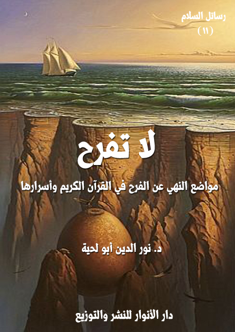

الكتاب: لا تفرح [مواضع النهي عن الفرح في القرآن الكريم وأسرارها]
المؤلف: أ.د. نور الدين أبو لحية
الناشر: دار الأنوار للنشر والتوزيع
الطبعة: الأولى، 1438 هـ
عدد الصفحات: 140
ISBN: 978-620-2-34598-9
لمطالعة الكتاب من تطبيق مؤلفاتي المجاني وهو أحسن وأيسر: هنا

التعريف بالكتاب
يحاول هذا الكتاب ـ عبر الموضوعات القرآنية العشرة التي طرحها ـ أن يتعرف على أسرار النهي عن الفرح في القرآن الكريم، والذي ورد التصريح به في قوله تعالى: P لا تَفْرَحْ إِنَّ اللَّهَ لا يُحِبُّ الْفَرِحِينَ O(القصص: 76)
فهذا النهي الوارد على لسان الناصحين من بني إسرائيل لقارون، نهي سار إلى يوم القيامة، وهو يعبر عن الحقيقة بلسانها الفصيح الناصح.. ذلك أننا نحتاج أن نستمع لمن يدعونا إلى عدم الفرح كما نحتاج إلى من يدعونا إلى عدم الحزن أو عدم اليأس..
ذلك أن الفرح مثله مثل الحزن واليأس قد يتحول إلى أداة من أدوات الشيطان التي يخرب بها بنيان الإنسان، ويجعله منشغلا بما وصل إليه من نعمة، غافلا عما ينتظره من ألم.
ولذلك جمع الله بين النهي عن الأمرين جميعا: الحزن والفرح في قوله تعالى: Pلِكَيْلَا تَأْسَوْا عَلَى مَا فَاتَكُمْ وَلَا تَفْرَحُوا بِمَا آتَاكُمْ وَاللَّهُ لَا يُحِبُّ كُلَّ مُخْتَالٍ فَخُورٍ O [الحديد: 23]
لا تفرح (4)
يحاول هذا الكتاب ـ عبر الموضوعات القرآنية العشرة التي طرحها ـ أن يتعرف على أسرار النهي عن الفرح في القرآن الكريم، والذي ورد التصريح به في قوله تعالى: {لا تَفْرَحْ إِنَّ اللَّهَ لا يُحِبُّ الْفَرِحِينَ} (القصص: 76)
فهذا النهي الوارد على لسان الناصحين من بني إسرائيل لقارون، نهي سار إلى يوم القيامة، وهو يعبر عن الحقيقة بلسانها الفصيح الناصح.. ذلك أننا نحتاج أن نستمع لمن يدعونا إلى عدم الفرح كما نحتاج إلى من يدعونا إلى عدم الحزن أو عدم اليأس..
ذلك أن الفرح مثله مثل الحزن واليأس قد يتحول إلى أداة من أدوات الشيطان التي يخرب بها بنيان الإنسان، ويجعله منشغلا بما وصل إليه من نعمة، غافلا عما ينتظره من ألم.
ولذلك جمع الله بين النهي عن الأمرين جميعا: الحزن والفرح في قوله تعالى: {لِكَيْلَا تَأْسَوْا عَلَى مَا فَاتَكُمْ وَلَا تَفْرَحُوا بِمَا آتَاكُمْ وَاللَّهُ لَا يُحِبُّ كُلَّ مُخْتَالٍ فَخُورٍ} [الحديد: 23]
لذلك حاول هذا الكتاب من خلال التدبر في القرآن الكريم أن يبحث في أسرار الجمع بين النهي عن الفرح، في نفس الوقت الذي نرى فيه الدعوة إليه، كما في قوله تعالى: {قُلْ بِفَضْلِ اللَّهِ وَبِرَحْمَتِهِ فَبِذَلِكَ فَلْيَفْرَحُوا هُوَ خَيْرٌ مِمَّا يَجْمَعُونَ} [يونس: 58]
لا تفرح (5)
وقد تبين لنا من خلال هذه الأبحاث التأملية أن القرآن الكريم لا يدعونا عند نهيه عن الفرح إلى ما نتوهمه بديلا عنه، وهو الحزن أو الكآبة أو الإحباط.. ذلك أن القرآن الكريم كتاب سعادة لا كتاب شقاء، {مَا أَنْزَلْنَا عَلَيْكَ الْقُرْآنَ لِتَشْقَى} [طه: 2]، ويستحيل على الكتاب الذي يضم دستور السعادة الأبدية أن يدعونا إلى الحزن أو الألم والشقاء.
لكنه يدعونا إلى الهرب من الفرح المزيف الكاذب الذي قد يشغلنا عن حقيقتنا ووظيفتنا كما شغل قارون عنهما، فتحول فرحه إلى ألم يسيطر عليه في كل لحظة.
ذلك أن الفرح المزيف لا يختلف عن الخمرة ونشوتها، فهي تجعل صاحبها بلا عقل ولا تفكير، فيقرر قراراته المصيرية بعيدا عن الاستبصار والتدبر والتفكر.
ولذلك كان هذا الكتاب رسالة من رسائل السلام، لأن السلام الحقيقي يبحث عن السعادة الحقيقية الأبدية، لا السعادة المزيفة اللحظية المحدودة.. والفرح المزيف أكبر عقبة تحول بين الإنسان وبين تحقيق تلك السعادة الأبدية.
لا تفرح (6)
أنا هي أول لفظة يعبر بها الإنسان عن نفسه.
وفي الخلق من يقولها لمجرد التعرف والتعريف، ويستعملها كما يستعمل جميع الضمائر منفصلة ومتصلة لا يشعر بالتغاير بينها، ولا يعتقد أن أنا أفضل من أنت، أو أنا خير من هو أو هم.
وفي الخلق من يستعملها كأداة يمحو بها غيره، ويخضع بها رقاب غيره، يقولها ملء فيه، ويتصور أنها كافيه بمجرد نطقه بها أن يسجد لها الخلق، وأن يسمعوا ويطيعوا، أو يسبحوا ويكبروا.
الأول يشعر أنه جزء من كل، وفرد في مجموع، وواحد من عدد ضخم يتشكل منه بنيان الكون، أما الثاني فيعتقد أنه هو الكل، وغيره فروع لخدمته، وأنه هو المجموع وغيره شتات يتوحدون فيه، وأنه هو الواحد وغيره أصفار عن يساره ويمينه يتشكل منه عدده.
الأول يرى نفسه وغيره، ويسمع الأصوات جميعا، وبكل موجاتها، وينمحي في الآخرين كما ينمحون فيه، ويحبهم ويتفاعل في حياته معهم، أما الثاني فلا يرى إلا نفسه، ولا يسمع إلا حسه أومن ضبطت موجاته بحسب ترددات حسه، ولا يعرف الصفر وجوده لأن الصفر غيره.
الأول إذا مشى لم تشعر به الأرض، ولم يتحرك له النسيم، ولم تهرب الطيور من أوكارها ولا النمل إلى قراها ولم تهتز صفحة الماء وهو يطالعها بوجنته، أما الثاني
لا تفرح (7)
فتندك الأرض من تحته، ويتخلخل السحاب من فوقه، وتفر النسور من قمم الجبال إن نظر إليها، وترتفع أمواج البحار إن طالعها بصفحته كالقمر يمدها ويسحبها.
والأنا الثانية هي التي يقال فيها: {لا تَفْرَحْ إِنَّ اللَّهَ لا يُحِبُّ الْفَرِحِينَ} (القصص: 76)، وهي التي ذكر ذمها في القرآن الكريم، وهي التي كانت مصيبة على كل من قالها تائها بنفسه متكبرا على ربه.
وأول من قالها ـ كما ينص القرآن الكريم ـ إبليس عندما أمره الله تعالى بالسجود لآدم فأبى، فسأله الله تعالى: {قَالَ مَا مَنَعَكَ أَلَّا تَسْجُدَ إِذْ أَمَرْتُكَ قَالَ أَنَا خَيْرٌ مِنْهُ خَلَقْتَنِي مِنْ نَارٍ وَخَلَقْتَهُ مِنْ طِين} (الأعراف:12)
ومن ذلك الحين بدأ التعاظم بالذات، وبدأ الانفصال عن الكون المتكامل المتوازن، وورث خلق كثير من بني آدم هذه الكلمة وتعاظموا بها وتاهوا وأسسوا المعابد والقصور لتعبد ذواتهم، لأن الدماء الإلهية تسري في عروقهم، وشيدوا التماثيل ونشروا صورهم في كل المحلات وعلقوها على جميع الجدران، وقتلوا كل ذبابة تطن أثناء حديثهم، وقطعوا حبال كل من رفع صوته أمامهم، وأنشأوا دور الأمن المختلفة لتقوم بما يجب في حقهم من تشريفات وتعظيمات وتبجيلات.
والقرآن الكريم يقص علينا من أنباء هؤلاء، ومنهم {الَّذِي حَاجَّ إِبْرَاهِيمَ فِي رَبِّهِ أَنْ آتَاهُ اللَّهُ الْمُلْكَ إِذْ قَالَ إِبْرَاهِيمُ رَبِّي الَّذِي يُحْيِي وَيُمِيتُ قَالَ أَنَا أُحْيِي وَأُمِيتُ قَالَ إِبْرَاهِيمُ فَإِنَّ اللَّهَ يَأْتِي بِالشَّمْسِ مِنْ الْمَشْرِقِ فَأْتِ بِهَا مِنْ الْمَغْرِبِ فَبُهِتَ الَّذِي كَفَرَ وَاللَّهُ لَا يَهْدِي الْقَوْمَ الظَّالِمِينَ} (البقرة: 258)
لا تفرح (8)
والقرآن الكريم يشير بهذه الآية إلى السذاجة التي يقع فيها هؤلاء المتعاظمين بأنفسهم حين يصدقون أنهم ـ حقيقة ـ آلهة ما دام الملك بأيديهم ورقاب الخلق بين أيديهم يقتلون من يشاءون ويحيون من يريدون بدون معارضة ولا محاسبة، وهذا التعاظم يحجب عن أعينهم مظاهر القصور الكثيرة التي تحيط بجميع ذواتهم.
ولهذا قبل هذا الملك المناظرة مع إبراهيم عليه السلام لأنه كان يظن أن ألوهيته أمر بديهي لا يناقش فيه، وتصوير دهشته وحيرته عندما واجهه إبراهيم عليه السلام بالشمس يدل على أنه لم يكن يراها كما يراها سائر الناس لأنه كان مشغولا بنفسه، ولا يرى غيره إلا أصفارا يعكفون على التسبيح له.
والقرآن الكريم يذكر نموذجا آخر لتعاظم الأنا يفصل في ذكره تفصيلا لم يحظ به اسم كافر غيره، هو فرعون حيث ذكر اسمه في القرآن الكريم في سبعة وستين موضعا، وهذا النموذج تنطبق عليه نفس صفات النموذج السابق إلا أن القرآن الكريم يفسر سبب مرضه، وينص عليه في قوله تعالى: {فَاسْتَخَفَّ قَوْمَهُ فَأَطَاعُوهُ إِنَّهُمْ كَانُوا قَوْمًا فَاسِقِينَ} (الزخرف:54)
ففسق قومه وخفة عقولهم وطاعتهم المطلقة له وقابليتهم لألوهيته هي التي جعلته يصدق حقيقة أنه إله ينبغي أن يعبد، ولهذا كان يصيح فيهم دائما بخطبة واحدة تكفي مبررا لأي أمر يصدره هي: {أَنَا رَبُّكُمْ الْأَعْلَى} (النازعات:24)
وعندما جاءه موسى عليه السلام يدعوه إلى الله ويعرفه بأنه رسول رب العالمين تعجب أن يكون هناك إله غيره فسأله: {وَمَا رَبُّ الْعَالَمِينَ} (الشعراء:23)
لا تفرح (9)
وعندما أراهم موسى عليه السلام كل الحجج نهض فرعون يصيح في قومه وهو يتصور أن كلماته وحدها تكفي لتقرير ما يقول ونسف جميع معجزات موسى عليه السلام: {يَاأَيُّهَا الْمَلَأُ مَا عَلِمْتُ لَكُمْ مِنْ إِلَهٍ غَيْرِي فَأَوْقِدْ لِي يَاهَامَانُ عَلَى الطِّينِ فَاجْعَل لِي صَرْحًا لَعَلِّي أَطَّلِعُ إِلَى إِلَهِ مُوسَى وَإِنِّي لَأَظُنُّهُ مِنْ الْكَاذِبِينَ} (القصص:38)، وهذه هي السذاجة التي يتحلى بها كل من يعظم أناه ويمحو غيره.
لقد كان يتصور أنه إن وجد إله آخر فلن يعدو كونه صاحب سرير مثل سريره أو تاج مثل تاجه، مثلما تتصور الخلائق جميعا من أصحاب الملل المنحرفة آلهتها عندما تطبعها بطابع القومية والعرقية والأرض وتغرق ربها في مستنقعات من الأساطير لتعبد ذاتها من خلال ربها، وتنزل ربها من علياء وجوده ليرفع رايتها ويصيح بشعاراتها ويفكر بتفكيرها.
ويصور القرآن الكريم أسلوب هؤلاء المتعاظمين مع كل من يقيم عليهم الحجة، وهو أسلوب واحد في مختلف فترات التاريخ وإن تعددت أشكاله، وهو ما صاح به فرعون في وجه موسى عليه السلام: {قَالَ لَئِنْ اتَّخَذْتَ إِلَهَا غَيْرِي لَأَجْعَلَنَّكَ مِنْ الْمَسْجُونِينَ} (الشعراء:29) ثم يتوجه إلى الملأ من قومه ناصحا في غاية التواضع: {ذَرُونِي أَقْتُلْ مُوسَى وَلْيَدْعُ رَبَّهُ إِنِّي أَخَافُ أَنْ يُبَدِّلَ دِينَكُمْ أَوْ أَنْ يُظْهِرَ فِي الْأَرْضِ الْفَسَادَ} (غافر:26)، والفساد الذي يعنيه فرعون هنا هو أن يتحول غيره أرقاما ويصير هو جزءا من كل.
لا تفرح (10)
والقرآن الكريم يخبرنا بذلك التهديد ومحاولة تنفيذه ليبين سذاجة التفكير الناتج عن كسل عقل المتعاظم الذي لا يرى غيره ولا يستفيد من غيره، والذي يحول بينه وبين الصبر على أي مناظرة أو التنازل لقبول أي حجة.
ولهذا نرى في جميع مواطن الحوار بين المؤمنين وغيرهم في القرآن الكريم الكفار يقطعون الحوار بإثارة الشغب والتهديد بالقتل والرجم أو بممارسة القتل نفسه، فإبراهيم عليه السلام يقطع حواره الرقيق مع والده بهذا التهديد الخطير: {أَرَاغِبٌ أَنْتَ عَنْ آلِهَتِي يَاإِبْراهِيمُ لَئِنْ لَمْ تَنتَهِ لَأَرْجُمَنَّكَ وَاهْجُرْنِي مَلِيًّا} (مريم:46)، والرجل الذي جاء قومه يسعى في سورة يس يقطع حواره بقتله ليستأنف القرآن الكريم ذكر تتمة حديثه بعد موته، ومؤمن آل فرعون قطع حواره الطويل البليغ بما يشير إلى محاولة قتله، كما قال تعالى: {فَوَقَاهُ اللَّهُ سَيِّئَاتِ مَا مَكَرُوا وَحَاقَ بِآلِ فِرْعَوْنَ سُوءُ الْعَذَابِ} (غافر:45)
والقرآن الكريم يبين أن ذلك التيه بالذات قد لا يكون بسبب ملك عريض أو عرش عظيم، بل قد يتيه الإنسان ببستان يملكه يمحو من خلاله غيره ويتعاظم عليهم، قال تعالى عن صاحب الجنتين: {وَكَانَ لَهُ ثَمَرٌ فَقَالَ لِصَاحِبِهِ وَهُوَ يُحَاوِرُهُ أَنَا أَكْثَرُ مِنْكَ مَالًا وَأَعَزُّ نَفَرًا} (الكهف:34)
بل قد يقول هذا الضمير البسطاء من الخدم والسقاة لمعارف بسيطة يعلمونها أو يدعونها كما قال تعالى عن أحد صاحبي يوسف عليه السلام في السجن: {وَقَالَ الَّذِي نَجَا مِنْهُمَا وَاِدَّكَرَ بَعْدَ أُمَّةٍ أَنَا أُنَبِّئُكُمْ بِتَأْوِيلِهِ فَأَرْسِلُونِي} (يوسف:45) ولهذا
لا تفرح (11)
أنكر عليه الحسن البصري، وقال: كيف ينبئهم العلج؟!
بل في القرآن الكريم ما يشير إلى هذا الإنكار عندما طلب منه يوسف عليه السلام أن يذكره عند ربه فنسي، فمن اللؤم نسيان نبي عرف صديقيته وإحسانه وبشره بنجاته.
ولهذا نرى أن كل من قال أنا في القرآن الكريم من الكفرة يقولها متعاظما مهما اختلف نوع تعاظمه.
ولعله لأجل هذا وردت كراهة التلفظ بهذه الكلمة لغير ضرورة، قال جابر بن عبد الله: (استأذنت على النبي صلى الله عليه وآله وسلم، فقال: من ذا؟ فقلت: أنا فقال النبي صلى الله عليه وآله وسلم: أنا أنا، قال الراوي: كأنه كره قوله أنا)
أما المؤمنون فقولهم أنا في القرآن الكريم يأتي مشفوعا دائما بعبارات التواضع كما قال تعالى عن رسول الله صلى الله عليه وآله وسلم: {قُلْ لَا أَمْلِكُ لِنَفْسِي نَفْعًا وَلَا ضَرًّا إِلَّا مَا شَاءَ اللَّهُ وَلَوْ كُنتُ أَعْلَمُ الْغَيْبَ لَاسْتَكْثَرْتُ مِنْ الْخَيْرِ وَمَا مَسَّنِي السُّوءُ إِنْ أَنَا إِلَّا نَذِيرٌ وَبَشِيرٌ لِقَوْمٍ يُؤْمِنُونَ} (الأعراف:188)
فالله تعالى يأمر نبيه صلى الله عليه وآله وسلم أن ينفي ادعاء أي ملكية لنفع يجلبه لنفسه أو ضر يمنعها منه إلا بما يسره الله له من قوى، وينفي عنه ادعاء الغيب، ويأمره أن يقول في تواضع: {إِنْ أَنَا إِلَّا نَذِيرٌ وَبَشِيرٌ لِقَوْمٍ يُؤْمِنُونَ}
ويأمره في آية أخرى أن يخبرهم بأنه بشر مثلهم آتاه الله الرسالة، وأما الله تعالى فواحد، وأن لقاء الله مرتبط بأعمالهم التوحيدية المحضة لينفي عنهم أي ظن في نسبة
لا تفرح (12)
الألوهية له كما نسبها النصارى للمسيح عليه السلام، قال تعالى: {قُلْ إِنَّمَا أَنَا بَشَرٌ مِثْلُكُمْ يُوحَى إِلَيَّ أَنَّمَا إِلَهُكُمْ إِلَهٌ وَاحِدٌ فَمَنْ كَانَ يَرْجُوا لِقَاءَ رَبِّهِ فَلْيَعْمَلْ عَمَلًا صَالِحًا وَلَا يُشْرِكْ بِعِبَادَةِ رَبِّهِ أَحَدًا} (الكهف:110)
وقد أمر النبي صلى الله عليه وآله وسلم أن يقول هذه الكلمات التي تفيض بالتواضع لقوم عتاة متكبرين يتصورون أن مقامهم الرفيع يستدعي إنزال ملائكة أويستدعي خطابا مباشرا من الله بل رؤية مباشرة له، قال تعالى: {وَقَالَ الَّذِينَ لَا يَرْجُونَ لِقَاءَنَا لَوْلَا أُنزِلَ عَلَيْنَا الْمَلَائِكَةُ أَوْ نَرَى رَبَّنَا لَقَدْ اسْتَكْبَرُوا فِي أَنفُسِهِمْ وَعَتَوْا عُتُوًّا كَبِيرًا} (الفرقان:21)
وكانوا يقولون له صلى الله عليه وآله وسلم في تعاظم إذا أمرهم بالسجود للرحمن: {وَمَا الرَّحْمَانُ أَنَسْجُدُ لِمَا تَأْمُرُنَا وَزَادَهُمْ نُفُورًا} (الفرقان:60) والقرآن الكريم يعيد إلى الأذهان هنا فرعون الذي سأل موسى: {وَمَا رَبُّ الْعَالَمِينَ} (الشعراء:23) ليبين أن مصدر الكفر واحد، وهو تضخيم الأنا والتعالي بها على كل شيء حتى على الله، ولهذا قال تعالى عن الكافرين في كل زمان ومكان: {وَجَحَدُوا بِهَا وَاسْتَيْقَنَتْهَا أَنْفُسُهُمْ ظُلْمًا وَعُلُوًّا فَانظُرْ كَيْفَ كَانَ عَاقِبَةُ الْمُفْسِدِينَ} (النمل:14)، فقد جمعوا بين الجحود والكفران مع يقين أنفسهم بالحق تعاليا بذواتهم وتعاظما بها.
وهم يتخذون في هروبهم من الحق مسالك مختلفة أكثرها بدائية ما ذكره نوح عليه السلام عن قومه وهو يشكو إلى ربه طريقة مقابلتهم لدعوته، قال تعالى: {وَإِنِّي كُلَّمَا دَعَوْتُهُمْ لِتَغْفِرَ لَهُمْ جَعَلُوا أَصَابِعَهُمْ فِي آذَانِهِمْ وَاسْتَغْشَوْا ثِيَابَهُمْ وَأَصَرُّوا
لا تفرح (13)
وَاسْتَكْبَرُوا اسْتِكْبَارًا} (نوح:7)
وهناك من يتعالى عن الحق ويتعاظم على مجرد حركة يشير بها إلى نكران الحق فهو يكتفي بالتولي، ولا يضع يديه على أذنيه ولا يستغشي ثيابه لأن الكبر الذي حشيتا به تمنعه من الاستماع لغير أهوائه، قال تعالى: {وَإِذَا تُتْلَى عَلَيْهِ آيَاتُنَا وَلَّى مُسْتَكْبِرًا كَأَنْ لَمْ يَسْمَعْهَا كَأَنَّ فِي أُذُنَيْهِ وَقْرًا فَبَشِّرْهُ بِعَذَابٍ أَلِيمٍ} (لقمان:7)
وهناك من يجادل ويحاجج في كل المجالات وبدون علم يتخذ من مجرد حديثه حجة تكفي لرد أي حق وإحقاق أي باطل، قال تعالى: {الَّذِينَ يُجَادِلُونَ فِي آيَاتِ اللَّهِ بِغَيْرِ سُلْطَانٍ أَتَاهُمْ كَبُرَ مَقْتًا عِنْدَ اللَّهِ وَعِنْدَ الَّذِينَ آمَنُوا كَذَلِكَ يَطْبَعُ اللَّهُ عَلَى كُلِّ قَلْبِ مُتَكَبِّرٍ جَبَّارٍ} (غافر:35)
وانصراف هؤلاء عن الحق ـ كما يوضح القرآن الكريم ـ ليس انصرافا بمحض إرادتهم ولا برغبتهم، وإنما هو صرف، فالمتعاظم غير مخير كسائر الخلق، بل هو مسير بقيود نفسه الكثيرة والتي لا يطيق لها دفعا، قال تعالى: {سَأَصْرِفُ عَنْ آيَاتِي الَّذِينَ يَتَكَبَّرُونَ فِي الْأَرْضِ بِغَيْرِ الْحَقِّ وَإِنْ يَرَوْا كُلَّ آيَةٍ لَا يُؤْمِنُوا بِهَا وَإِنْ يَرَوْا سَبِيلَ الرُّشْدِ لَا يَتَّخِذُوهُ سَبِيلًا وَإِنْ يَرَوْا سَبِيلَ الغَيِّ يَتَّخِذُوهُ سَبِيلًا ذَلِكَ بِأَنَّهُمْ كَذَّبُوا بِآيَاتِنَا وَكَانُوا عَنْهَا غَافِلِينَ} (الأعراف:146)
وكيف يؤمن هؤلاء أو يذعنوا للحق أو يكفوا عن الجدال، وتعظيمهم لأنفسهم يقف جدارا منيعا بينهم وبين السماء يحول بينهم وبين الهداية التي تستقبلها كل الكائنات، قال تعالى: {إِنَّ الَّذِينَ كَذَّبُوا بِآيَاتِنَا وَاسْتَكْبَرُوا عَنْهَا لَا تُفَتَّحُ لَهُمْ
لا تفرح (14)
أَبْوَابُ السَّمَاءِ وَلَا يَدْخُلُونَ الْجَنَّةَ حَتَّى يَلِجَ الْجَمَلُ فِي سَمِّ الْخِيَاطِ وَكَذَلِكَ نَجْزِي الْمُجْرِمِينَ} (الأعراف:40)
واختيار القرآن الكريم لمثال الجمل الذي يحاول أن يدخل من خلال ثقب إبرة لبيان استحالة دخولهم الجنة يشير إلى ذلك التعاظم، فكأن الجنة في أذهانهم ثقب إبرة، وكأنهم عند أنفسهم جمل ضخم (1) لا تساوي الجنة أمامه شيئا، ويستحيل على الجمل أن يلج سم الخياط.
والقرآن الكريم يصف لنا مشهد قبض أرواح هؤلاء المتعاظمين وهم في سكرات الموت يحاولون الاحتفاظ بحشاشة الروح التي لا تزال تنبض بها عروقهم، يفرون بها في كل موضع من جسدهم، كما يفر الصبي الصغير من الحقنة فيضطر لإمساكه بشدة، وكذلك تفعل الملائكة الموكلة بقبض روحه وهي تؤدي الوظيفة التي وكلت بها، قال تعالى: {وَلَوْ تَرَى إِذْ الظَّالِمُونَ فِي غَمَرَاتِ الْمَوْتِ وَالْمَلَائِكَةُ بَاسِطُوا أَيْدِيهِمْ أَخْرِجُوا أَنفُسَكُمْ الْيَوْمَ تُجْزَوْنَ عَذَابَ الْهُونِ بِمَا كُنتُمْ تَقُولُونَ عَلَى اللَّهِ غَيْرَ الْحَقِّ وَكُنتُمْ عَنْ آيَاتِهِ تَسْتَكْبِرُونَ} (الأنعام:93)
وفي أمر الملائكة لهؤلاء بإخراج أنفسهم دليل على تعلق هؤلاء الشديد بذواتهم تعلقا يبتر صلتهم بكل الكون، ويجعل منهم كونا حياديا غارقا في الحياد.
بينما تصف الآيات القرآنية مشهد المؤمنين وهم في احتضارهم في حالة
__________
(1) سئل ابن مسعود عن الجَمَلِ فقال هو زوج الناقة. كأنه استجهل من سأله عن الجمل، وقرأ بعضهم الجُمل، وفسَّروه فقالوا قَلسُ السفينة.. معاني القرآن وإعرابه للزجاج (2/ 338)
لا تفرح (15)
استرخاء قصوى تنم بالراحة والطمأنينة والسعادة، قال تعالى يخاطب تلك النفس المؤمنة البعيدة عن كل أنا ومتعلقاتها: {يَاأَيَّتُهَا النَّفْسُ الْمُطْمَئِنَّة ُارْجِعِي إِلَى رَبِّكِ رَاضِيَةً مَرْضِيَّةً فَادْخُلِي فِي عِبَادِي وَادْخُلِي جَنَّتِي} (الفجر: 2 ـ 30)
وفي أمرها بالدخول في عباد الله الصالحين دليل على ما كانت تحمله النفس من تواضع ولين وشعور بالآخرين، وهي البشارة التي يبشر الله بها عباده الصالحين الذين لا يشعرون باكتمال نعيمهم في الجنة إلا بإخوانهم، قال تعالى: {وَالَّذِينَ آمَنُوا وَعَمِلُوا الصَّالِحَاتِ لَنُدْخِلَنَّهُمْ فِي الصَّالِحِينَ} (العنكبوت:9)، ويصف حالهم في الجنة بكونهم {إِخْوَانًا عَلَى سُرُرٍ مُتَقَابِلِينَ} (الحجر:47)
ويخبرنا أنس بن مالك بحادثة كانت سببا لمسرة عظيمة انتشرت بين الصحابة، قال: جاء رجل إلى رسول الله صلى الله عليه وآله وسلم فقال: يا رسول الله متى قيام الساعة؟، فقام النبي صلى الله عليه وآله وسلم إلى الصلاة، فلما قضى صلاته قال: أين السائل عن قيام الساعة؟، فقال الرجل: أنا يا رسول الله قال: ما أعددت لها؟ قال: يا رسول الله ما أعددت لها كبير صلاة ولا صوم إلا أني أحب الله ورسوله، فقال رسول الله صلى الله عليه وآله وسلم (المرء مع من أحب وأنت مع من أحببت)، فما رأيت فرح المسلمون بعد الإسلام فرحهم بهذا (1).
ولهذا لما حضرت بلالا الوفاة قالت امرأته: واحزناه، فقال: بل واطرباه، غدا نلقى الأحبة محمدا وحزبه.
وهؤلاء العباد الصالحون المتعارفون في محبة الله لم تكن المحبة لتربط بين
__________
(1) رواه أحمد 3/ 159 (12652) وأبو داود 5127.. وغيرهما.
لا تفرح (16)
قلوبهم وتجعلهم نفسا واحدة لو كان لكل واحد منهم كيانه الخاص.
ولهذا وصف الله تعالى تجمعات وتوحدات غير المسلمين بهذا الوصف المطلع على ما تخبئه الضمائر: {بَأْسُهُمْ بَيْنَهُمْ شَدِيدٌ تَحْسَبُهُمْ جَمِيعًا وَقُلُوبُهُمْ شَتَّى ذَلِكَ بِأَنَّهُمْ قَوْمٌ لَا يَعْقِلُونَ} (الحشر:14)، لأن كل واحد من أولئك المجتمعين يريد أن يبني صرح نفسه على أطلال الآخرين، فهم يجتمعون بالمصلحة، ويتفرقون أو يتقاتلون إن دعت المصلحة إلى ذلك.
في نفس الوقت الذي نرى فيه مشاهد الإيثار بين المؤمنين تشير إلى تلك الروح الواحدة التي تجمع بينهم، قال تعالى: {وَالَّذِينَ تَبَوَّءُوا الدَّارَ وَالْإِيمَانَ مِنْ قَبْلِهِمْ يُحِبُّونَ مَنْ هَاجَرَ إِلَيْهِمْ وَلَا يَجِدُونَ فِي صُدُورِهِمْ حَاجَةً مِمَّا أُوتُوا وَيُؤْثِرُونَ عَلَى أَنْفُسِهِمْ وَلَوْ كَانَ بِهِمْ خَصَاصَةٌ وَمَنْ يُوقَ شُحَّ نَفْسِهِ فَأُوْلَئِكَ هُمْ الْمُفْلِحُونَ} (الحشر:9) فهم يحبون ضيوفهم واللاجئين إليهم ويمدونهم بكل شيء يحرمون أنفسهم منه، ولا يجدون في صدورهم إلا الرضا والراحة والطمأنينة.
وهذه الراحة والأمن النفسي التي يراها المؤمن مع إخوانه يفتقدها الذي لا يعرف من الضمائر المنفصلة إلا ضمير واحدا هو ضمير المتكلم.
وبذلك يصور القرآن الكريم والتوجيهات النبوية والنماذج العالية من النفوس الراقية عظم خسارة الذي يتخذ من ذاته صنما، ومن الأرض هيكلا، ومن الخلق قرابين، فأول ما يخسره من ذبح جميع الكون قربانا لذاته نفسه التي بين جنبيه، ومن خسر نفسه خسر كل شيء خسارة لا تعوض قال تعالى: {وَقَالَ الَّذِينَ آمَنُوا
لا تفرح (17)
إِنَّ الْخَاسِرِينَ الَّذِينَ خَسِرُوا أَنفُسَهُمْ وَأَهْلِيهِمْ يَوْمَ الْقِيَامَةِ أَلَا إِنَّ الظَّالِمِينَ فِي عَذَابٍ مُقِيم} (الشورى:45)
ويرد القرآن الكريم سبب ذلك النسيان إلى نسيان الله تعالى، لأن من نسي الله نسي كل شيء، لأن كل شيء بالله ومن الله وإلى الله، وكل شيء بغير الله باطل، وكل شيء من غير الله هباء.
فالناسي لله ارتبط بوجود وهمي خيالي لا حقيقة له، فلذلك يصعق يوم يكتشف الحقيقة مبهوتا حين يرى نفسه قد تعلق بقشة في وسط محيط كوني لا ينتهي، قال تعالى:: {وَلَا تَكُونُوا كَالَّذِينَ نَسُوا اللَّهَ فَأَنْسَاهُمْ أَنْفُسَهُمْ أُوْلَئِكَ هُمْ الْفَاسِقُون} (الحشر:19)
واعتبر كل جرائمهم المتولدة من أنانيتهم خناجر تطعن صدورهم قبل أن تصل لضحاياهم، فهم الفريسة وهم الصياد، وهم الخائن وهم المخون، وهم الخادع وهم المخدوع، وهم المستهزئ وهم المستهزأ بهم، وهم المفتري وهم المفترى عليه، وهم الظالم وهم المظلوم...
قال الله تعالى يوضح هذه الحقائق، ويخاطب هذه النفوس: {يُخَادِعُونَ اللَّهَ وَالَّذِينَ آمَنُوا وَمَا يَخْدَعُونَ إِلَّا أَنفُسَهُمْ وَمَا يَشْعُرُونَ} (البقرة: 9)، وقال تعالى: {وَمَا ظَلَمُونَا وَلَكِنْ كَانُوا أَنفُسَهُمْ يَظْلِمُونَ} (البقرة:57)، وقال تعالى: {وَدَّتْ طَائِفَةٌ مِنْ أَهْلِ الْكِتَابِ لَوْ يُضِلُّونَكُمْ وَمَا يُضِلُّونَ إِلَّا أَنْفُسَهُمْ وَمَا يَشْعُرُونَ} (آل عمران:69)، وقال تعالى: {انظُرْ كَيْفَ كَذَبُوا عَلَى أَنفُسِهِمْ وَضَلَّ
لا تفرح (18)
عَنْهُمْ مَا كَانُوا يَفْتَرُونَ} (الأنعام:24)، وقال تعالى: {وَلَا تُجَادِلْ عَنْ الَّذِينَ يَخْتَانُونَ أَنفُسَهُمْ إِنَّ اللَّهَ لَا يُحِبُّ مَنْ كَانَ خَوَّانًا أَثِيمًا} (النساء:107)
إلى آخر آيات القرآن الكريم الكثيرة التي تنعى إلى هؤلاء المتعاظمين أنفسهم وتبشرهم بالخسارة الأبدية يوم توضع موازين الأعمال والحقائق، فيجدون كفتهم فارغة من كل خير، ولا يجدون في كفتهم إلا جسدا منطويا هزيلا قد عبدوه من دون الله، ولا يجدون إلا ضميرا واحد من الضمائر المنفصلة حجبهم عن كل خير، قال تعالى: {وَمَنْ خَفَّتْ مَوَازِينُهُ فَأُوْلَئِكَ الَّذِينَ خَسِرُوا أَنفُسَهُمْ فِي جَهَنَّمَ خَالِدُونَ} (المؤمنون:103)
لا تفرح (19)
الفرح بالهيئة والخلقة والجمال والزهو بها من أول ما يولد في الإنسان من فرح حين يبصر وجهه في المرآة لأول مرة، ويتصور أنه بالمرآة استطاع أن يعرف نفسه، وأن المرآة التي أحاطت به واختصرت حقيقته في تلك الصورة التي قدمتها له هي التي عرفته حقيقته التي ما كان له أن يعرفها لولا جوهرها الصقيل.
ومن ذلك الحين تبدأ الأخطاء يتلو بعضها بعضا، يزهو بنفسه، ثم يقارن نفسه بغيره، ثم يحتقر غيره، ثم يصنف الناس بحسب صورهم وألوان الأصباغ التي تطبع وجوههم، ثم يبدأ التمييز العنصري، ويبدأ حرب الألوان للألوان، وتبدأ الدراسات بحوثها لتعمق الفوارق بين البشر والأجناس بحسب هيئة الشعر ولون البشرة وحجم الجمجمة وطول القامة أو قصرها، وبانتهائهم تبدأ النزغات النازية والفاشية والقومية لتنفخ من بوق الجسد كل شعارات التمييز بين خلق الله، وتتخذ من الجسد محور كل ذلك الصراع الذي لا ينتهي إلا ليبدأ بشكل آخر.
نعم، يمكن أن نجزم حذرين بانتفاء التمييز العنصري وانتهاء زمنه في ظل كثير من القوانين الحديثة، ولكن من يستطيع أن يجزم بانتفاء ذلك التمييز من قلوب الناس ومشاعرهم وهم لا يزالون يتصورون الإنسان قالبا طينيا يتخذ ألوانا وأشكالا مختلفة، وطبيعتهم البشرية تأبى ألا أن تفرق بين ألوان الخزف وأنواع الفخار.
وتعظيم الجسد وحصر الإنسان في قالبه الطيني هو الذي تفنن مصممو
لا تفرح (20)
الأزياء الحديثة في استغلاله، فتففنوا في تعرية الجسد أكثر مما تفننوا في ستره، والقرآن الكريم في إشاراته المطلقة التي تتحدى حجاب الزمن يخبرنا عن دعاة العري المحدثين الذين يدعون إلى العري بكل الوسائل، ويطبقونه في جميع المستويات، ويكادون يفرضونه على العقول فرضا لينزعوا تلك الغلالة الرقيقة من الحياء التي لا زالت تكسو وجوه الناس، ويبين أن مصدر ذلك ليس طبيعة بشرية وإنما هي فكر شيطاني غريب عن طبيعة الإنسان، قال تعالى: {يَا بَنِي آدَمَ لا يَفْتِنَنَّكُمُ الشَّيْطَانُ كَمَا أَخْرَجَ أَبَوَيْكُمْ مِنَ الْجَنَّةِ يَنْزِعُ عَنْهُمَا لِبَاسَهُمَا لِيُرِيَهُمَا سَوْآتِهِمَا إِنَّهُ يَرَاكُمْ هُوَ وَقَبِيلُهُ مِنْ حَيْثُ لا تَرَوْنَهُمْ إِنَّا جَعَلْنَا الشَّيَاطِينَ أَوْلِيَاءَ لِلَّذِينَ لا يُؤْمِنُونَ} (لأعراف:27)
والدليل على غرابة التعري على طبيعة الإنسان وأنه إيحاء شيطاني لم يكن الإنسان لينتبه له لولا تلك الوساوس الشيطانية هو أن آدم عليه السلام وزوجه سارعا إلى ستر عورتهما بورق الجنة مع أنه لم يكن معهما من البشر سواهما، وهما يمثلان الفطرة النقية التي يحاول الشيطان أن يخرج منها الإنسان، قال تعالى: {فَدَلَّاهُمَا بِغُرُورٍ فَلَمَّا ذَاقَا الشَّجَرَةَ بَدَتْ لَهُمَا سَوْآتُهُمَا وَطَفِقَا يَخْصِفَانِ عَلَيْهِمَا مِنْ وَرَقِ الْجَنَّةِ وَنَادَاهُمَا رَبُّهُمَا أَلَمْ أَنْهَكُمَا عَنْ تِلْكُمَا الشَّجَرَةِ وَأَقُلْ لَكُمَا إِنَّ الشَّيْطَانَ لَكُمَا عَدُوٌّ مُبِينٌ} (الأعراف:22)، بل إن الآية تشير إلى أن كشف العورة أول عقوبة عجلت للإنسان لمخالفته الأمر الإلهي.
وفكر التعري هو نفس الفكر الذي يدعو إلى تغيير خلق الله، والذي يتجلى في عمليات التجميل الكثيرة، وأصناف المساحيق التي أصبحت تجارة رائجة في
لا تفرح (21)
عصرنا تزاحم الغذاء والدواء، وتعتبر ضرورة من ضرورات العصر كضرورة المأكل والمشرب.
والقرآن الكريم يخبرنا أن ذلك أيضا من إيحاءات الشيطان، وأنه ليس من الفطرة الإنسانية النقية، قال تعالى مخبرا عن وعد الشيطان: {وَلَأُضِلَّنَّهُمْ وَلَأُمَنِّيَنَّهُمْ وَلَآمُرَنَّهُمْ فَلَيُبَتِّكُنَّ آذَانَ الْأَنْعَامِ وَلَآمُرَنَّهُمْ فَلَيُغَيِّرُنَّ خَلْقَ اللَّهِ} (النساء:119)،وعن ابن مسعود أنه قال: (لعن الله الواشمات والمستوشمات والنامصات والمتنمصات والمتفلجات للحسن المغيرات خلق الله عز وجل، ثم قال: ألا ألعن من لعن رسول الله صلى الله عليه وآله وسلم)
وهذا التعلق بالجسد والذي هو إيحاء من إيحاءات الشيطان وطبيعة من طبائعه كان أول ما ولد العداوة بين الإنسان والشيطان، عندما نظر الشيطان إلى ناره نظر استحسان وفرح، ونظر إلى طين آدم نظر استهجان واحتقار، فقال ـ كما نص القرآن الكريم ـ: {أَنَا خَيْرٌ مِنْهُ خَلَقْتَنِي مِنْ نَارٍ وَخَلَقْتَهُ مِنْ طِينٍ} (الأعراف:12)
وقد شبه الله تعالى هؤلاء الذين يقصرون نظرهم على أجسادهم، ويعتبرونها حقيقة وجودهم ونهاية أمرهم بالأخشاب المسندة، قال تعالى {وَإِذَا رَأَيْتَهُمْ تُعْجِبُكَ أَجْسَامُهُمْ وَإِنْ يَقُولُوا تَسْمَعْ لِقَوْلِهِمْ كَأَنَّهُمْ خُشُبٌ مُسَنَّدَةٌ يَحْسَبُونَ كُلَّ صَيْحَةٍ عَلَيْهِمْ هُمْ الْعَدُوُّ فَاحْذَرْهُمْ قَاتَلَهُمْ اللَّهُ أَنَّى يُؤْفَكُونَ} (المنافقون:4)
فهم كالخشب المسندة لا يسمعون ولا يعقلون، أشباح بلا أرواح وأجسام بلا أحلام، أو هم كالخشب التي قد تآكلت فهي مسندة بغيرها لا يعلم ما في
لا تفرح (22)
بطنها (1).
والقرآن الكريم يخبرنا كذلك أن تعظيم الجسد هو الذي ولد التيه والفخر والزهو بالنفس، والذي ينشأ عنه الكبر بمختلف أشكاله، ويشبه ثقل معنى الجسد عند هذه النفوس بأنها تكاد تخرق الأرض وهي تضرب عليها بشدة، وكأنها تتحداها، بل تتحدى السماء أيضا حين تجرب أن تطاول الجبال، قال تعالى: {وَلَا تَمْشِ فِي الْأَرْضِ مَرَحًا إِنَّكَ لَنْ تَخْرِقَ الْأَرْضَ وَلَنْ تَبْلُغَ الْجِبَالَ طُولًا} (الإسراء:37)
في ظل هذه التصورات العنصرية للجسد يخبرنا القرآن الكريم أن هذه الأجساد جميعا والتي يتيه بعضها على بعض سلالة نفس واحدة، ولذلك لا معنى للتمايز بينها، ولا معنى لاعتبار بعضها أكثر تطورا من بعض لأنها ورثت نفس الجينات من أبيها آدم عليه السلام، قال تعالى: {يَاأَيُّهَا النَّاسُ اتَّقُوا رَبَّكُمْ الَّذِي خَلَقَكُمْ مِنْ نَفْسٍ وَاحِدَةٍ وَخَلَقَ مِنْهَا زَوْجَهَا وَبَثَّ مِنْهُمَا رِجَالًا كَثِيرًا وَنِسَاءً وَاتَّقُوا اللَّهَ الَّذِي تَتَسَاءَلُونَ بِهِ وَالْأَرْحَامَ إِنَّ اللَّهَ كَانَ عَلَيْكُمْ رَقِيبًا} (النساء:1)، وقال تعالى: {وَهُوَ الَّذِي أَنشَأَكُمْ مِنْ نَفْسٍ وَاحِدَةٍ فَمُسْتَقَرٌّ وَمُسْتَوْدَعٌ قَدْ فَصَّلْنَا الْآيَاتِ لِقَوْمٍ يَفْقَهُونَ} (الأنعام:98)
وقد ربط الله تعالى في الآية الأولى خلق البشر جميعا من نفس واحدة بالأمر بتقوى الأرحام ووصلها والمحافظة على العلاقات بينها ليشير إلى تلك الأخوة الدموية التي تربط الغربي الذي يعيش في قمة أبراج الأنا بالبدائي في أدغال إفريقيا
__________
(1) انظر: الشوكاني:5/ 323،والقرطبي 18/ 112.
لا تفرح (23)
واستراليا، وأن الكل متساوون في القدرات الإنسانية والطاقات العقلية وأنواع المشاعر، وإنما يختلفون باختلاف الظروف التي تحيط بهم والبيئة التي يعايشونها، والاختلاف بينهم اختلاف تكامل لا اختلاف تمايز ولا اختلاف تضاد، بل هو مثل الاختلاف الموجود في جميع خلق الله.
قال تعالى يوضح هذه الحقيقة العظيمة التي لا تزال البشرية تائهة عنها وإن زعمت أنها ظفرت بها، وأن العصر الحديث أبدعها: {يَاأَيُّهَا النَّاسُ إِنَّا خَلَقْنَاكُمْ مِنْ ذَكَرٍ وَأُنثَى وَجَعَلْنَاكُمْ شُعُوبًا وَقَبَائِلَ لِتَعَارَفُوا إِنَّ أَكْرَمَكُمْ عِنْدَ اللَّهِ أَتْقَاكُمْ إِنَّ اللَّهَ عَلِيمٌ خَبِيرٌ} (الحجرات:13)
وقد كان صلى الله عليه وآله وسلم ينادي بهذه الحقيقة كل حين ويقرن بينها وبين المناسك والمشاعر المعظمة والأشهر الحرام، وكان من خطبته صلى الله عليه وآله وسلم في وسط أيام التشريق أن قال: (يا أيها الناس ألا إن ربكم واحد وإن أباكم واحد، ألا لا فضل لعربي على أعجمي ولا لعجمي على عربي ولا لأحمر على أسود ولا أسود على أحمر إلا بالتقوى) (1)
ثم توجه إلى الحضور الغارقين في أنوار وجهه وروحه صلى الله عليه وآله وسلم وقال: أبلغت؟، فقالوا جميعا بصوت واحد، وبنفس واحدة يؤكدون ما رأوه منه صلى الله عليه وآله وسلم وقد صحبوه في كل أحواله: بلغ رسول الله صلى الله عليه وآله وسلم، قال: (ليبلغ الشاهد الغائب)
ويخبر صلى الله عليه وآله وسلم أن من فضل الله عليه أن دعوته ليست عنصرية، بل هي لكل البشر، وكل من دخل فيهم فهو منهم لا فرق بينه وبينهم، قال صلى الله عليه وآله وسلم: (أعطيت خمسا لم
__________
(1) رواه أحمد 5/ 411.
لا تفرح (24)
يعطهن أحد قبلي ولا أقوله فخرا بعثت إلى كل أحمر وأسود فليس من أحمر ولا أسود يدخل في أمتي إلا كان منهم وجعلت لي الأرض مسجدا) (1)
ويخبر أن الله تعالى لا ينظر إلى الأجسام والصور، ولكن ينظر إلى القلوب والأعمال، وأن قيمة الإنسان كقيمة كل وعاء، فهي فيما يصدر عنه أو يرشح منه أو يحويه، ولو وضع السم في إناء من ذهب لم ترفع عنه صفة السمية، قال صلى الله عليه وآله وسلم: (إن الله لا ينظر إلى صوركم وأموالكم ولكن ينظر إلى قلوبكم وأعمالكم) (2)
وكان صلى الله عليه وآله وسلم يأمر بطاعة كل من تولى على المسلمين إن توفرت فيه شروط الطاعة ولو كان أسود مجدعا، قال صلى الله عليه وآله وسلم: (إن أمر عليكم عبد مجدع أسود يقودكم بكتاب الله تعالى فاسمعوا له وأطيعوا) (3)
وكان صلى الله عليه وآله وسلم لا تشغله الوظائف الكثيرة التي أناطها الله بها عن السؤال عن البسطاء من المسلمين دون تفريق بين سودهم وبيضهم، ففي الحديث أن أسود رجلا أو امرأة كان يقم المسجد، فمات ولم يعلم النبي صلى الله عليه وآله وسلم بموته، فذكره ذات يوم فقال: ما فعل ذلك الإنسان؟، قالوا: مات يا رسول الله، قال: أفلا آذنتموني؟، فقالوا: إنه كان كذا وكذا قصته قال: فحقروا شأنه قال: فدلوني على قبره، فأتى قبره فصلى عليه (4).
__________
(1) رواه أحمد 3/ 304 (14314. وعبد بن حميد (1154) والدارمي: 1389 والبخاري: 335.
(2) رواه أحمد 2/ 484 (7814) وفي 2/ 539 (10973) ومسلم: 8/ 11.
(3) رواه الحميدي (359) وأحمد: 6/ 402.
(4) رواه أحمد 2/ 353 (8619)، والبخاري: 458.
لا تفرح (25)
وكان صلى الله عليه وآله وسلم يتابع أصحابه ويربيهم على هذه الأخوة، ويبين لهم نوع العلاقة التي ينبغي أن تربط بينهم ولو كان بعضهم عبيدا وبعضهم سادة، عن المعرور بن سويد قال: مررنا بأبي ذر بالربذة، وعليه برد وعلى غلامه مثله، فقلنا: يا أبا ذر لو جمعت بينهما كانت حلة، فقال: إنه كان بيني وبين رجل من إخواني كلام، وكانت أمه أعجمية، فعيرته بأمه، فشكاني إلى النبي صلى الله عليه وآله وسلم فلقيت النبي صلى الله عليه وآله وسلمفقال: يا أبا ذر إنك امرؤ فيك جاهلية قلت: يا رسول الله، من سب الرجال سبوا أباه وأمه قال: يا أبا ذر، إنك امرؤ فيك جاهلية، هم إخوانكم جعلهم الله تحت أيديكم، فأطعموهم مما تأكلون، وألبسوهم مما تلبسون، ولا تكلفوهم ما يغلبهم، فإن كلفتموهم فأعينوهم (1).
وكان صلى الله عليه وآله وسلم يشدد عليهم الترهيب إن أخلوا ببعض حقوق تلك الأخوة، وإن كان في أمور كانت طبيعية بالنسبة لأذهان ذلك العصر، عن أبي مسعود الأنصاري قال: كنت أضرب غلاما لي، فسمعت من خلفي صوتا: اعلم أبا مسعود، لله أقدر عليك منك عليه، فالتفت، فإذا هو النبي صلى الله عليه وآله وسلم، فقلت: يا رسول الله، هو حر لوجه الله تعالى قال: أما إنك لو لم تفعل للفعتك النار أو لمستك النار (2).
وليعمق القرآن الكريم هذه الحقيقة في النفس بغض النظر عن آثارها الاجتماعية يخبرنا عن حقيقة الإنسان كل إنسان، وهي أنه روح وجسد، روح هي
__________
(1) رواه عبد الرزاق (17965)، وأحمد 5/ 158 (21738) والبخاري: 1/ 14 (30).
(2) رواه أحمد 4/ 120 (17215) والبخاري في الأدب المفرد 171 ومسلم 4319.
لا تفرح (26)
الأصل، وجسد هو مطية لهذه الروح، والمطية لا يراد منها إلا أن تحمل راكبها وتبلغه غايته، ولا يراعي فيها صاحبها ـ إن خير ـ إلا قدراتها وتحملها، قال تعالى: {وَإِذْ قَالَ رَبُّكَ لِلْمَلَائِكَةِ إِنِّي خَالِقٌ بَشَرًا مِنْ صَلْصَالٍ مِنْ حَمَإٍ مَسْنُونٍفَإِذَا سَوَّيْتُهُ وَنَفَخْتُ فِيهِ مِنْ رُوحِي فَقَعُوا لَهُ سَاجِدِينَ} (الحجر:28، 29)
وكل لفظ في هذه الآية ينطق بفضل الروح على الجسد، فبينما وصف الجسد بكونه من صلصال، وهو ـ كما قال الكسائي ـ الطين المنتن، وهو مأخوذ من قول العرب: صل اللحم وأصل، إذا أنتن.
وهو من حمأ، وهو الطين الأسود المتغير، ثم أكدت كل تلك الروائح المتغيرة بوصف المسنون، وهو ـ كما قال الفراء ـ المتغير (1) في نفس الوقت نسبت الروح إلى الله، ولم تنفخ في الجسد إلا بعد تسويته، لم يؤمر بالسجود إلا بعد نفخها.
والآية التي ورد فيها الحديث عن بسطة الجسم، والتي اعتبرتها أحد أسباب الأفضلية لم تذكر مطلقة بل قدمت فيها بسطة العلم على بسطة الجسم، ولم تذكر بسطة الجسم إلا للحاجة إليها، فالقائد يحتاج إلى طاقات جسمية كافية تؤهله للوظيفة التي تناط به، قال تعالى: {وَقَالَ لَهُمْ نَبِيُّهُمْ إِنَّ اللَّهَ قَدْ بَعَثَ لَكُمْ طَالُوتَ مَلِكًا قَالُوا أَنَّى يَكُونُ لَهُ الْمُلْكُ عَلَيْنَا وَنَحْنُ أَحَقُّ بِالْمُلْكِ مِنْهُ وَلَمْ يُؤْتَ سَعَةً مِنْ الْمَالِ قَالَ إِنَّ اللَّهَ اصْطَفَاهُ عَلَيْكُمْ وَزَادَهُ بَسْطَةً فِي الْعِلْمِ وَالْجِسْمِ وَاللَّهُ يُؤْتِي مُلْكَهُ مَنْ يَشَاءُ وَاللَّهُ وَاسِعٌ عَلِيمٌ} (البقرة:247)
__________
(1) الشوكاني:3/ 185.
لا تفرح (27)
ولعله لأجل ذلك كان موسى عليه السلام كما وصفه رسول الله صلى الله عليه وآله وسلم عندما رآه حين أسري به، فقال: (موسى آدم طوال كأنه من رجال شنوءة بينما عيسى عليه السلام جعد مربوع) (1)، لأن الرسالة التي كلف بها لم تكن تستدعي تلك البسطة.
ولهذا كان صلى الله عليه وآله وسلم يدعو ويربي أصحابه على اعتبار بسطة العلم والعقل لا بسطة الجسم، وقد روي عن ابن مسعود أنه كان يجتني سواكا من الأراك، وكان دقيق الساقين، فجعلت الريح تكفؤه، فضحك القوم منه، فقال رسول الله صلى الله عليه وآله وسلم: مم تضحكون؟ قالوا: يا نبي الله من دقة ساقيه، فقال: والذي نفسي بيده لهما أثقل في الميزان من أحد (2).
ولكن القرآن الكريم والتوجيهات النبوية ـ مع نهيها عن تعظيم الجسد والفرح به واعتباره حقيقة الإنسان ومحور وجوده ـ لا تأمر باحتقاره أو التهوين من شأنه، بل تأمر عكس ذلك باحترامه، ولكن باعتبار صورته من الله، فمن أسماء الله تعالى المصور، وتعظيم الاسم يستلزم احترام مقتضاه، وهذا الاعتبار يقي الإنسان مخاطر التيه بالجسد واستشعار التميز به عن غيره، قال تعالى: {وَلَقَدْ خَلَقْنَاكُمْ ثُمَّ صَوَّرْنَاكُمْ ثُمَّ قُلْنَا لِلْمَلَائِكَةِ اسْجُدُوا لِآدَمَ فَسَجَدُوا إِلَّا إِبْلِيسَ لَمْ يَكُنْ مِنْ السَّاجِدِينَ} (الأعراف:11)
ولهذا نهى النبي صلى الله عليه وآله وسلم أن يضرب الإنسان على وجهه، وعلل ذلك بأن الله خلق
__________
(1) رواه البخاري 4/ 141 (3239) و4/ 186 (3396) ومسلم 1/ 105 (338).
(2) رواه أحمد 1/ 420 (3991)
لا تفرح (28)
كل إنسان على صورة آدم عليه السلام، واحتقار صورة أي إنسان أو إهانتها إهانة لأبينا آدم عليه السلام، قال صلى الله عليه وآله وسلم: (إذا ضرب أحدكم فليجتنب الوجه ولا يقل: قبح الله وجهك ووجه من أشبه وجهك، فإن الله عز وجل خلق آدم على صورته) (1)
ونظر الإنسان إلى الجسد بهذا الاعتبار يجعله يرى الحسن في كل صورة، لأن القاعدة التي ينطلق منها هي أن الله هو أحسن الخالقين، كما ورد بذلك وصفه في خطاب إلياس عليه السلام لقومه، قال تعالى: {أَتَدْعُونَ بَعْلًا وَتَذَرُونَ أَحْسَنَ الْخَالِقِينَ} (الصافات:125)، وكما ورد وصفه كذلك به عند تفصيل خلق الإنسان كل إنسان، قال تعالى: {ثُمَّ خَلَقْنَا النُّطْفَةَ عَلَقَةً فَخَلَقْنَا الْعَلَقَةَ مُضْغَةً فَخَلَقْنَا الْمُضْغَةَ عِظَامًا فَكَسَوْنَا الْعِظَامَ لَحْمًا ثُمَّ أَنشَأْنَاهُ خَلْقًا آخَرَ فَتَبَارَكَ اللَّهُ أَحْسَنُ الْخَالِقِينَ} (المؤمنون:14)
ومادام ذلك هو وصف الله فإن كل ما يصدر عنه من خلق حسن وجميل لا عيب فيه ولا نقص ولا فطور، قال تعالى: {الَّذِي أَحْسَنَ كُلَّ شَيْءٍ خَلَقَهُ وَبَدَأَ خَلْقَ الْإِنسَانِ مِنْ طِين} (السجدة:7)، والإنسان من مخلوقات الله، فلذلك كان في أحسن تقويم: {لَقَدْ خَلَقْنَا الْإِنسَانَ فِي أَحْسَنِ تَقْوِيم} (التين:4)
والألف واللام تفيدان استغراق جنس الإنسان في كل العصور، وكل الأماكن، وبكل الألوان، وكل الأشكال.
ولهذا نهى النبي صلى الله عليه وآله وسلم أن يسخر من أي لون أو شكل لأنه سخرية من خلق الله،
__________
(1) رواه أحمد 2/ 347 (8556) ومسلم 6747.
لا تفرح (29)
ومن سخر من خلق الله فكأنما سخر من الله أو اعترض على الله في خلقه، ولهذا عظم صلى الله عليه وآله وسلم ما فعلته عائشة، حين وصفت امرأة بالقصر بالإشارة دون اللفظ، قالت عائشة: حكيت للنبي صلى الله عليه وآله وسلم رجلا فقال ما يسرني أني حكيت رجلا وأن لي كذا وكذا قالت: فقلت: يا رسول الله إن صفية امرأة، وقالت بيدها هكذا، كأنها تعني قصيرة، فقال: لقد مزجت بكلمة لو مزجت بها ماء البحر لمزج (1).
وزيادة على ذلك كله يخاطب القرآن الكريم برقة وحنان الذين تعذبوا بأجسامهم وأشكالهم ونفاهم الخلق لدمامتهم بأن حسن غيرهم الذي يتيهون به عليهم لا يغني عنهم شيئا إن جاء أمر الله، لأن الله أهلك من هو أحسن منهم منظرا وأجمل متاعا، قال تعالى: {وَكَمْ أَهْلَكْنَا قَبْلَهُمْ مِنْ قَرْنٍ هُمْ أَحْسَنُ أَثَاثًا وَرِئْيًا} (مريم:74)
ويعزيهم كذلك بأن الألوان التي يحملونها على وجوههم مجرد ألوان مستعارة ستتغير يوم القيامة إلى ألوان نهائية، أو هي مجرد براقع، واللون الحقيقي هو لون الروح، فلذلك لا ينبغي للأسود أن يحزن لسواده، ولا للأبيض أن يفخر ببياضه، كما لا يفرح من يضع قناعا على وجهه بلون قناعه، قال تعالى: {يَوْمَ تَبْيَضُّ وُجُوهٌ وَتَسْوَدُّ وُجُوهٌ فَأَمَّا الَّذِينَ اسْوَدَّتْ وُجُوهُهُمْ أَكَفَرْتُمْ بَعْدَ إِيمَانِكُمْ فَذُوقُوا الْعَذَابَ بِمَا كُنْتُمْ تَكْفُرُونَ وَأَمَّا الَّذِينَ ابْيَضَّتْ وُجُوهُهُمْ فَفِي رَحْمَةِ اللَّهِ هُمْ فِيهَا خَالِدُونَ} (آل عمران:107)
__________
(1) رواه أحمد 6/ 128 وفي 6/ 136 و206 وأبو داود 4875 والترمذي 2502.
لا تفرح (30)
ففي القيامة تنزع جميع الأقنعة وتظهر الصور على حقيقتها كما قال تعالى: {لَقَدْ كُنْتَ فِي غَفْلَةٍ مِنْ هَذَا فَكَشَفْنَا عَنْكَ غِطَاءَكَ فَبَصَرُكَ الْيَوْمَ حَدِيدٌ} (ق:22)
وقد تكرر هذا الوصف في آيات مختلفة جامعا بين أوصاف وجوه المؤمنين ووجوه الكافرين أو مفردا أحدهما عن الآخر، قال تعالى في وصف وجوه الذين كذبوا على الله: {وَيَوْمَ الْقِيَامَةِ تَرَى الَّذِينَ كَذَبُوا عَلَى اللَّهِ وُجُوهُهُمْ مُسْوَدَّةٌ أَلَيْسَ فِي جَهَنَّمَ مَثْوًى لِلْمُتَكَبِّرِينَ} (الزمر:60)
وشبه سواد وجوههم بقطع الليل المظلم، فقال تعالى: {وَالَّذِينَ كَسَبُوا السَّيِّئَاتِ جَزَاءُ سَيِّئَةٍ بِمِثْلِهَا وَتَرْهَقُهُمْ ذِلَّةٌ مَا لَهُمْ مِنْ اللَّهِ مِنْ عَاصِمٍ كَأَنَّمَا أُغْشِيَتْ وُجُوهُهُمْ قِطَعًا مِنْ اللَّيْلِ مُظْلِمًا أُوْلَئِكَ أَصْحَابُ النَّارِ هُمْ فِيهَا خَالِدُونَ} (يونس:27)
والسواد في الآخرة ليس سوادا طبيعيا، قد يتأقلم معه صاحبه، بل هو سواد الحزن الدائم والهم المقيم، قال تعالى: {وَوُجُوهٌ يَوْمَئِذٍ عَلَيْهَا غَبَرَةٌ تَرْهَقُهَا قَتَرَة (عبس:40، 41)، قال البغوي في تفسيرها: سواد وكآبة الهم والحزن (1).
وقال تعالى يبين هذا اللون النفسي الذي يغشى وجوه أهل النار: {وَوُجُوهٌ يَوْمَئِذٍ بَاسِرَةٌ (القيامة:24)، قال الشوكاني: أي كالحة عابسة كئيبة (2).
ويبين بشاعة منظرهم وشفاههم التي كانوا يتفننون في تمطيطها في الدنيا،
__________
(1) البغوي 1/ 340.
(2) الشوكاني:5/ 476.
لا تفرح (31)
وملئها بالسخرية من خلق الله، وكيف يئول مصيرها بقوله تعالى {تَلْفَحُ وُجُوهَهُمْ النَّارُ وَهُمْ فِيهَا كَالِحُونَ} (المؤمنون:104) قال البيضاوي: الكلوح تقلص الشفتين عن الأسنان (1).
أما وجوه المؤمنين يوم القيامة فهي وجوه مستنيرة مسفرة ناضرة ولو كانت في الدنيا سوداء كالحة مظلمة، قال تعالى في وصف وجوه المؤمنين: {تَعْرِفُ فِي وُجُوهِهِمْ نَضْرَةَ النَّعِيمِ} (المطففين:24) فهي نضرة حسية تنبئ عن رضى نفسي عميق.
وكل أوصاف القرآن الكريم لوجوه المؤمنين في الجنة يقترن فيها الحسن الحسي بالرضا والجمال النفسي، قال تعالى: {وُجُوهٌ يَوْمَئِذٍ مُسْفِرَةٌ ضَاحِكَةٌ مُسْتَبْشِرَةٌ} (عبس:39)، وقال تعالى: {وُجُوهٌ يَوْمَئِذٍ نَاضِرَةٌ} (القيامة:22)، وقال تعالى: {لِلَّذِينَ أَحْسَنُوا الْحُسْنَى وَزِيَادَةٌ وَلَا يَرْهَقُ وُجُوهَهُمْ قَتَرٌ وَلَا ذِلَّةٌ أُوْلَئِكَ أَصْحَابُ الْجَنَّةِ هُمْ فِيهَا خَالِدُونَ} (يونس:26)
وهذا الاعتقاد يجعل المؤمن غير مبال بلونه الدنيوي، ولا هيئته الدنيوية، وترفع عنه رداء الكبر بهما، أو الفخر والتطاول بهما على الخلق، وتجعل فرحه إن فرح بهما فرح المستشعر بفضل الله عليه، وهو فرح يسلب عنه كل ما يسيء إلى غيره أو يسيء إلى نفسه، ولهذا كان صلى الله عليه وآله وسلم يقول في دعائه: (اللهم أحسنت خلقي فأحسن
__________
(1) البيضاوي:1/ 168.
لا تفرح (32)
خلقي) (1)
وفي هذا الدعاء أدب عظيم منه صلى الله عليه وآله وسلم، حيث قدم شكر الله على الطلب، وشكر الله على ما منه وما لا يمكن تغييره، وسأل الله توفيقه لما طلب منه.
وهذا الدعاء الذي ورثناه منه صلى الله عليه وآله وسلم يختصر في إيجاز موقف المؤمن من جسده، فهو نعمة بأي صورة كان، والمؤمن غير مطالب بتغييره، بل هو مطالب بالرضى به وحمد الله عليه وعدم الإعجاب بأي حسن قد يصرفه عن حقيقته أو وظيفته في هذا الوجود، فكل من فرح بغير الله سيحزن، وكل من رضي بغير الله سيسخط، وكل من نسي الله سينسى نفسه وحقيقته وسيختصر وجوده في قالب طيني سرعان ما يعود إلى أصله، قال تعالى: {وَلَا تَكُونُوا كَالَّذِينَ نَسُوا اللَّهَ فَأَنْسَاهُمْ أَنْفُسَهُمْ أُوْلَئِكَ هُمْ الْفَاسِقُونَ} (الحشر:19)
وقد آلم الشعراء ما رأوه من تعظيم البشر للجسد وإكرامهم له مع الغفلة عن حقيقة الإنسان فصاح المعري بقوله:
لا تكرموا جسدي، إذا ما حل بي... ريب المنون، فلا فضيلة للجسد
كالبرد كان على اللوابس نافقا... حتى إذا فنيت بشاشته كسد
أروا حنا ظلمت، فتلك بيوتها... درس، خوين من الضغائن والحسد
ومن قبله قال دعبل الخزاعي:
وما حسن الجسوم لهم بزين... إذا كانت خلائقهم قباحا
وبعدهما قال البستي ناصحا:
يا خادم الجسم كم تشقى بخدمته... لتطلب الربح في ما فيه خسران
أقبل على النفس فاستكمل فضائلها... فأنت بالنفس لا بالجسم إنسان
واتخذ شاعر آخر أسلوبا علميا كالأسلوب الذي تنتهجه تلك الدراسات لتزرع الفوارق بين البشر فأخذ يعدد عيوب هذا الجسد الذي يتيه به الخلائق ويتكبرون ويقاتل بعضهم بعضا:
يا مظهر الكبر إعجابا بصورته... انظر خلاءك إن النتن تثريب
لو فكر الناس فيما في بطونهم... ما استشعر الكبر شان ولا شيب
هل في ابن آدم غير الرأس مكرمة... وهو بخمس من الأقذار مضروب
أنف يسيل وأذن ريحها سهك... والعين مرصة والثغر ملعوب
يابن التراب ومأكول التراب غدا... أقصر فإنك مأكول ومشروب
وشبه ذو الرمة الجمال الظاهر الساتر للشين المختفي في ثيابه بالماء الخبيث الذي لا يغير خبثه بياض لونه، فقال:
على وجه مي مسحة من ملاحة... وتحت الثياب الشين لو كان باديا
ألم تر أن الماء يخبث طعمه... وإن كان لون الماء أبيض صافيا
وشبه القيرواني ذلك بالسرج التي تضيء ولكنها تحرق، فقال:
سرج تلوح إذا نظرت وإنها... نور يضيء وإن مسست فنار
__________
(1) رواه أحمد 6/ 68.
لا تفرح (33)
لا تفرح إن رزقت قوة ومنعة، فهابك الأعداء، وجثا بين يديك الأصدقاء.
لا تفرح، فالفرح بالقوة والمنعة والتسلط هو أحد أنواع الفرح المذموم في القرآن الكريم، كما تشير إلى ذلك النصوص الكثيرة تصريحا وإيماء.
لماذا؟
أليست القوة هي التي تحمي المستضعفين، وتنشر الأمن، وتبني الحضارة، وتعمر الأرض؟
أليس البقاء للأقوى قاعدة من القواعد التي يفسر بها التاريخ كما تفسر بها الطبيعة والأشياء؟
لكن الفرح بالقوة غير القوة، كما أن الاستمتاع بالتفرج على المباريات الرياضية غير ممارسة الرياضة، وذم الفرح بالقوة لا يعني ذما للقوة، بل يعني ذما لجانب من جوانبها وأثر من آثارها.
أثر قد ينشأ عنه الظلم والاستعمار واستغلال الخلق وتسخيرهم واستعبادهم، وقد ألغي الاستعباد في جميع قوانين العالم، ولكن لا يزال الخلق إلى الآن عبيدا تحت سلطة ما يسمى بالقوى العظمى، القوى التي تأمر بما تشاء وتنهى عما تشاء، وتكيل بكل المكاييل، ثم تطلب من المستضعفين أن يمجدوها ويحترموها ويسبحوا بحمدها لسبب وحيد هو أنها قوة عظمى.
والحروب العالمية لا تعدو كونها غليانا لنار القوة، ونشوة الفرح بها في الروح
لا تفرح (34)
الغربية باختراعها لأنواع الأسلحة وفنون الدمار الشامل.
ومن الفوراق الكبرى أن الدول التي تسعى للحد من هذه الأنواع من الأسلحة وتتغنى بالسلام هي التي تملك أكبر رصيد منها، بل تملك ما يدمر الأرض، ويمحي الأطلال التي يتركها دماره مرات كثيرة.
وقد ذكر الله تعالى أن عصرنا هذا ليس بدعا في ذلك، وإنما هذا الفرح هو الذي حال بين كل قوة عظمى أو صغرى، بين الحضارات الكبرى أو القبائل البدوية البدائية البسيطة، وبين قبول الحق، قال تعالى ضاربا المثل بعاد: {فَأَمَّا عَادٌ فَاسْتَكْبَرُوا فِي الْأَرْضِ بِغَيْرِ الْحَقِّ وَقَالُوا مَنْ أَشَدُّ مِنَّا قُوَّةً أَوَلَمْ يَرَوْا أَنَّ اللَّهَ الَّذِي خَلَقَهُمْ هُوَ أَشَدُّ مِنْهُمْ قُوَّةً وَكَانُوا بِآيَاتِنَا يَجْحَدُونَ} (فصلت:15)
وهو الذي حال بين أكثر القرى وبين طاعة أنبيائها والإسلام لله، فكان فرحهم حائلا بينهم وبين كل خير، قال تعالى: {كَالَّذِينَ مِنْ قَبْلِكُمْ كَانُوا أَشَدَّ مِنْكُمْ قُوَّةً وَأَكْثَرَ أَمْوَالًا وَأَوْلَادًا فَاسْتَمْتَعُوا بِخَلَاقِهِمْ فَاسْتَمْتَعْتُمْ بِخَلَاقِكُمْ كَمَا اسْتَمْتَعَ الَّذِينَ مِنْ قَبْلِكُمْ بِخَلَاقِهِمْ وَخُضْتُمْ كَالَّذِي خَاضُوا أُوْلَئِكَ حَبِطَتْ أَعْمَالُهُمْ فِي الدُّنْيَا وَالْآخِرَةِ وَأُوْلَئِكَ هُمْ الْخَاسِرُونَ} (التوبة:69)
والقرآن الكريم يشير هنا إلى الدورات التاريخية التي تختلف فيها أسماء الدول والحضارات والشعوب والقوى ولكنها تتفق في مبادئها ونظرتها للحياة وتصورها للوجود ووظائفها فيه، فكلا من تلك الدورات يستمتع بنصيبه من القوة والأموال، ويخوض فيه خوضا باطلا، والنتيجة النهائية التي تختم بها كل دورة هي
لا تفرح (35)
الإحباط بكل معانيه الدنيوي والأخروي، والنفسي والاجتماعي.
والقوة الغربية ـ بهذا المفهوم ـ لم تصدر في نزعتها التسلطية التي استعمرت بها العالم وانتهبت بها خيراته وعقوله أجيالا طويلة بالسلاح أو بالديموقراطية أو بالصناديق الكثيرة أو بالمساعدات إلا من روح رومانية لا تزال تجثم على عقولها ومصادر تفكيرها.
وفي الآية بشارة عظمى للذين تلظوا بنار هذه القوى، فمصير الذين استعبدوهم هو الإحباط الذي لا يقتصر على الدنيا، وإنما يشمل الآخرة، وأصل الإحباط الحبط، وهو أن تكثر الدابة أكلا حتى ينتفخ بطنها، قال صلى الله عليه وآله وسلم: (إن مما ينبت الربيع ما يقتل حبطا أو يلم) (1)، وكأن هذا اللفظ يشير بذلك إلى أن هذه القوى ستنتفخ وتمتلئ زهوا وتعاظما وتسلطا ثم تدمر نفسها بذلك التعاظم، كما تموت الماشية من كثرة أكلها.
وكلما ازداد تعاظمها، وازدادت ثقتها بنفسها قرب موعد هلاكها كما قال تعالى: {حَتَّى إِذَا أَخَذَتْ الْأَرْضُ زُخْرُفَهَا وَازَّيَّنَتْ وَظَنَّ أَهْلُهَا أَنَّهُمْ قَادِرُونَ عَلَيْهَا أَتَاهَا أَمْرُنَا لَيْلًا أَوْ نَهَارًا فَجَعَلْنَاهَا حَصِيدًا كَأَنْ لَمْ تَغْنَ بِالْأَمْسِ كَذَلِكَ نُفَصِّلُ الْآيَاتِ لِقَوْمٍ يَتَفَكَّرُونَ} (يونس:24)
والحصيد هنا، وإن كان يراد به في ظاهر اللفظ هو النبات الذي حصد وقطع،
__________
(1) الحميدي (740) وأحمد 3/ 7 (11049) قال: حدثنا سفيان، عن ابن عجلان. ومسلم 3/ 100 (2385)
لا تفرح (36)
إلا أنه يشير إشارة صريحة إلى العمران والتكنولوجيا والثقافة وكل ما يزهو ويتصور أثناء زهوه أنه لا يموت، وموته وحصاده لا يحتاج إلى تدبير طويل بحسب ما تنص الآية، بل مجرد إتيان أمر الله في ليل أو نهار يكفي لذلك، وأمر الله لا يتكرر، وهو أسرع من لمح البصر: {وَمَا أَمْرُنَا إِلَّا وَاحِدَةٌ كَلَمْحٍ بِالْبَصَرِ} (القمر:50)
وقد عالج القرآن الكريم هذا الفرح ووجهه وقوم اعوجاجه ببيان أن القوة لله وحده، فلا يستطيل أحد على أحد، ولا يبغي أحد على أحد، لأن الله هو وحده القوي وكل من عداه ضعيف مهما استطال بقوته، ولذلك فإن الذي يتسلط على المستضعفين بقوته لا يواجه المستضعفين وإنما يبارز الله تعالى بالمحاربة، وهو آخذه لا محالة، قال تعالى: {وَكَأَيِّنْ مِنْ قَرْيَةٍ هِيَ أَشَدُّ قُوَّةً مِنْ قَرْيَتِكَ الَّتِي أَخْرَجَتْكَ أَهْلَكْنَاهُمْ فَلَا نَاصِرَ لَهُم} (محمد:13)
والقرآن الكريم يضرب الأمثلة الواقعية الكثيرة على ذوبان تلك القوى أمام أمر الله، قال تعالى: {كَدَأْبِ آلِ فِرْعَوْنَ وَالَّذِينَ مِنْ قَبْلِهِمْ كَفَرُوا بِآيَاتِ اللَّهِ فَأَخَذَهُمْ اللَّهُ بِذُنُوبِهِمْ إِنَّ اللَّهَ قَوِيٌّ شَدِيدُ الْعِقَاب} (الأنفال:52)
بل هو يأمر بالسير في الأرض والبحث في الآثار، لا للتمتع بمناظرها أو التعجب من محاسنها، وإنما للاعتبار من مصير الظلمة الذين يدل عمرانهم على مبلغ قوتهم لتأخذ من ذلك العبر، قال تعالى {أَوَلَمْ يَسِيرُوا فِي الْأَرْضِ فَيَنظُرُوا كَيْفَ كَانَ عَاقِبَةُ الَّذِينَ مِنْ قَبْلِهِمْ كَانُوا أَشَدَّ مِنْهُمْ قُوَّةً وَأَثَارُوا الْأَرْضَ وَعَمَرُوهَا أَكْثَرَ مِمَّا عَمَرُوهَا وَجَاءَتْهُمْ رُسُلُهُمْ بِالْبَيِّنَاتِ فَمَا كَانَ اللَّهُ لِيَظْلِمَهُمْ وَلَكِنْ كَانُوا أَنفُسَهُمْ
لا تفرح (37)
يَظْلِمُونَ} (الروم:9)
وهذا هو موقف القرآن من البحث في الآثار والتنقيب عنها ودراسة أحوال أهلها وأحوال التاريخ جميعا، ولهذا نهى النبي صلى الله عليه وآله وسلم عن الدخول إلى ديار الظلمة إلا بصحبة البكاء والخشوع، قال صلى الله عليه وآله وسلم: (لا تدخلوا على هؤلاء المعذبين إلا أن تكونوا باكين، فإن لم تكونوا باكين فلا تدخلوا عليهم لا يصيبكم ما أصابهم) (1)
بل ورد النهي عن الاستقاء بمائهم أو استعماله، فعندما نزل صلى الله عليه وآله وسلم بالحجر في غزوة تبوك وقد كان منازل لثمود، أمرهم أن لا يشربوا من بئرها ولا يستقوا منها، فقالوا: قد عجنا منها واستقينا، فأمرهم أن يطرحوا ذلك العجين ويهريقوا ذلك الماء.
وليس هذا النهي من باب التحذير من التلوث الذي قد يضر الصحة، بدليل إجازته أن يعلفوا الإبل ذلك العجين، ولكن أنواع التلوث لا تقتصر على التلوث الظاهر الذي يؤذي الجسد، فهناك التلوث الذي يخرب الروح ويكدر الصفاء، والذي لا يراه إلا مجهر النبوة.
والقرآن الكريم يخبر أن الظالمين جميعا، من أمهل منهم ومن أخذ بذنوبه في الدنيا، سيكتشف هذه الحقيقة يوم القيامة، حقيقة أن القوي الوحيد هو الله تعالى، ويترك بيان حالهم للنفس لتتصوره كما تشاء، كيف يستقبلون تلك المعرفة وذلك الإدراك، لأن التعابير لا يمكن أن تفي بتصوير هذه الحقيقة العظمى التي كانوا
__________
(1) رواه مالك الموطأ (2119) و(الحميدي) 653 وأحمد 2/ 9 (4561).
لا تفرح (38)
ينازلونها الحرب، قال تعالى: {وَلَوْ يَرَى الَّذِينَ ظَلَمُوا إِذْ يَرَوْنَ الْعَذَابَ أَنَّ الْقُوَّةَ لِلَّهِ جَمِيعًا وَأَنَّ اللَّهَ شَدِيدُ الْعَذَاب} (البقرة:165)
وبعد أن يزرع القرآن الكريم في النفس هذه الحقائق، ويملؤها بالتواضع يعود ليؤسس فيها القوة الحقيقية، القوة التي هي نعمة من الله، فيفرح بها على أساس ذلك، قال تعالى مانا على عباده عند بيانه لأطوار خلقهم: {اللَّهُ الَّذِي خَلَقَكُمْ مِنْ ضَعْفٍ ثُمَّ جَعَلَ مِنْ بَعْدِ ضَعْفٍ قُوَّةً ثُمَّ جَعَلَ مِنْ بَعْدِ قُوَّةٍ ضَعْفًا وَشَيْبَةً يَخْلُقُ مَا يَشَاءُ وَهُوَ الْعَلِيمُ الْقَدِيرُ} (الروم:54)
فهذه القوى التي تنص عليها الآية نعم من الله، وحق النعم أن تشكر ويحافظ عليها ولا يعصى بها ربها ولا يتسلط بها على الغير، أو بالاصطلاح القرآني أن يحافظ عليها باعتبارها أمانة ووديعة من الله، قال تعالى في الآية التي شملت كل أنواع ودائع فضل الله: {إِنَّا عَرَضْنَا الْأَمَانَةَ عَلَى السَّمَاوَاتِ وَالْأَرْضِ وَالْجِبَالِ فَأَبَيْنَ أَنْ يَحْمِلْنَهَا وَأَشْفَقْنَ مِنْهَا وَحَمَلَهَا الْإِنْسَانُ إِنَّهُ كَانَ ظَلُومًا جَهُولًا} (الأحزاب:72)
ولهذا من كمال المؤمن أن يجمع بين القوة والأمانة ليستعين بقوته على أداء الأمانة، ويستعين بأمانته على حفظ القوة، قال تعالى: {قَالَتْ إِحْدَاهُمَا يَاأَبَتِ اسْتَأْجِرْهُ إِنَّ خَيْرَ مَنْ اسْتَأْجَرْتَ الْقَوِيُّ الْأَمِينُ} (القصص:26)
فالقوة وحدها بدون أمانة ظلم وعتو، كما أن القوة بدون رأي وحكمة عجز وخور، قال تعالى مخبرا عن المجلس الاستشاري لبلقيس مبينا أن القوة الجسمية وحدها لا تكفي بدون قوة الرأي والتدبير: {قَالُوا نَحْنُ أُوْلُوا قُوَّةٍ وَأُولُوا بَأْسٍ
لا تفرح (39)
شَدِيدٍ وَالْأَمْرُ إِلَيْكِ فَانظُرِي مَاذَا تَأْمُرِينَ} (النمل:33)
ولذلك فإن القوة الحقيقية في المفهوم الشرعي تتكامل مع الأمانة والرأي والحكمة لتخدم الحق وحده، وبذلك تصبح من الأوامر الشرعية والتكاليف التي لا مناص للمؤمن من القيام بها، قال تعالى: {وَأَعِدُّوا لَهُمْ مَا اسْتَطَعْتُمْ مِنْ قُوَّةٍ وَمِنْ رِبَاطِ الْخَيْلِ تُرْهِبُونَ بِهِ عَدُوَّ اللَّهِ وَعَدُوَّكُمْ} (لأنفال: 60)
لأن أي عمل يستدعي نوعا من القوة مناسبا لأدائه حتى أن ذا القرنين طلب عند بنائه السد أن يمدوه بقوة، تعالى: {قَالَ مَا مَكَّنِّي فِيهِ رَبِّي خَيْرٌ فَأَعِينُونِي بِقُوَّةٍ أَجْعَلْ بَيْنَكمْ وَبَيْنَهُمْ رَدْماً} (الكهف:95)
وهنا نرى أدب ذي القرنين حين قدم فضل ربه على طلب المعونة، فالقرآن الكريم ضرب المثل بذي القرنين عن المؤمن القائد القوي.
والله تعالى أمر بتوجيه قوانا نحو الأخذ بالتكاليف والتقيد بها والتمسك بحبلها لأنها علامة القوة الحقيقية، ولا يمكن أن تؤدى أداء مثاليا إلا بالقوة، قال تعالى عن موسى عليه السلام عندما أعطاه ألواح التوراة: {وَكَتَبْنَا لَهُ فِي الْأَلْوَاحِ مِنْ كُلِّ شَيْءٍ مَوْعِظَةً وَتَفْصِيلًا لِكُلِّ شَيْءٍ فَخُذْهَا بِقُوَّةٍ وَأْمُرْ قَوْمَكَ يَأْخُذُوا بِأَحْسَنِهَا سَأُرِيكُمْ دَارَ الْفَاسِقِينَ} (الأعراف:145)
وأمر يحي عليه السلام بنفس الأمر، قال تعالى: {يَا يَحْيَى خُذِ الْكِتَابَ بِقُوَّةٍ} (مريم:12)
ولعل في تخصيص موسى ويحي ـ عليهما السلام ـ بالأمر بأخذ الكتاب بقوة
لا تفرح (40)
وشدة وحزم يشير إلى أسلوب تعامل بني إسرائيل مع أنبيائهم وأوامر ربهم، وهو أسلوب الاستهزاء والهزل والتلاعب ومحاولة الاحتيال على أحكام الله، وهو أسلوب صادر عن تصورهم لله الذي يمتزج فيه الدين بالعنصرية والذهب والأهواء، ولذلك وردت الآيات الكثيرة تخبر عن أمر الله تعالى لهم بالأخذ بالكتاب بقوة حتى أن الجبل رفع فوقهم كأنه ظلة، قال تعالى: {وَإِذْ نَتَقْنَا الْجَبَلَ فَوْقَهُمْ كَأَنَّهُ ظُلَّةٌ وَظَنُّوا أَنَّهُ وَاقِعٌ بِهِمْ خُذُوا مَا آتَيْنَاكُمْ بِقُوَّةٍ وَاذْكُرُوا مَا فِيهِ لَعَلَّكُمْ تَتَّقُونَ} (الأعراف:171)
ولكنهم مع ذلك لم يرتدعوا ولم ينزجروا لأن شراب العجل الذي يسري في قلوبهم ويغذيهم بحب الذهب يحول بينهم وبين الطاعة ولو أرادوا الطاعة، قال تعالى: {وَإِذْ أَخَذْنَا مِيثَاقَكُمْ وَرَفَعْنَا فَوْقَكُمْ الطُّورَ خُذُوا مَا آتَيْنَاكُمْ بِقُوَّةٍ وَاسْمَعُوا قَالُوا سَمِعْنَا وَعَصَيْنَا وَأُشْرِبُوا فِي قُلُوبِهِمْ الْعِجْلَ بِكُفْرِهِمْ قُلْ بِئْسَمَا يَأْمُرُكُمْ بِهِ إِيمَانُكُمْ إِنْ كُنتُمْ مُؤْمِنِينَ} (البقرة:93)
وليس أمر أخذ الكتاب بقوة خاصا ببني إسرائيل بل هو عام في كل نفس استهانت بأمر ربها وتسلطت نفسها على عقلها، وتلاعبت أهواؤها بحقيقتها، لأن الجذور التي تنمو من استحلاء المعاصي تحتاج إلى طاقة كبيرة لتقلعها، ولهذا وضع الإصر على بني إسرائيل وشدد عليهم رحمة بهم، وإصلاحا لهم، كما شدد على منتهك الحرمات بأنواع الكفارات المشددة ليعيد لنفسه توازنها ويعيد لعقله سلطته على نفسه.
لا تفرح (41)
ولهذا فإن المؤمن يزداد قوة بإيمانه وبتسليمه لله وطاعته له واحتمائه بكنفه، وإيمانه لا يحول بينه وبين ما ينعم به من قوة، وإنما يوجهها ويزيدها ويرقيها، قال تعالى في خطاب نوح لقومه: {وَيَاقَوْمِ اسْتَغْفِرُوا رَبَّكُمْ ثُمَّ تُوبُوا إِلَيْهِ يُرْسِلْ السَّمَاءَ عَلَيْكُمْ مِدْرَارًا وَيَزِدْكُمْ قُوَّةً إِلَى قُوَّتِكُمْ وَلَا تَتَوَلَّوْا مُجْرِمِينَ} (هود:52)
وهذه القوة التأييدية هي التي تجعل المستضعفين في الأرض قوى يحسب لها ألف حساب لأنها قوى لا تقهر، قال تعالى مخبرا عن الثلة المستضعفة التي كانت مع رسول الله صلى الله عليه وآله وسلم كيف كانت، وكيف صارت في كنف الله: {وَاذْكُرُوا إِذْ أَنْتُمْ قَلِيلٌ مُسْتَضْعَفُونَ فِي الْأَرْضِ تَخَافُونَ أَنْ يَتَخَطَّفَكُمْ النَّاسُ فَآوَاكُمْ وَأَيَّدَكُمْ بِنَصْرِهِ وَرَزَقَكُمْ مِنْ الطَّيِّبَاتِ لَعَلَّكُمْ تَشْكُرُونَ} (الأنفال:26)
ويوم بدر كان المؤمنون فئة قليلة، وكان النبي صلى الله عليه وآله وسلم يراهم أمامه حفاة عراة جياعا فلا يرسل بطلب التموين، ولا يحزن لذلك، بل يرفع يديه يجأر إلى الله بقوله: (اللهم إنهم حفاة فاحملهم، اللهم إنهم عراة فاكسهم، اللهم إنهم جياع فأشبعهم) (1)
يقول الراوي مخبرا عن أثر هذا الدعاء العظيم: (ففتح الله له يوم بدر، فانقلبوا حين انقلبوا وما منهم رجل إلا وقد رجع بجمل أو جملين واكتسوا وشبعوا)
وقد ذكر الله ذلك المشهد، وأمر بأخذ العبرة منه، فليس هو بالمشهد الخاص بأهل بدر، قال تعالى: {قَدْ كَانَ لَكُمْ آيَةٌ فِي فِئَتَيْنِ الْتَقَتَا فِئَةٌ تُقَاتِلُ فِي سَبِيلِ اللَّهِ وَأُخْرَى كَافِرَةٌ يَرَوْنَهُمْ مِثْلَيْهِمْ رَأْيَ الْعَيْنِ وَاللَّهُ يُؤَيِّدُ بِنَصْرِهِ مَنْ يَشَاءُ إِنَّ فِي ذَلِكَ لَعِبْرَةً لِأُوْلِي
__________
(1) رواه أبو داود (2747)
لا تفرح (42)
الْأَبْصَار} (آل عمران:13)
وقبل ذلك قال الله تعالى لموسى عليه السلام وهو في بلاط الحاكم الذي تصور نفسه إلها وخضع له الكل سجودا: {لَا تَخَفْ إِنَّكَ أَنْتَ الْأَعْلَى} (طه:68)
والقاعدة التي يغرسها القرآن الكريم في القلوب المؤمنة به بصيغة المتكلم من الله تعالى هي الوعد الذي يزرع في المؤمن القوة التي لا تقهر قوة الله تعالى، قال تعالى: {إِنَّا لَنَنصُرُ رُسُلَنَا وَالَّذِينَ آمَنُوا فِي الْحَيَاةِ الدُّنْيَا وَيَوْمَ يَقُومُ الْأَشْهَادُ} (غافر:51)
ولهذا ينهانا الله أن نحزن لأننا مستضعفون أو لأننا منهزمون أو لأن غيرنا أقوى منا، لأن المؤمن مادام مع الله فهو الأقوى دائما، قال تعالى: {وَلَا تَهِنُوا وَلَا تَحْزَنُوا وَأَنْتُمْ الْأَعْلَوْنَ إِنْ كُنْتُمْ مُؤْمِنِينَ} (آل عمران:139)
ولهذا فإن الله تعالى ينهانا عن الفرح البسيط الساذج بقوانا الضعيفة المحدودة، والتي ستنقلب أحزانا عند زوالها كأحزان الملاكم العجوز الذي يبكي كلما مسه أحد بسوء لأن يديه اللتين كانتا شعاره ورمزه وحقيقته قد زال عنهما تأثيرهما كما تطاير عن شمشون شعره، ومع شعره تطايرت قوته.
وهو يأمرنا بدل ذلك الفرح البسيط الزائل بفرح دائم كامل ممتد هو الفرح بقوة الله، نستمد منها كل قوة وكل عزيمة وكل إرادة، ولا نستشعر معها أي ضعف.
لا تفرح (43)
الفرح بالعقل فرح متطور عما قبله، لأنه يكون في فترة النضج للأفراد أو للأمم، بخلاف الفرح بالهيئة أو القوة فإنه يكون في فترة الطيش والمراهقة.
والقرآن الكريم يعبر بالعقل عن القوة المتهيئة لقبول العلم، أو للعلم الذي يستفيده الإنسان بتلك القوة، ومن ذلك قول الإمام علي:
رأيت العقل عقلين... فمطبوع ومسموع
ولا ينفع مسموع... إذا لم يك مطبوع
كما لا ينفع الشمس... وضوء العين ممنوع
وهو الميزة التي ميز الله بها الإنسان عن كثير من خلقه، ولهذا مجده الإنسان شعرا ونثرا، يقول المتنبي:
لولا العقولُ لكان أدنى ضيعُمٍ... أدنى إِلى شرفٍ من الإِنسان
ولكن البشر مع ذلك التمجيد المعنوي للعقل لم يعطوه حقه من التقدير المادي الواقعي، وكأن الشعراء المعبرين عن هذا الواقع المتأسفين عليه متفقون على ذلك البخس لحق العقل، يقول المتنبي:
و ذو العقلِ يشقى في النعيمِ بعقلهِ... وأخو الجهالةِ في الشقاوةِ ينعمُ
ويقول الشافعي:
لو كنتَ بالعقلِ تعطى ما يريد به... لما ظفرتَ من الدنيا بمسوق
رزقتَ مالاً على جهلٍ فعشتَ به... فلستَ أولَ مجنونٍ بمرزوق
ويقول الآخر:
سبحانً من أنزلَ الدنيا منازلَها... وميزَ الناسَ مشنوءاً وموموقا
فعاقلٌ فَطِنٌ أعيتْ مذاهبُهُ... وجاهلٌ خَرِقٌ تلقاهُ مَرْزوقا
كأنه من خليج العرب مُغْتَرِفٌ... ولم يكنْ بارتزاقِ القوتِ محقوقا
ويقول المعري:
في هذهِ الدنيا عجائبُ جمةٌ... والعاقلُ المسرورُ فيها أعجبُ
وينحى الأبيوردي باللائمة على العقل باعتباره سبب هموم الإنسان فيقول:
إِذا قَلَّ عقلُ المرءِ قلتْ همومُهُ... ومن لم يكن ذا مُقْلةٍ كيف يرمدُ؟
والعقل الذي يتحدث عنه هؤلاء الشعراء، والذي قد يتألم صاحبه ويشقى ويلاقي العنت من الخلق هو العقل الذي يعقل صاحبه عن تصور ما لا يحق أو فعل مالا يليق مراعاة للخير، وحرصا على الحق، أما العقل الذي هو مجرد وسيلة وآلة، والذي يأخذ حكم الوسائل والآلات، فيستخدم للخير والشر، وينصر الحق والباطل، ويستخدم أحبولة لأغراض النفس، وشباكا لصيد الشهوات فهو العقل المصرح بذمه في القرآن الكريم، والمصرح بذم الفرح به.
ومن أخطار هذا الفرح الاستبداد بالرأي وعدم الإذعان للحق، واستغلال طاقة العقل في الكيد والخديعة وإنشاء أفكار الضرار التي تزاحم الدين الحق، قال تعالى: {فَلَمَّا جَاءَتْهُمْ رُسُلُهُمْ بِالْبَيِّنَاتِ فَرِحُوا بِمَا عِنْدَهُمْ مِنْ الْعِلْمِ وَحَاقَ بِهِمْ مَا كَانُوا بِهِ يَسْتَهْزِئُون} (غافر:83)
ويخبر تعالى عن سليمان عليه السلام أنه لم يقبل الهدية التي أرسلت له لأنها كانت من إرسال عقل مخادع يريد أن يشتري نبيا ببضاعة مزجاة، فلذلك اشتد
لا تفرح (44)
غضب سليمان من ذلك العقل ومن تدبيره، قال تعالى: {فَلَمَّا جَاءَ سُلَيْمَانَ قَالَ أَتُمِدُّونَنِي بِمَالٍ فَمَا آتَانِي اللَّهُ خَيْرٌ مِمَّا آتَاكُمْ بَلْ أَنْتُمْ بِهَدِيَّتِكُمْ تَفْرَحُونَ} (النمل:36)، لأن قوم سبأ أرادوا أن يظهروا بعض ما أوتوا لسليمان ليرشوه به، ولكنه نظر إلى ما أنعم الله عليه، فلم يجد هديتهم تساوي شيئا أمامه.
وهذا العقل الذي يفرح به صاحبه عقل مذموم، وصاحبه مخادع قبل أن يكون مخادعا، فهو يعامل بعكس مقصوده، قال تعالى عن المنافقين: {يُخَادِعُونَ اللَّهَ وَالَّذِينَ آمَنُوا وَمَا يَخْدَعُونَ إِلَّا أَنفُسَهُمْ وَمَا يَشْعُرُونَ} (البقرة:9)، وقال تعالى: {إِنَّ الْمُنَافِقِينَ يُخَادِعُونَ اللَّهَ وَهُوَ خَادِعُهُمْ} (النساء: 142)
و العلم كالعقل ليس خيرا مطلقا ولا شرا مطلقا، بل هو بحسب صاحبه، ولذلك ورد في القرآن بصيغتي المدح والذم، ونهي عن الفرح به لذاته وتعظيمه لذاته لما ينجر عن ذلك الفرح والإعجاب من مخاطر ربما لم يدرك عصر من العصور منها ما أدركه هذا العصر، قال تعالى ضاربا المثل بمن قبلنا: {وَاتْلُ عَلَيْهِمْ نَبَأَ الَّذِي آتَيْنَاهُ آيَاتِنَا فَانسَلَخَ مِنْهَا فَأَتْبَعَهُ الشَّيْطَانُ فَكَانَ مِنْ الْغَاوِينَ} (الأعراف:175)، فهذا العلم الذي جر صاحبه إلى الغواية بسبب فرحه به وخلوده إلى الأرض كما عقب تعالى على ذلك بقوله: {وَلَوْ شِئْنَا لَرَفَعْنَاهُ بِهَا وَلَكِنَّهُ أَخْلَدَ إِلَى الْأَرْضِ وَاتَّبَعَ هَوَاهُ فَمَثَلُهُ كَمَثَلِ الْكَلْبِ إِنْ تَحْمِلْ عَلَيْهِ يَلْهَثْ أَوْ تَتْرُكْهُ يَلْهَثْ ذَلِكَ مَثَلُ الْقَوْمِ الَّذِينَ كَذَّبُوا بِآيَاتِنَا فَاقْصُصْ الْقَصَصَ لَعَلَّهُمْ يَتَفَكَّرُونَ} (الأعراف:176)
وهذا المثال يكاد ينطبق تماما على الكثير من اكتشافات هذا العصر حيث
لا تفرح (45)
تلهث البشرية كل حين وفي كل مجال، وحيث استغل العلم ليغذي ذلك اللهث الذي لا ينقطع، بل اعتبر ما عداه من العلوم الإنسانية مجرد ثقافات عامة لا تمت بصلة للعلم، ولذلك اختار القرآن الكريم مثال الكلب ليشبه تلك الحيرة، قال القتيبي: (كل شيء يلهث فإنما يلهث من إعياء أو عطش، إلا الكلب فإنه يلهث في حال الكلال وحال الراحة وحال المرض وحال الصحة وحال الري وحال العطش. فضربه الله مثلا لمن كذب بآياته فقال: إن وعظته ضل وإن تركته ضل; فهو كالكلب إن تركته لهث وإن طردته لهث)
ويضرب القرآن الكريم المثل على ذلك بطاغيتين كان الفرح بالعلم أحد أسباب طغيانهما هما قارون وفرعون:
أما قارون فأجاب الصالحين من قومه الذبن نهوه عن الفرح بما عنده بقوله: {إِنَّمَا أُوتِيتُهُ عَلَى عِلْمٍ عِندِي} وعقب الله تعالى على ذلك بقوله: {أَوَلَمْ يَعْلَمْ أَنَّ اللَّهَ قَدْ أَهْلَكَ مِنْ قَبْلِهِ مِنْ القُرُونِ مَنْ هُوَ أَشَدُّ مِنْهُ قُوَّةً وَأَكْثَرُ جَمْعًا وَلَا يُسْأَلُ عَنْ ذُنُوبِهِمْ الْمُجْرِمُونَ} (القصص:78) ليبين أن علمه ذلك جهل مادام قد صرفه عن ربه، وصرفه قبل ذلك عن نفسه.
أما فرعون فقد هاله مارآه في عصره من اكتشافات واختراعات فظن أن الله يدرك باختراع من الاختراعات مثلما يفعلون الآن عندما يريدون البحث عن الروح أو العالم الآخر من خلف المناظير والمجاهر قال تعالى: {وَقَالَ فِرْعَوْنُ يَاأَيُّهَا الْمَلَأُ مَا عَلِمْتُ لَكُمْ مِنْ إِلَهٍ غَيْرِي فَأَوْقِدْ لِي يَاهَامَانُ عَلَى الطِّينِ فَاجْعَل لِي صَرْحًا لَعَلِّي أَطَّلِعُ
لا تفرح (46)
إِلَى إِلَهِ مُوسَى وَإِنِّي لَأَظُنُّهُ مِنْ الْكَاذِبِينَ} (القصص:38)
ولكن ذلك ليس خاصا بقارون أوفرعون فهما مجرد نماذج، ولهذا تأتي القاعدة العامة في قوله تعالى: {فَإِذَا مَسَّ الْإِنْسَانَ ضُرٌّ دَعَانَا ثُمَّ إِذَا خَوَّلْنَاهُ نِعْمَةً مِنَّا قَالَ إِنَّمَا أُوتِيتُهُ عَلَى عِلْمٍ بَلْ هِيَ فِتْنَةٌ وَلَكِنَّ أَكْثَرَهُمْ لَا يَعْلَمُونَ} (الزمر:49)، فتلك النعم، وذلك العلم الذي استدل به عليها مجرد فتنة وابتلاء.
والقرآن يشير هنا إلى خطر فتنة العلم، العلم الذي اتخذ في كثير من أحقاب التاريخ مبررا للإلحاد وغطاء للكفر وسبيلا للتنصل من التكاليف.
ولذلك فإن أول ما يبدأ به القرآن الكريم في تربيته للنفوس المؤمنة وتأمينها من فتنة العقل والعلم والحد من طغيانهما الناشئ من فرط الفرح بهما بيان أن ذلك العلم الذي تفخر به البشرية، والذي تعتبره نتيجة من نتائج عقولها الجبارة، عارية وليس ملكا، والعارية لا يفرح بها وإنما تستعمل للحاجة والضرورة، قال تعالى: {وَاللَّهُ أَخْرَجَكُمْ مِنْ بُطُونِ أُمَّهَاتِكُمْ لَا تَعْلَمُونَ شَيْئًا وَجَعَلَ لَكُمْ السَّمْعَ وَالْأَبْصَارَ وَالْأَفْئِدَةَ لَعَلَّكُمْ تَشْكُرُونَ} (النحل:78)
فكما بدأ الإنسان أول خلقته جاهلا فكذلك يختم له بالجهل، قال تعالى: {وَاللَّهُ خَلَقَكُمْ ثُمَّ يَتَوَفَّاكُمْ وَمِنْكُمْ مَنْ يُرَدُّ إِلَى أَرْذَلِ الْعُمُرِ لِكَيْ لَا يَعْلَمَ بَعْدَ عِلْمٍ شَيْئًا إِنَّ اللَّهَ عَلِيمٌ قَدِير} (النحل:70)
فالإنسان محدود العلم من حيث مدة علمه التي لا تتجاوز فترة حياته القصيرة، والتي يزاحم مزاولته للعلم فيها شؤون حياته الكثيرة، ومع ذلك فهو
لا تفرح (47)
محدود نوعية العلم أيضا حتى أن معارفه التي لا تتجاوز حياته الدنيا قدتوصف بالجهل قال تعالى: {وَلَكِنَّ أَكْثَرَ النَّاسِ لَا يَعْلَمُون يَعْلَمُونَ ظَاهِرًا مِنْ الْحَيَاةِ الدُّنْيَا وَهُمْ عَنْ الْآخِرَةِ هُمْ غَافِلُونَ} (الروم:7)
وقوانين الحياة الدنيا في جميع مجالاتها ليست هي قوانين الحياة الآخرة، فالذي فرح في الدنيا واختال زهوا بكونه طبيبا ملما بالأدواء وشفائها، قاصرا فكره على ذلك، سيصبح يوم القيامة بل بعد موته مباشرة جاهلا كغيره ممن ظن أنه تميز عنهم، لأن أجساد أهل القيامة لا تحتاج إلى دواء، فهم بين صحيح لا يمرض أو مريض لا يصح ولا يموت.
ولذلك فإن الحقيقة الأولى التي يقررها القرآن الكريم في النفس هي أن أكثر الناس لا يعلمون، وتلك القلة التي تعلم لا تعلم إلا قليلا، قال تعالى: {وَيَسْأَلُونَكَ عَنْ الرُّوحِ قُلْ الرُّوحُ مِنْ أَمْرِ رَبِّي وَمَا أُوتِيتُمْ مِنْ الْعِلْمِ إِلَّا قَلِيلًا} (الإسراء:85)
وبعد أن تستشعر النفس حقيقة جهلها، وتعلم أن جهلها أصل ثابت فيها، وأن ما تعرفه عارية لا ينبغي أن تفرح لها يعود القرآن ليؤسس فيها العلم الحقيقي ويشعرها بالكيفية التي ينبغي لها أن تنظر بها للعلم، وتفرح به من خلالها، فيبدأ ببيان أن العالم الوحيد في هذا الكون هو الله، وأن كل من أوتي علما فالله أعلم منه، قال تعالى: {وَفَوْقَ كُلِّ ذِي عِلْمٍ عَلِيمٌ} (يوسف:76)
ولذلك فإن كل ما عداه متعلم منه ومستفيد منه، يقول تعالى مخبرا عن جواب الملائكة بعد أن رأوا ما رزقه آدم من العلم: {قَالُوا سُبْحَانَكَ لَا عِلْمَ لَنَا إِلَّا مَا عَلَّمْتَنَا
لا تفرح (48)
إِنَّكَ أَنْتَ الْعَلِيمُ الْحَكِيم} (البقرة:32)
وأول من يفعله من يعرفه هاته الحقائق: جهله وعلم الله واستفادته العلم من الله، هو أن يخضع متواضعا لله لا يهزه الزهو ولا يغره الفرح، قال تعالى: {قُلْ آمِنُوا بِهِ أَوْ لَا تُؤْمِنُوا إِنَّ الَّذِينَ أُوتُوا الْعِلْمَ مِنْ قَبْلِهِ إِذَا يُتْلَى عَلَيْهِمْ يَخِرُّونَ لِلْأَذْقَانِ سُجَّدًا} (الإسراء:107)
وكل من خر ساجدا لله فإنه لن يستعبد خلق الله ولن يؤذيهم بعلمه، ولن يخترع الأسلحة النووية، ولا القنابل الجرثومية، ولن يجعل من البشر فئران تجارب يرضي من خلالهم أصناف شذوذه، وبعبارة قرآنية لن يقول للخلق: كونوا عبادا لي من دون الله، قال تعالى: {مَا كَانَ لِبَشَرٍ أَنْ يُؤْتِيَهُ اللَّهُ الْكِتَابَ وَالْحُكْمَ وَالنُّبُوَّةَ ثُمَّ يَقُولَ لِلنَّاسِ كُونُوا عِبَادًا لِي مِنْ دُونِ اللَّهِ وَلَكِنْ كُونُوا رَبَّانِيِّينَ بِمَا كُنْتُمْ تُعَلِّمُونَ الْكِتَابَ وَبِمَا كُنتُمْ تَدْرُسُونَ} (آل عمران:79)
وأول ما يفعله العقل بأمثال هؤلاء هو أن يعقلهم، وأن يضبط جماح أهوائهم، وأن يحتل مكانه الذي أهله الله له لا يعدوه، وهو مكان شريف منيف، ولكن الله نفاه عن غير المؤمنين به ولو كانوا في التصورات البشرية قمما في الفكر والرأي والإبداع، لأن كل فكر يبعد عن الله هوى، وكل علم يبشر بغير الله وسواس، وكل رأي يحارب الله ضلالة.
فلذلك كل ما ورد في القرآن الكريم من وصف للكفار بأنهم لا يعقلون لا يراد به ذلك البدوي الجلف الغليظ الذي ناوأ النبي صلى الله عليه وآله وسلم فقط، وإنما يراد به كل ملحد
لا تفرح (49)
أو محارب لله ورسوله، ولو علقت على صدره النياشين، ونصبت له التماثيل، وترك خلفه أطنان الأوراق، لأن تلك الأطنان تنمحي جميعا أمام كلمة كفر واحدة يجحد بها الحق، ويناوئ بها أهله.
قال تعالى: {وَمَثَلُ الَّذِينَ كَفَرُوا كَمَثَلِ الَّذِي يَنْعِقُ بِمَا لَا يَسْمَعُ إِلَّا دُعَاءً وَنِدَاءً صُمٌّ بُكْمٌ عُمْيٌ فَهُمْ لَا يَعْقِلُونَ} (البقرة:171)
وفي هذه الآية تشبيه بليغ للمؤمن الذي قد يكون محدود الثقافة ومع ذلك يخاطب الكفار الذين قد يكون منهم العلماء والباحثون وأهل الفكر فلا يسمعون إلا صوته، ولا يفهمون ما يقول، أوقد يضحكون مما يقول، فهم كالراعي الذي ينعق بالغنم والإبل فلا تسمع إلا دعاءه ونداءه ولا تفهم ما يقولا، لأن موجات الحديث مختلفة، وطريقة التفكير مختلفة، وبعد النظر متفاوت.
وكثيرا ما نرى عقلا جبارا يحل أعقد المعضلات الرياضية، أو عقل اقتصادي يحل أفتك أزمات مجاعة، أو عقل فيلسوف يقسم الشعرة بذكائه، ولكنه إذا ما حدث عن أبسط القضايا الإيمانية صعر خده ولوى عنقه، وقال: هذه قضايا هامشية، أو مسائل غير مطروحة، ورضي بأن يموت على إلحاد أو على إيمان لا وجود لأي أثر له في حياته.
ويشبه الله أمثال هؤلاء بالأنعام تشبيها صريحا في القرآن وفي مواضع كثيرة، بل يزيد في تفضيل الأنعام عليهم، يقول تعالى: {إِنَّ شَرَّ الدَّوَابِّ عِنْدَ اللَّهِ الصُّمُّ الْبُكْمُ الَّذِينَ لَا يَعْقِلُونَ} (المائدة:22)، ويقول تعالى: {أَمْ تَحْسَبُ أَنَّ أَكْثَرَهُمْ
لا تفرح (50)
يَسْمَعُونَ أَوْ يَعْقِلُونَ إِنْ هُمْ إِلَّا كَالْأَنْعَامِ بَلْ هُمْ أَضَلُّ سَبِيلًا} (الفرقان:44)
لأن هؤلاء الذين يتيهون بمعارفهم وصنائعهم الدنيوية البسيطة يوجد ما يماثلها في الحيوانات التي لم تدرس في الجامعات، ولم تقرأ الكتب، ولم تتلق أي تدريبات، فإن أي عنكبوت يتحدى أبرع مهندس، وأي نملة تتحدى وزارة تموين، وأي نحلة تفوز على جميع خبراء التغذية، بل أي نبات يفقه أسرار الجو كما لا يفقهه خبراء الإرصاد فيلبس لكل مناخ لبوسه.
وفي العقل العملي، العقل الذي يرشد للفضيلة ويدعو للخير وينتهج نهج الحكمة، ينفي الله عن غير المتأدبين بفضائله اسم العقل، يقول تعالى: {إِنَّ الَّذِينَ يُنَادُونَكَ مِنْ وَرَاءِ الْحُجُرَاتِ أَكْثَرُهُمْ لَا يَعْقِلُونَ} (الحجرات:4)، ويقول تعالى: {وَإِذَا نَادَيْتُمْ إِلَى الصَّلَاةِ اتَّخَذُوهَا هُزُوًا وَلَعِبًا ذَلِكَ بِأَنَّهُمْ قَوْمٌ لَا يَعْقِلُونَ} (المائدة:58)
والعقل العملي كالعقل النظري، كلاهما وجهان لعملة واحدة، فسلوك المرء العملي دليل على عقله النظري، وتفكيره النظري الذي قد لا يجسر على التصريح به هو الهادي لسلوكه العملي، وهؤلاء الذين لم يحترموا نبيا رسولا من الله إليهم، ولم يعرفوا منزلته، ونادوه كما ينادي بعضهم بعضا، وأولئك الذين لم يحترموا نداء ربهم بالصلاة وجعلوه موضعا للندرة والنكتة كلاهما لاعقل له، لأنهما لوكانا يعقلان لعرفا الله وعرفا الرسول وعرفا كيف يتعاملان مع الله والرسول.
ولهذا فإن المؤمن الكامل الإيمان، والإنسان المكتمل الإنسانية، هو من صفا جوهر عقله فأصبح محلا لكل حق ولكل خير، وليس ذلك إلا للمؤمن، ولهذا
لا تفرح (51)
يقصر الله وصف العقل عليهم في نفس الوقت الذي يقلل من عددهم، قال تعالى: {وَتِلْكَ الْأَمْثَالُ نَضْرِبُهَا لِلنَّاسِ وَمَا يَعْقِلُهَا إِلَّا الْعَالِمُونَ} (العنكبوت:43)
فآيات الله وأمثاله لا يفهمها أو يعقلها إلا العالمون أصحاب العقول، قال عمرو بن مرة: (ما مررت بآية من كتاب الله لا أعرفها إلا أحزنني لأني سمعت الله تعالى يقول: {وَتِلْكَ الْأَمْثَالُ نَضْرِبُهَا لِلنَّاسِ وَمَا يَعْقِلُهَا إِلَّا الْعَالِمُونَ} (العنكبوت:43)
وآيات الله ليس المراد بها آيات القرآن الكريم فقط، بل هي كل آية في السموات والأرض، قال تعالى: {إِنَّ فِي خَلْقِ السَّمَاوَاتِ وَالْأَرْضِ وَاخْتِلَافِ اللَّيْلِ وَالنَّهَارِ لَآيَاتٍ لِأُولِي الْأَلْبَابِ} (آل عمران:190)
وأولو الألباب في هذه الآية ليس المراد بهم علماء الفلك أو الذرة أو الجيولوجيا فقط ممن عرفوا كثيرا من خبايا الكون، وإنما كل مؤمن عرف أن لهذه السموات ربا وتوجه إليه بالعبادة، أما غيره ممن اقتصر على مشاهدة الآية أو تحليلها، ولم يعبر منها إلا الله فيصدق عليه قوله تعالى: {وَكَأَيِّنْ مِنْ آيَةٍ فِي السَّمَاوَاتِ وَالْأَرْضِ يَمُرُّونَ عَلَيْهَا وَهُمْ عَنْهَا مُعْرِضُونَ} (يوسف:105)، وقوله تعالى: {وَجَعَلْنَا السَّمَاءَ سَقْفًا مَحْفُوظًا وَهُمْ عَنْ آيَاتِهَا مُعْرِضُونَ} (الأنبياء:32)
وقد ورد هذا اللقب أُوْلُوا الْأَلْبَابِ في القرآن الكريم في ستة عشر موضعا كلها قاصرة على المؤمنين أصحاب العقول النيرة، واللب هو العقل الخالص من الشوائب، وسمي بذلك لكونه خالص ما في الإنسان من معانيه، كاللباب واللب
لا تفرح (52)
من الشيء، وهذا يشير إلى أن العقول الأخرى التي تتيه فرحا بنفسها ما هي إلا غلالة وقشرة ومظهر بسيط يستر العقل الحقيقي الذي جعله الله للكمل من عباده، والفرح بتلك القشرة والانشغال بها يحول بين الإنسان والترقي للكمال الذي سيصله حتما إن رجع إلى الله، وفرح بنعمة العقل المستعبد لله لا للنفس ولا للهوى ولا للشيطان.
لا تفرح (53)
الزينة هي تلك المظاهر التي تنبت من جذور القلب المغذى بمادة التزيين، والتزيين هو نفخة الفرح التي يتلقاها القلب بحسب قابليته واستعداده، ونافخو مادة التزيين مختلفون ومتعادون ومتناقضون، منهم الناصح الغارق في نصحه، ومنهم العدو الموغل في عداوته، ومنهم الأحمق الذي لم يستطع أن يميز نفسه في إحدى الطائفتين، ومنهم المخادع والمنافق والمراوغ، كما أن منهم المحب والحنون والوديع.
ومادة النفخ متعددة متضاربة، منها العسل المصفى والإكسير الأحمر والترياق الشافي، ومنها السم الزعاق والموت الأسود والداء العضال.
وطريقة الفرح بنفخة التزيين تختلف صورها باختلاف ألوان الابتسامات وأصوات القهقهة وضروب الرقص والغناء.
والقابلون لألوان التزيين كالمعادن المختلفة المتناقضة منها الجوهر النفيس والذهب الإبريز، ومنها الحديد والزنك والرصاص.
بهذه الصور المتعددة المتضاربة يتحدث القرآن الكريم عن الزينة والتزيين ليرسم الحقيقة أمامنا بكل معانيها، ويصورها بكل مشاهدها لنختار ما يتناسب مع قابلية قلوبنا وجوهر استعدادنا.
ولكنه ـ كطريقته مع كل شيء نشتغل به ونشغل أنفسنا وتنسينا غمرة الفرح المتدفق من شرايين قلوبنا بماذا نشتغل وعما نشغل ـ ينهانا عن الفرح، ويأمرنا بإضفاء
لا تفرح (54)
السكينة على قلوبنا وعقولنا لنراجع ذواتنا ونراجع الكون من حولنا ونراجع الحقائق التي ينطق بها هذا الكون، لأن الفرح ريح عاصف تقلع أشجار الفكر من عقولنا، ونشوة غامرة قد تلمس القلوب لمسا رقيقا وقد تجرحها فتصير كالمرآة المخدوشة تتشوه في عينها صور الأشياء.
أكثر ما ورد في القرآن الكريم من مادة زين ـ والتي تكررت في القرآن الكريم في ستة وأربعين موضعا ـ ورد بصيغة فعّل المشددة التي تعني أن هناك أطرافا ثلاثة ترتبط بالزينة هي: الزينة والمزين والمزين له، والقرآن الكريم تحدث عن هذه الأطراف الثلاثة وصنفها وبين عاقبة كل صنف منها.
ولا يمكن تصنيف الآيات القرآنية الواردة في ذلك بحسب هذه الأركان، لأن كل آية بإعجازها وعمقها وحيويتها تحوي كل الأركان، وتضم كل الأصناف وتخاطب كل النفوس.
وأكثر ما يشير إليه القرآن الكريم من مواضيع الزينة التي وضعت في القلوب ولم تجبل عليها هي زينة الحياة الدنيا، ويأتي التعبير القرآني عن هذه الزينة، وهو يحمل في كل كلمة منه ما يشير إلى السم الزعاق الذي تحويه هذه الزينة والهلاك العظيم الذي ينتظر الشاربين من ذلك السم، يقول تعالى: {زُيِّنَ لِلَّذِينَ كَفَرُوا الْحَيَاةُ الدُّنْيَا وَيَسْخَرُونَ مِنْ الَّذِينَ آمَنُوا وَالَّذِينَ اتَّقَوْا فَوْقَهُمْ يَوْمَ الْقِيَامَةِ وَاللَّهُ يَرْزُقُ مَنْ يَشَاءُ بِغَيْرِ حِسَاب} (البقرة:212)
فأول لفظ في الآية هو (زُيِّنَ) ويشير بلفظه وروحه إلى أن ذلك المزين قد
لا تفرح (55)
كسي من الأثواب ووضع عليه من المساحيق ما أحاله حسنا وجميلا، وإن كان قبيحا ودميما، فالمزين ليس جميلا بالضرورة، ولهذا يبين القرآن الكريم كثيرا من مظاهر التزيين التي لا تتناسب مع كل الأذواق، ولكن القلوب المستعدة لذلك التزيين تتناسب معها وتفرح بها وتتعجب ممن لا يتذوق حلاوتها.
ومنها تلك القلوب التي أودعت فلذات أكبادها جوف الثرى مخافة أن تقتسم معها لقمة العيش أو مخافة السبة والعار، وهي تبتسم فرحا، وكأنها تخلصت من وزر ثقيل ينوء به ظهرها، قال تعالى: {وَكَذَلِكَ زَيَّنَ لِكَثِيرٍ مِنْ الْمُشْرِكِينَ قَتْلَ أَوْلَادِهِمْ شُرَكَاؤُهُمْ لِيُرْدُوهُمْ وَلِيَلْبِسُوا عَلَيْهِمْ دِينَهُمْ وَلَوْ شَاءَ اللَّهُ مَا فَعَلُوهُ فَذَرْهُمْ وَمَا يَفْتَرُونَ} (الأنعام:137)
ومنها التي استحلت ألسنتها الطافحة بألوان الخبث سب الله تعالى وكأنه حلوى لذيذة أو فاكهة شهية، وقد نهي المسلمون عن سبهم أو مناقشتهم في ذلك لأن حلاوة الكفر قد تشربتها قلوبهم وذاقت لذتها وتمكنت منها، وفرق كبير بين مجرد الكفر وبين الكفر المزين في القلب، ولهذا يكون أبعد الناس عن اتباع الرسل رجال الدين الذين استحلوا صناعة التدين وتمكنت من قلوبهم، قال تعالى: {وَلَا تَسُبُّوا الَّذِينَ يَدْعُونَ مِنْ دُونِ اللَّهِ فَيَسُبُّوا اللَّهَ عَدْوًا بِغَيْرِ عِلْمٍ كَذَلِكَ زَيَّنَّا لِكُلِّ أُمَّةٍ عَمَلَهُمْ ثُمَّ إِلَى رَبِّهِمْ مَرْجِعُهُمْ فَيُنَبِّئُهُمْ بِمَا كَانُوا يَعْمَلُونَ} (الأنعام:108)
ومنها القلوب المصرة العنيدة التي تحملت لأواء الشدائد وهي تقبض ألسنتها بشدة عن دعاء الله استغناء عن الله وترفعا عنه كما يقبض اللئيم يده عن الكريم
لا تفرح (56)
حسدا وتعاظما واستنكافا، قال تعالى: {فَلَوْلَا إِذْ جَاءَهُمْ بَأْسُنَا تَضَرَّعُوا وَلَكِنْ قَسَتْ قُلُوبُهُمْ وَزَيَّنَ لَهُمْ الشَّيْطَانُ مَا كَانُوا يَعْمَلُونَ} (الأنعام:43)
ومنها القلوب التي ينقل القرآن الكريم عجب الهدهد منها، وهو الحيوان الصغير الضعيف صاحب الجمجمة الصغيرة والطاقة الفكرية الضعيفة حين رآها تعفر الثرى لمخلوق مثلها، لم يخطر على باله قط وهو الحيوان أن هناك من يبيع الله بأشعته الحارقة أو الدافئة، قال تعالى: {وَجَدْتُهَا وَقَوْمَهَا يَسْجُدُونَ لِلشَّمْسِ مِنْ دُونِ اللَّهِ وَزَيَّنَ لَهُمْ الشَّيْطَانُ أَعْمَالَهُمْ فَصَدَّهُمْ عَنْ السَّبِيلِ فَهُمْ لَا يَهْتَدُونَ} (النمل:24)
ومنها العقول التي اقتنعت بأحكام معينة، ثم تلاعبت في تطبيقها بما يحيلها صورا بلا معاني، وأجساما بلا أرواح، ومن هؤلاء: المشركون الذين ضموا إلى كفرهم تلاعبهم بالأشهر الحرم التي كانت بقية من بقايا الحنيفية التي جاء بها إبراهيم عليه السلام فحولوا شهرا عن شهرا مراعاة لمصالحهم القاصرة المحرمة التي لا تتحقق إلا بالإضرار بغيرهم، قال تعالى: {إِنَّمَا النَّسِيءُ زِيَادَةٌ فِي الْكُفْرِ يُضَلُّ بِهِ الَّذِينَ كَفَرُوا يُحِلُّونَهُ عَامًا وَيُحَرِّمُونَهُ عَامًا لِيُوَاطِئُوا عِدَّةَ مَا حَرَّمَ اللَّهُ فَيُحِلُّوا مَا حَرَّمَ اللَّهُ زُيِّنَ لَهُمْ سُوءُ أَعْمَالِهِمْ وَاللَّهُ لَا يَهْدِي الْقَوْمَ الْكَافِرِينَ} (التوبة:37)
والخلاصة التي يعطيها القرآن الكريم في ذلك هي أن كل الانحرافات التي وقعت فيها الديانات والمذاهب والنفوس مزينة وليست زينة، فهي محسنة بأنواع الحلي والمساحيق والحلل، بينما تبرز الدمامة بكل مظاهرها والبشاعة بكل صورها
لا تفرح (57)
لكل من انشغل بالحقيقة عن المظهر، ولم تنسه نشوة الفرح الكاذب ما تخفيه الصور.
ولكن تمييز اللباس من البدن والحقيقة من المظهر في وسط ذلك الجو المغري لا يكون إلا للبصيرة الإيمانية النافذة التي كانت مركبة في عقول الذين آمنوا عندما مر بهم قارون، وهو في موكب الزينة يسلب الألباب وينشر الحسد والغبطة، والقرآن الكريم ينقل لنا بدقة صورة ذلك الموكب، وصورة النفوس التي كانت تلتف به، يقول تعالى: {فَخَرَجَ عَلَى قَوْمِهِ فِي زِينَتِهِ قَالَ الَّذِينَ يُرِيدُونَ الْحَيَاةَ الدُّنيَا يَالَيْتَ لَنَا مِثْلَ مَا أُوتِيَ قَارُونُ إِنَّهُ لَذُو حَظٍّ عَظِيمٍ وَقَالَ الَّذِينَ أُوتُوا الْعِلْمَ وَيْلَكُمْ ثَوَابُ اللَّهِ خَيْرٌ لِمَنْ آمَنَ وَعَمِلَ صَالِحًا وَلَا يُلَقَّاهَا إِلَّا الصَّابِرُونَ} (القصص:80)
والخلاف الذي وقع بين هذين الفريقين كما ينقله القرآن الكريم ليس في أصل الزينة، فكلا من المؤمنين والذين يريدون الحياة الدنيا يبصرونها وتشتهيها أنفسهم، لكن الفرق بينهما حصل فيما بعد الزينة وما خلفها، فالمؤمنون كانوا يشاهدون بعيونهم آثار تلك الزينة المؤقتة الملطخة بآلاف العيوب، ولعل أقلها فرح صاحبها بها وانشغاله بها عن ربه، بينما الذين يريدون الحياة الدنيا كانت أعينهم عميا عن إبصار المدى البعيد الذي يبصره المؤمنون.
ولهذا يصور القرآن الكريم الذين لا يؤمنون بالآخرة بصورة الأعمه المتردد الحائر بين نوازع نفسه الكثيرة المتناقضة، قال تعالى يصور هذه الحيرة: {إِنَّ الَّذِينَ لَا يُؤْمِنُونَ بِالْآخِرَةِ زَيَّنَّا لَهُمْ أَعْمَالَهُمْ فَهُمْ يَعْمَهُونَ} (النمل:4)
وهذه الحيرة التي سببها الإدمان على الزينة الكاذبة تجعل على بصره غشاوة
لا تفرح (58)
تحول بينه وبين اللجوء إلى الحق الذي يبصره ويعرفه وتكاد فطرته المخبأة في سراديب وجوده تلمسه، ولكن التزيينات الكثيرة المتناقضة تحول بينها وبين الإمساك به، قال تعالى: {وَعَادًا وَثَمُودَ وَقَدْ تَبَيَّنَ لَكُمْ مِنْ مَسَاكِنِهِمْ وَزَيَّنَ لَهُمْ الشَّيْطَانُ أَعْمَالَهُمْ فَصَدَّهُمْ عَنْ السَّبِيلِ وَكَانُوا مُسْتَبْصِرِينَ} (العنكبوت:38)، فهم مستبصرون بالحق مبصرون له، ولكن التزيينات الشيطانية التي ألفتها قلويهم جعلتهم مكتوفي الأيدي محاصرين بالأهواء لا يملكون من أمر أنفسهم شيئا.
ولهذا يشبه الله تعالى أمثال هؤلاء بالسائر في الظلمات التي لا تعدو ظلمات التزيينات الكثيرة المتناقضة التي تحجب الرؤية عن البصر والبصيرة، بخلاف المؤمن الذي يهتدي بصقل مرآة قلبه عن أي التفاتة تحول بين بصيرته وبين رؤية الدروب الصعبة التي تتحرك فيها روحه.
فلذلك كان المؤمن هو الحي الحقيقي الذي يرى نفسه وغيره بينما حياة أولئك الفارين عن أنفسهم المشغولين بصنوف التزيينات موت في صورة حياة، قال تعالى: {أَوَمَنْ كَانَ مَيْتًا فَأَحْيَيْنَاهُ وَجَعَلْنَا لَهُ نُورًا يَمْشِي بِهِ فِي النَّاسِ كَمَنْ مَثَلُهُ فِي الظُّلُمَاتِ لَيْسَ بِخَارِجٍ مِنْهَا كَذَلِكَ زُيِّنَ لِلْكَافِرِينَ مَا كَانُوا يَعْمَلُونَ} (الأنعام:122)
وقد جاء الفعل في الآية مبنيا للمجهول ليترك صاحبه محتارا في مصدر ذلك التزيين الذي غمر قلبه فرحة به.
ولذلك كل ما ورد في القرآن الكريم مبنيا من هذا الفعل ورد في الزينة المنهي عن الفرح بها كقوله تعالى: {أَفَمَنْ زُيِّنَ لَهُ سُوءُ عَمَلِهِ فَرَآهُ حَسَنًا فَإِنَّ اللَّهَ يُضِلُّ مَنْ
لا تفرح (59)
يَشَاءُ وَيَهْدِي مَنْ يَشَاءُ فَلَا تَذْهَبْ نَفْسُكَ عَلَيْهِمْ حَسَرَاتٍ إِنَّ اللَّهَ عَلِيمٌ بِمَا يَصْنَعُونَ} (فاطر:8)، وقوله تعالى: {أَفَمَنْ كَانَ عَلَى بَيِّنَةٍ مِنْ رَبِّهِ كَمَنْ زُيِّنَ لَهُ سُوءُ عَمَلِهِ وَاتَّبَعُوا أَهْوَاءَهُمْ} (محمد:14)، وقوله تعالى: {بَلْ زُيِّنَ لِلَّذِينَ كَفَرُوا مَكْرُهُمْ وَصُدُّوا عَنْ السَّبِيلِ وَمَنْ يُضْلِلْ اللَّهُ فَمَا لَهُ مِنْ هَاد} (الرعد:33)
والقرآن الكريم يشير إلى بعض هؤلاء المزينين الذين لم يكن لهم من غرض إلا الغواية:
وأولهم إبليس عدو الإنسان الأول، قال تعالى ذاكرا الحوار الذي بدأت به خطة الشيطان في ضم الإنسان إلى حزبه: {قَالَ رَبِّ بِمَا أَغْوَيْتَنِي لَأُزَيِّنَنَّ لَهُمْ فِي الْأَرْضِ وَلَأُغْوِيَنَّهُمْ أَجْمَعِينَ} (الحجر:39)
وقد دل هذا التعبير على معرفة الشيطان بخصائص ونقاط ضعف عدوه الذي جبل على حب الزينة وحب اللذة وحب الجمال في أي صورة وفي أي تركيب، فهو يضعف أمامها ويكاد يتلاشى، قال تعالى: {يُرِيدُ اللَّهُ أَنْ يُخَفِّفَ عَنْكُمْ وَخُلِقَ الْإِنسَانُ ضَعِيفًا} (الأنعام:28)
والقرآن الكريم يشير إلى طريقة التزيين التي يمارسها والتي يقلب بها الحقائق ويخاطب كل إنسان باللغة التي يفهمها، وذلك في الوساوس التي كان يلقي بها إلى آدم عليه السلام كل حين، ومنها ما جاء في قوله تعالى: {فَوَسْوَسَ لَهُمَا الشَّيْطَانُ لِيُبْدِيَ لَهُمَا مَا وُورِيَ عَنْهُمَا مِنْ سَوْآتِهِمَا وَقَالَ مَا نَهَاكُمَا رَبُّكُمَا عَنْ هَذِهِ الشَّجَرَةِ إِلَّا أَنْ تَكُونَا مَلَكَيْنِ أَوْ تَكُونَا مِنْ الْخَالِدِينَ} (الأعراف:20)
لا تفرح (60)
وقوله تعالى: {مَا نَهَاكُمَا} يشير إلى أنه ربما كان يستخدم معهما وسيلة تأويل النص لتفريغه من محتواه، وكأنه يقول: إن الله ما نهاكما لأجل النهي، وإنما لأسباب أخرى منها أن تكونا ملكين أو تكونا خالدين، فإن أردتما برغبتكما أن يحصل لكما ذلك فلا بأس من أكل الشجرة.
أو ربما جاءهما من باب آخر وقال: إن الله الرحيم بكما ما كان ليمنعكما من هذه الشجرة وأنتما ضيفان عنده، فاتهما فهمكما ولا تتهما ربكما.
أو ربما جاءهما من باب آخر، وقال: إن النهي الذي صدر لكما من ربكما لم يكن نهيا مطلقا، بل هو مقيد بأكل جميع الشجرة لا بمجرد تذوق ما فيها.
أوربما قال لهما: إن النهي لم يكن عاما في جميع الأوقات، بل كان مخصوصا بأول دخولكما الجنة لعدم تناسب أكلها مع أجهزتكم الهاضمة حينذاك.
أو ربما قال لهما: لقد ورد النهي قبل نضجكما وصلابة يقينكما، أما بعد ذلك فلا تكليف بعد يقين ولا حركة بعد معرفة.
أو ربما جاءهم من أبواب أخرى نراها ونسمعها كل حين في محاولات التهرب من النصوص القطعية بألاعيب الألفاظ، والقرآن الكريم يشير إلى أن آدم لم يكن يعرف أمثال هذه المكائد، ولذلك حلف الشيطان له أنه لم يقل ذلك له إلا ناصحا صادقا، ولم يكن آدم يتصور أن هناك من يقسم على الله كاذبا فلذلك أكل من الشجرة، قال تعالى: {وَقَاسَمَهُمَا إِنِّي لَكُمَا لَمِنْ النَّاصِحِين} (الأعراف:21)
ولذلك لم يكن خطأ آدم عليه السلام إلا خطأ المغتر بالقسم لا خطأ المتجرئ
لا تفرح (61)
على الله، قال تعالى: {فَدَلَّاهُمَا بِغُرُورٍ فَلَمَّا ذَاقَا الشَّجَرَةَ بَدَتْ لَهُمَا سَوْآتُهُمَا وَطَفِقَا يَخْصِفَانِ عَلَيْهِمَا مِنْ وَرَقِ الْجَنَّةِ وَنَادَاهُمَا رَبُّهُمَا أَلَمْ أَنْهَكُمَا عَنْ تِلْكُمَا الشَّجَرَةِ وَأَقُلْ لَكُمَا إِنَّ الشَّيْطَانَ لَكُمَا عَدُوٌّ مُبِينٌ} (الأعراف:22)
والمؤمن كما ورد في الحديث: (غر كريم، والفاجر خب لئيم) (1)، وكان بعض العلماء يقول: (من خادعنا بالله خدعنا)، وقد قال الشاعر:
إن الكريم إذا تشاء خدعته وترى اللئيم مجربا لا يخدع
ولأجل هذا وردت النصوص الكثيرة تحذر من كيد الشيطان الذي لا يترك المؤمن حتى وهو مشتغل بعبادة ربه يقرأ كلامه، ولهذا ورد الأمر بالاستعاذة قبل القراءة في قوله تعالى: {فَإِذَا قَرَأْتَ الْقُرْآنَ فَاسْتَعِذْ بِاللَّهِ مِنْ الشَّيْطَانِ الرَّجِيمِ} (النحل:98)
بل إن النص يشير إلى الاستعاذة مطلقا بدون تقييد بالقبلية أو البعدية ليبقى القارئ متقيا أثناء قراءته من أي وسوسة أو تلبيس شيطاني يصرف المعاني ويحول القلوب، وقد ورد ما يدل على ذلك في قوله تعالى: {وَمَا أَرْسَلْنَا مِنْ قَبْلِكَ مِنْ رَسُولٍ وَلَا نَبِيٍّ إِلَّا إِذَا تَمَنَّى أَلْقَى الشَّيْطَانُ فِي أُمْنِيَّتِهِ فَيَنْسَخُ اللَّهُ مَا يُلْقِي الشَّيْطَانُ ثُمَّ يُحْكِمُ اللَّهُ آيَاتِهِ وَاللَّهُ عَلِيمٌ حَكِيمٌ} (الحج:52)
والشيطان يتخذ في تزييناته أسلوب المرحلية، فهو يبدأ مع كل شخص بحسب قابليته، ثم ينتقل معه خطوة خطوة إلى أن ينتهي معه إلى آخر الطريق، قال
__________
(1) رواه البخاري في الأدب المفرد 418 وأبو داود 4790 والترمذي 1964.
لا تفرح (62)
تعالى محذرا من هذا الأسلوب الشيطاني الذي لا ينتبه له إلا المراعون لأنفاسهم وخطراتهم وأحاديث قلبوبهم: {يَاأَيُّهَا الَّذِينَ آمَنُوا لَا تَتَّبِعُوا خُطُوَاتِ الشَّيْطَانِ وَمَنْ يَتَّبِعْ خُطُوَاتِ الشَّيْطَانِ فَإِنَّهُ يَأْمُرُ بِالْفَحْشَاءِ وَالْمُنْكَرِ وَلَوْلَا فَضْلُ اللَّهِ عَلَيْكُمْ وَرَحْمَتُهُ مَا زَكَا مِنْكُمْ مِنْ أَحَدٍ أَبَدًا وَلَكِنَّ اللَّهَ يُزَكِّي مَنْ يَشَاءُ وَاللَّهُ سَمِيعٌ عَلِيمٌ} (النور:21)
أما آخر الطريق الذي ينتهي عنده الشيطان مبتسما، وقد نجح في صياغة نسخة منه فيشرحها قوله تعالى: {كَمَثَلِ الشَّيْطَانِ إِذْ قَالَ لِلْإِنسَانِ اكْفُرْ فَلَمَّا كَفَرَ قَالَ إِنِّي بَرِيءٌ مِنْكَ إِنِّي أَخَافُ اللَّهَ رَبَّ الْعَالَمِين} (الحشر:16)
وهذا الذي يقوله في الدنيا هو عين ما سيذكره في خطبته البليغة لأهل النار الذين يتجمعون حوله يلومونه ويعنفونه، وينسبون كل جرائمهم إليه، وفي نص الخطبة ما يشير إلى أسرار تلك التزيينات التي لم يكن للشيطان فيها من سلطة إلا سلطة الكلمة، ولم يكن من دافع لسماعها إلا القابلية التي كان أهل النار مستعدين لها، وبذلك يحكم الشيطان لنفسه بالبراءة، ويكفر بكل ذلك التعظيم والطاعة التي عبد بها من دون الله في أجيال الأرض الطويلة، قال تعالى: {وَقَالَ الشَّيْطَانُ لَمَّا قُضِيَ الْأَمْرُ إِنَّ اللَّهَ وَعَدَكُمْ وَعْدَ الْحَقِّ وَوَعَدْتُكُمْ فَأَخْلَفْتُكُمْ وَمَا كَانَ لِي عَلَيْكُمْ مِنْ سُلْطَانٍ إِلَّا أَنْ دَعَوْتُكُمْ فَاسْتَجَبْتُمْ لِي فَلَا تَلُومُونِي وَلُومُوا أَنْفُسَكُمْ مَا أَنَا بِمُصْرِخِكُمْ وَمَا أَنْتُمْ بِمُصْرِخِيَّ إِنِّي كَفَرْتُ بِمَا أَشْرَكْتُمُونِي مِنْ قَبْلُ إِنَّ الظَّالِمِينَ لَهُمْ عَذَابٌ أَلِيمٌ} (إبراهيم:22)
وما ذكره القرآن الكريم عن نهاية وسوسته للإنسان بإلقائه في الكفر ذكره
لا تفرح (63)
عن حاله بعد نهاية كل وسوسة، حيث يولي مدبرا تاركا فريسته يتمرغ في أوحال تزييناته، وهذه الحادثة التي وقعت للمشركين مثال على ذلك، قال تعالى: {وَإِذْ زَيَّنَ لَهُمْ الشَّيْطَانُ أَعْمَالَهُمْ وَقَالَ لَا غَالِبَ لَكُمْ الْيَوْمَ مِنْ النَّاسِ وَإِنِّي جَارٌ لَكُمْ فَلَمَّا تَرَاءَتْ الْفِئَتَانِ نَكَصَ عَلَى عَقِبَيْهِ وَقَالَ إِنِّي بَرِيءٌ مِنْكُمْ إِنِّي أَرَى مَا لَا تَرَوْنَ إِنِّي أَخَافُ اللَّهَ وَاللَّهُ شَدِيدُ الْعِقَاب} (الأنفال:48)
ولعل هذا النص يشير إلى ما تستشعره النفوس بعد حصولها على اللذة التي باعت في سبيلها كل فضيلة، فإنها بمجرد الظفر بها تشعر بنوع من الكآبة ومن القلق الداخلي الذي لا يعرف سببه.
وما سببه إلا انقطاع تيار التزيين الذي كان متصلا بقلب المستعد له، فيحرم من أبسط ما كان ينتظره، ويعادى من أقرب الناصحين لنفسه الشيطان الرجيم.
ولهذا أمرنا بالإستعاذة الدائمة منه، وسن لنا النبي صلى الله عليه وآله وسلم الكثير من المأثورات في ذلك، قال تعالى: {وَإِمَّا يَنْزَغَنَّكَ مِنْ الشَّيْطَانِ نَزْغٌ فَاسْتَعِذْ بِاللَّهِ إِنَّهُ هُوَ السَّمِيعُ الْعَلِيمُ} (فصلت:36)
ولكن التزيينات لا تتوقف عند الشيطان فهناك آلا ف الشياطين الذين يوسوسون كل حين ثم يخنسون، فلا هم يفترون ولا هم ييأسون، قال تعالى: {وَقَيَّضْنَا لَهُمْ قُرَنَاءَ فَزَيَّنُوا لَهُمْ مَا بَيْنَ أَيْدِيهِمْ وَمَا خَلْفَهُمْ وَحَقَّ عَلَيْهِمْ الْقَوْلُ فِي أُمَمٍ قَدْ خَلَتْ مِنْ قَبْلِهِمْ مِنْ الْجِنِّ وَالْإِنسِ إِنَّهُمْ كَانُوا خَاسِرِينَ} (فصلت:25)
وقد جاء التسمية القرآنية لهذا الموسوس بلفظ القرين ليشير إلى الملازمة
لا تفرح (64)
الدائمة التي تتحول بها الأفكار والطبائع، فالملازمة أصل التزيين، والإلف جذر الاستحسان، وما انشغال الإنسان بصنوف الزينة التي لا يرى غيرها إلا نتيجة لذلك الإلف الذي يحجب عن البصر الرؤية السوية، فلا تفرق بين العسل والسم.
وقد اعتبر القرآن الكريم في هذه الآية قرين السوء رسولا من الله إليه، فالله هو المقيض لذلك القرين، لأن حكمة الله تعامل كل جوهر بحسب استعداده، ولهذا جاء في قوله تعالى: {وَمَنْ يَعْشُ عَنْ ذِكْرِ الرَّحْمَانِ نُقَيِّضْ لَهُ شَيْطَانًا فَهُوَ لَهُ قَرِينٌ} (الزخرف:36)
وما يشير إلى سر ذلك التقييض، وهو العشى الذي حجب بصيرته عن ذكر الرحمن، وما أنسب هذا الاسم لهذا الموضع، فهذا الضال عشى عن ذكر الرحمن وابتعد عن مقتضياته ليقع تحت سلطان أسماء أخرى من المضل والمنتقم والجبار، فإنه لا فرار لأحد بحال من الأحوال عن أسماء الله الحسنى.
والقرآن الكريم يذكر خطبة القرين وتبريه كما ذكر خطبة الشيطان، وكما ذكر خطب المستكبرين والمستضعفين ليبين حقيقة ذلك التزيين، وأنه لم يكن سوى مساحيق وضعت على الدماء وحلي وحلل كسي بها كل شخت دميم، قال تعالى: {قَالَ قَرِينُهُ رَبَّنَا مَا أَطْغَيْتُهُ وَلَكِنْ كَانَ فِي ضَلَالٍ بَعِيد} (ق:27)
ويبين القرآن الكريم أن هذا القرين أو مثله كان من أصحاب المؤمن في الدنيا، ولكن المؤمن الذي لم يعشو عن ذكر الرحمن لم يكن مستعدا لقبول تزييناته، فالرحمن يحفظه من كل ما لا يقتضيه اسمه الجليل، قال تعالى يخبر عن ذلك المشهد الأخروي
لا تفرح (65)
في مسامرة جرت بين أهل الجنة: {قَالَ قَائِلٌ مِنْهُمْ إِنِّي كَانَ لِي قَرِينٌ يَقُولُ أَئِنَّكَ لَمِنْ الْمُصَدِّقِينَ أَئِذَا مِتْنَا وَكُنَّا تُرَابًا وَعِظَامًا أَئِنَّا لَمَدِينُونَ} (الصافات:53)
ولهذا، فإن المزين الحقيقي هو الله لاقتضاء ضرورة تمييز الجواهر ذلك التزيين، ولكن الملوم هو العبد القاصر الأعمه الذي لم ير من تزيينات الله إلا ما يناسب استعداده، قال تعالى: {إِنَّ الَّذِينَ لَا يُؤْمِنُونَ بِالْآخِرَةِ زَيَّنَّا لَهُمْ أَعْمَالَهُمْ فَهُمْ يَعْمَهُونَ} (النمل:4)
لأن الله تعالى زين كل شيء، وخلق كل شيء في منتهى الحسن والجمال ليحصل بذلك الحسن البلاء، قال تعالى: {إِنَّا جَعَلْنَا مَا عَلَى الْأَرْضِ زِينَةً لَهَا لِنَبْلُوَهُمْ أَيُّهُمْ أَحْسَنُ عَمَلًا} (الكهف:7)
والقرآن الكريم يضرب أمثلة كثيرة عن ذلك التزيين منها ما هو في أعالي الفضاء: {وَلَقَدْ جَعَلْنَا فِي السَّمَاءِ بُرُوجًا وَزَيَّنَّاهَا لِلنَّاظِرِينَ} (الحجر:16)
ومنها ما هو على الأرض يدب أو يطير أو يخترق الأجواء أو يغوص في أعماق المحيطات والبحار، قال تعالى: {وَالْخَيْلَ وَالْبِغَالَ وَالْحَمِيرَ لِتَرْكَبُوهَا وَزِينَةً وَيَخْلُقُ مَا لَا تَعْلَمُون} (النحل:8)
وهذه إشارة قرآنية عامة للتزيين الواقع في وسائل النقل، والذي كان ولا يزال تجارة رائجة بعد أن انتقل من تزيين الخيول إلى تزيين السيارات والطائرات والصواريخ، ولهذا ختمت الآية بقوله تعالى: {وَيَخْلُقُ مَا لَا تَعْلَمُونَ} (النحل:8)
وتزيين الله تعالى الشامل العام التام هو الذي أذاق المؤمنين حلاوة الإيمان
لا تفرح (66)
ومرارة الكفر حين وضع زينة الإيمان في القلوب المؤمنة، فرحمة الله تأبى أن يحرم التمتع بالزينة أولياءه ولو في الحيز الدنيوي البسيط، قال تعالى: {وَاعْلَمُوا أَنَّ فِيكُمْ رَسُولَ اللَّهِ لَوْ يُطِيعُكُمْ فِي كَثِيرٍ مِنْ الْأَمْرِ لَعَنِتُّمْ وَلَكِنَّ اللَّهَ حَبَّبَ إِلَيْكُمْ الْإِيمَانَ وَزَيَّنَهُ فِي قُلُوبِكُمْ وَكَرَّهَ إِلَيْكُمْ الْكُفْرَ وَالْفُسُوقَ وَالْعِصْيَانَ أُوْلَئِكَ هُمْ الرَّاشِدُونَ} (الحجرات:7)
فالحلاوة التي يجدها الكافرون والمؤمنون واحدة، والفرق بينهما لا يعدو موضوع التزيين وعاقبته، فعاقبة تزيين المؤمن السرور والفرح الدائم في الدنيا والآخرة، وعاقبة تزيين غيره هو الألم المباشر الذي يحسه بعد انقطاع تيار التزيين الشيطاني، فيظلم قلبه وتعشو عيناه.
هما كمن جلس على مائدة واحدة، وعلى طعام واحد، هو طعام الله، لكن الكفرة أبوا إلا أن يضيفوا إلى طعامهم سما ليتميزوا به عن غيرهم، فإذا بهم يتخبطون تحت تأثيره.
فالله تعالى لم يحرم المؤمنين من ضيافته على هذه الأرض ولم يحرم عليهم الطيبات، بل هي لهم كما لغيرهم في الدنيا، وهي لهم خالصة في الآخرة، قال تعالى: {قُلْ مَنْ حَرَّمَ زِينَةَ اللَّهِ الَّتِي أَخْرَجَ لِعِبَادِهِ وَالطَّيِّبَاتِ مِنْ الرِّزْقِ قُلْ هِيَ لِلَّذِينَ آمَنُوا فِي الْحَيَاةِ الدُّنْيَا خَالِصَةً يَوْمَ الْقِيَامَةِ كَذَلِكَ نُفَصِّلُ الْآيَاتِ لِقَوْمٍ يَعْلَمُونَ} (الأعراف:32)
ولكن الشيء الوحيد الذي طلب من المؤمنين، وهو شيء هين بسيط يزيد في
لا تفرح (67)
فرحتهم وسعادتهم هو أن لا ينشغلوا بالنعيم الفاني عن الباقي، وأن لا ينشغلوا بالخلق عن الخالق، قال تعالى: {وَلَا تَمُدَّنَّ عَيْنَيْكَ إِلَى مَا مَتَّعْنَا بِهِ أَزْوَاجًا مِنْهُمْ زَهْرَةَ الْحَيَاةِ الدُّنيَا لِنَفْتِنَهُمْ فِيهِ وَرِزْقُ رَبِّكَ خَيْرٌ وَأَبْقَى} (طه:131)
وقد جاء التعبير عن الذين كفروا بهذا الاسم ليشير إلى العمى الذي أوقعه فيهم جحودهم، فأصبحوا لا يميزون بين ما ينفعهم وما يضرهم.
ثم عبر عن موضوع تزيينهم بالحياة الدنيا وهي الحياة الأولية البسيطة التي تشبه حياة الكائنات وحيدة الخلية التي تختار المستنقعات ولا تعرف من وظائف الحياة إلا وظائف محدودة بسيطة بحسب طبيعة تكوينها.
ثم تواصل الآية سيرها وكل حرف فيها ينشر الحسرة في قلوب الذين آثروا الخلق على الله حينما تنجلي الغشاوة عن قلوبهم فيرون الذين كانوا يستهزئون بهم في الدنيا ويرونهم أسفل منهم، قد ارتفعوا إلى أعال لا يبصرونها ولا يحلمون بها، بينما انخفضوا هم إلى وهاد سحيقة ليسمعوا خطبة الشيطان.
لا تفرح (68)
التكاثر طبيعة من طبائع الإنسان التي غذيت بها فطرته، وأمدت بها جبلته، وهي دليل كمال، ومعراج وصول، ومسلك تحقيق.
وهي في نفس الوقت مصيدة النفوس الشرهة والأفواه الجائعة والأجساد الظمآنة.
من أجلها بنيت الدور التي لم تسكن، وجمعت الأموال التي لم تنفق، وطرزت الثياب التي لم تلبس، ومن أجلها امتلأت القمامات بأصناف الطعام، وشغل الخلق الكثير بخدمة فرد لا يشبع.
ومن أجلها امتلأت الأرض بؤسا، وتجرع أهلها الشقاء بكل أصنافه، ورمي الطعام في البحر وتراشق الخلق بأصناف الفواكه والحلويات ليموت ملايين الآخرين جوعا.
إذا حلت حمياها في قلوب الملوك واستحلوا لذتها وفرحوا بنشوتها جندوا الجنود وملئوا الأرض حربا والديار خرابا.
وإن حلت في عقول المترفين خربوا الأكواخ وشردوا أهلها ليبنوا بدلها قصورا لا يسكنونها.
وإن حلت في عقول الحمقى تحولوا لصوصا..
وإن حلت في نفوس العامة تحولوا غوغاء..
وإن حلت في جيوب الأغنياء شحوا على أنفسهم وعيالهم لتكثر كنوزهم.
لا تفرح (69)
والقرآن الكريم ذم الكثرة ومدحها، ودعا إليها ونهى عنها، وجعلها من نعم الله على عباده، وجعلها من نقمه عليهم، ونهى عن الفرح بها وأمر بحمد الله عليها.
وكل ذلك في تناسق عجيب لا تناقض فيه ولا اختلاف فإنه: {لَا يَأْتِيهِ الْبَاطِلُ مِنْ بَيْنِ يَدَيْهِ وَلَا مِنْ خَلْفِهِ تَنزِيلٌ مِنْ حَكِيمٍ حَمِيدٍ} (فصلت:42)
وقد ورد هذا اللفظ في القرآن الكريم بمشتقاته المختلفة مائة وستة وسبعين مرة، وأكثر ما ورد فيه من هذا اللفظ جاء في مواضع ذم.
ومن العجيب أن يرتبط اسم سورتين من السور القصار باسم الكثرة، وأن تذم وتتوعد إحداهما على الكثرة المذمومة، وأن تبشر الثانية بالكثرة المحمودة، وأن ينهى في الأولى عن التيه بتلك الكثرة، وأن يؤمر في الثانية بحمدها، هما على طرفي نقيض في كل شيء حتى في البناء الصرفي الذي تكون منه كلا اسميهما.
أما السورة الأولى فسميت بسورة التكاثر وهو ـ كما يعرفه البيضاوي ـ التباهي بالكثرة، والتباهي بالكثرة لا يعني الكثرة، لأن التباهي أمر نسبي في كل ما يرتبط به لخضوعه لاعتبارات المتباهى به والمتباهى عليه وزمن التباهي وظروف المتباهين واعتبارات أخرى كثيرة لا يمكن حصرها.
بينما سميت الثانية بسورة الكوثر وهو فوعل من الكثرة وصف به للمبالغة في الكثرة، مثل النوفل من النفل، والجوهر من الجهر، والعرب تسمي كل شيء كثير في العدد أو القدر أو الخطر كوثراً (1)
__________
(1) فتح القدير:5/ 715
لا تفرح (70)
وانطلاقا من اختلاف الاسم يبدأ اختلاف المضمون، وسنحاول أن نجري مقارنة بين كلا الكثرتين الواردة في السورتين لنفرح بالمحمودة ونحمد الله عليها، ولا نغتر بالمذمومة ونعوذ بالله منها.
في سورة التكاثر يبدأ الإخبار الدال على الذم بقوله تعالى: {أَلْهَاكُمْ التَّكَاثُرُ} (التكاثر:1) والإلهاء هو الاشتغال بما لا يعني، وهو من عمل النفوس الضعيفة التي تقع عاجزة أمام متطلبات رغباتها، فلذلك تقبل إقبالا كليا عليها وفي حرص شديد، وقد تترك أثناء ذلك التلهي وذلك الحرص مصالحها العاجلة والآجلة، وقد لا تلتفت إلى النقائص الكثيرة للأشياء التي تشتغل بعدها وإحصائها والمباهاة بها عن النظر في قيمتها وجدواها.
بينما تبدأ سورة الكوثر بضمير المتكلم المؤكد بـ (إنا)،وهو ضمير يعود على الله تعالى، فالكثرة التي تتحدث عنها هذه السورة كثرة ربانية لا كثرة نفسية، وكل ما هو رباني في منتهى الجمال والحسن والكمال، وليس في الإمكان وجود ما هو أحسن منه، لأن ذلك يقتضي موجدا آخر، وهو مستحيل.
وهي جملة إسمية مؤكدة لتفيد ثبوت معناها ودوامه واستمراره، بخلاف استهلال سورة التكاثر بالجملة الفعلية المرتبطة بالزمن الماضي، فالإلهاء مهما امتد زمنه سيفنى وسيتحول إلى حدث ماض لا تغني فرحته، ولا تذكر نشوته.
وبعد الاستهلال يأتي موضوع التكاثر والكوثر، وفي القرآن الكريم حديث مستفيض عن كليهما:
لا تفرح (71)
وأول تصحيح لمفهوم الكثرة نجده في قوله تعالى: {قُلْ لَا يَسْتَوِي الْخَبِيثُ وَالطَّيِّبُ وَلَوْ أَعْجَبَكَ كَثْرَةُ الْخَبِيثِ فَاتَّقُوا اللَّهَ يَاأُولِي الْأَلْبَابِ لَعَلَّكُمْ تُفْلِحُونَ} (المائدة:100)
فهذه الآية تضع الميزان الصحيح لتقييم الأشياء، فليس هو بالعدد وإنما هو بالنوع، وليس هو بالكم ولكنه بالكيف، فالخبيث ـ وهو في لسان الشرع كل نجس ومنكر وقبيح ـ لا يمكن أن يتساوى مع الطيب، ولو كثر الخبيث، بل إن كثرته لا تزيده إلا قبحا ودمامة وخبثا.
والإعجاب الناشئ من كثرة الخبيث إعجاب نفسي ينقلب تعجبا بأول نظر عقلي يزن الأشياء بموازينها الصحيحة، ولهذا جاء الخطاب في الآية لأولي الألباب أصحاب الحقائق لا القشور.
وقد بين القرآن الكريم علة انهزام الصحابة أول غزوة حنين، وهو الإعجاب بالكثرة والفرح بها والتلهي عن أسباب النصر الحقيقية، قال تعالى: {لَقَدْ نَصَرَكُمْ اللَّهُ فِي مَوَاطِنَ كَثِيرَةٍ وَيَوْمَ حُنَيْنٍ إِذْ أَعْجَبَتْكُمْ كَثْرَتُكُمْ فَلَمْ تُغْنِ عَنْكُمْ شَيْئًا وَضَاقَتْ عَلَيْكُمْ الْأَرْضُ بِمَا رَحُبَتْ ثُمَّ وَلَّيْتُمْ مُدْبِرِينَ} (التوبة:25)
ولهذا لم ينتصر في هذه المعركة كما تروي كتب السيرة إلا القلة مع رسول الله صلى الله عليه وآله وسلم بثباتهم، ليجني غيرهم ثمرات انتصارهم، ويعلموا أن الله تعالى هو الناصر لعباده لا القلة أو الكثرة.
وتلك الثلة الإيمانية التي لا تنظر أثناء المعارك الكثيرة، معارك الحياة
لا تفرح (72)
والحضارة والحرب، هي التي انتصر معها طالوت عندما تحول الجمع الكثير من بني إسرائيل الذين طلبوا القتال إلى رغوة صابون نفختها الرياح، قال تعالى: {لَقَدْ نَصَرَكُمْ اللَّهُ فِي مَوَاطِنَ كَثِيرَةٍ وَيَوْمَ حُنَيْنٍ إِذْ أَعْجَبَتْكُمْ كَثْرَتُكُمْ فَلَمْ تُغْنِ عَنْكُمْ شَيْئًا وَضَاقَتْ عَلَيْكُمْ الْأَرْضُ بِمَا رَحُبَتْ ثُمَّ وَلَّيْتُمْ مُدْبِرِينَ} (البقرة:25)
فقد سار معه في أول المعركة ـ كما يذكر المفسرون ـ ثمانون ألفا، ولم يثبت إلا الذين قالوا تلك الكلمة وهم على عدة أصحاب بدر ثلاثمائة وبضعة عشر، وكان من حكمة طالوت ودلائل بسطة علمه أنه لم يعنف أحدا ليخرج معه، بل جعل خروج الناس معه تطوعا وفداء، ثم نقى من جيشه كل جراثيم الفساد التي قد تنخر قوته ووحدته.
والقرآن الكريم يكاد يختصر تلك الثلة أيضا في داود عليه السلام عندما قتل جالوت، وارتبط بقتله النصر، لأن النصر في المعارك قد يكون بفتح باب، وقد يكون بصيحة، وقد يكون بخفقة ريح، وقد يكون بقطع رأس كرأس جالوت.
وفي معارك الحياة والحضارة قد تختصر الأمة من الأمم والقرية من القرى في مخترع أو مكتشف أو فيلسوف أو رباني لتنفخ في الغوغاء الرياح.
وقد جعل الله تعالى من آياته أن ينتصر المؤمنون في أول لقاء لهم مع المشركين في غزوة بدر مع كونهم الثلة القليلة الحافية الجائعة العارية المستضعفة، قال تعالى: {قَدْ كَانَ لَكُمْ آيَةٌ فِي فِئَتَيْنِ الْتَقَتَا فِئَةٌ تُقَاتِلُ فِي سَبِيلِ اللَّهِ وَأُخْرَى كَافِرَةٌ يَرَوْنَهُمْ مِثْلَيْهِمْ رَأْيَ الْعَيْنِ وَاللَّهُ يُؤَيِّدُ بِنَصْرِهِ مَنْ يَشَاءُ إِنَّ فِي ذَلِكَ لَعِبْرَةً لِأُوْلِي الْأَبْصَار} (آل
لا تفرح (73)
عمران:13)
وهذه الآية، ككل آية في القرآن الكريم، ليس الخطاب بها خاصا باليهود وإلا فرغت من محتواها ودخلت كتب التاريخ، بل الخطاب بها عام لجميع المؤمنين، وفي كل العصور، ليدركوا أن الله تعالى هو الفاعل لا القلة أو الكثرة.
وهذا الإدراك الذي ينزع من قلوبهم الزهو بكل أشكاله هو الذي يثبتهم في كل المعارك، لأن الأقدام المزهوة المختالة لا تستقر على أراضي المعارك الحربية والعلمية والحضارية...
ولهذا اعتبر صلى الله عليه وآله وسلم في جلسة له مع الصحابة لدراسة أعمق مشاكل الحضارة، وتبصر أخطر الأزمات التي ستمر بها الأمة، وإعطاء أنجع الحلول، الكثرة غثاء كغثاء السيل، قد لا تضر ولكنها لا تنفع، قال صلى الله عليه وآله وسلم: (يوشك الأمم أن تداعى عليكم كما تداعى الأكلة إلى قصعتها، فقال قائل: ومن قلة نحن يومئذ، قال: بل أنتم يومئذ كثير، ولكنكم غثاء كغثاء السيل، ولينزعن الله من صدور عدوكم المهابة منكم، وليقذفن الله في قلوبكم الوهن، فقال قائل: يا رسول الله وما الوهن؟ قال: (حب الدنيا وكراهية الموت) (1)
وكان صلى الله عليه وآله وسلم يربي الصحابة على معرفة الرجال بأقدارهم لا بتكاثرهم وتعاظمهم، وأن القلة النافعة خير من الكثرة الضارة: مر رجل على رسول الله صلى الله عليه وآله وسلم، فقال لرجل عنده جالس: ما رأيك في هذا؟، فقال: رجل من أشراف الناس، هذا
__________
(1) رواه أبو داود (4297)
لا تفرح (74)
والله حري إن خطب أن ينكح، وإن شفع أن يشفع، فسكت رسول الله صلى الله عليه وآله وسلم ثم مر رجل آخر، فقال له رسول الله صلى الله عليه وآله وسلم: ما رأيك في هذا؟ فقال: يا رسول الله هذا رجل من فقراء المسلمين، هذا حري إن خطب أن لا ينكح، وإن شفع أن لا يشفع، وإن قال أن لا يسمع لقوله، فقال رسول الله صلى الله عليه وآله وسلم: (هذا خير من ملء الأرض مثل هذا) (1)
ولهذا فإن القرآن الكريم يعتبر الثلة الصالحة السابقة بالخيرات في كل الأمم ثلة قليلة، وما عداها دهماء وغوغاء وعامة وظلمة وفسقة ومفسدون في الأرض، وليس ذلك من الأرستقراطية، وإنما هو إخبار بالواقع الديني والخلقي للبشر، لأن البشر كالمعادن والمعادن بعد حرقها تكون ندرتها بقدر جودتها، وقد يمن الجبل العظيم بحفنة من الذهب وبأطنان من الحجارة والشوائب، قال تعالى مخبرا عن مواقف الخلق يوم القيامة عندما يصنفون بحسب نوعياتهم وجواهرهم وحقائقهم، فهم بين السابقين وهم الثلة النادرة التي أخبر تعالى عن قلتها بقوله: {ثُلَّةٌ مِنْ الْأَوَّلِينَ وَقَلِيلٌ مِنْ الْآخِرِينَ} (الواقعة:14)
بينما قال عن أهل اليمين وهم عامة المؤمنين: {ثُلَّةٌ مِنْ الْأَوَّلِينَ وَثُلَّةٌ مِنْ الْآخِرِينَ} (الواقعة:13، 14) وسكت عن ذكر باقي الخلق من أهل الشمال لأن عددهم يفوق الحصر ولا قيمة لعدهم، وجميعهم لا يساوي واحدا من المؤمنين.
وأخبر تعالى عن قلة عباده الشاكرين، وهم الذين عرجوا بأرواحهم إلى أرقى
__________
(1) رواه البخاري 7/ 9 (5091) وفي 8/ 118 (6447)
لا تفرح (75)
معارج الكمال، قال تعالى: {وَقَلِيلٌ مِنْ عِبَادِي الشَّكُورُ} (سبأ:13)
بينما جاءت النصوص الكثيرة تصف غيرهم بالكثرة، قال تعالى: {وَلَقَدْ جَاءَتْهُمْ رُسُلُنَا بِالْبَيِّنَاتِ ثُمَّ إِنَّ كَثِيرًا مِنْهُمْ بَعْدَ ذَلِكَ فِي الْأَرْضِ لَمُسْرِفُونَ} (المائدة:32)، وقال تعالى: {وَمَا يَتَّبِعُ أَكْثَرُهُمْ إِلَّا ظَنًّا إِنَّ الظَّنَّ لَا يُغْنِي مِنْ الْحَقِّ شَيْئًا إِنَّ اللَّهَ عَلِيمٌ بِمَا يَفْعَلُونَ} (يونس:36)، وقال تعالى: {وَلَكِنَّ أَكْثَرَ النَّاسِ لَا يَشْكُرُونَ} (البقرة:243)، وقال تعالى: {وَمَا أَكْثَرُ النَّاسِ وَلَوْ حَرَصْتَ بِمُؤْمِنِينَ} (يوسف:103)، وقال تعالى: {وَمَا يُؤْمِنُ أَكْثَرُهُمْ بِاللَّهِ إِلَّا وَهُمْ مُشْرِكُون} (يوسف:106)
بل إن الآيات لا تستثني رجال الدين والقائمين عليه من هذه السنة الاجتماعية، سنة فساد الأكثرية، وذلك مما ينزع توهم أرستقراطية المؤمنين بسبب قلة عددهم، لأن المؤمنين ليسوا فقط رجال الدين والقائمين عليه، قال تعالى عن رجال الدين من اليهود والنصارى ـ ولا مانع من استفادة المسلمين من هذا النص وتعبيره عن بعض الواقع المزري الذي قد يمثله بعض القائمين على الدين ـ: {يَا أَيُّهَا الَّذِينَ آمَنُوا إِنَّ كَثِيراً مِنَ الْأَحْبَارِ وَالرُّهْبَانِ لَيَأْكُلُونَ أَمْوَالَ النَّاسِ بِالْبَاطِلِ وَيَصُدُّونَ عَنْ سَبِيلِ اللَّهِ} (التوبة: 34)، وقال تعالى: {وَتَرَى كَثِيراً مِنْهُمْ يُسَارِعُونَ فِي الْأِثْمِ وَالْعُدْوَانِ وَأَكْلِهِمُ السُّحْتَ لَبِئْسَ مَا كَانُوا يَعْمَلُونَ} (المائدة:62)
فالكثرة إذن على ضوء هذه النصوص وغيرها كثرة لا قيمة لها، وإنما تحمد إن كانت كثرة صالحة لأنها حينذاك لا تزيدها الكثرة إلا جمالا، ولعله لأجل ذلك قال
لا تفرح (76)
صلى الله عليه وآله وسلم: (تزوجوا الودود الولود فإني مكاثر بكم الأمم) (1)، وقد دل هذا الحديث على الكثرة النوعية لا الكثرة الكمية، لأن المباهاة لا تكون بالمتردية والنطيحة وما أكل السبع، ولهذا جعل من صفات المرأة الولود كونها ودودا، وتوفر هذه الصفة فيها توفر للتربية الصالحة والتنشئة الطيبة، وكثرة كل شخص بهذا الاعتبار بحسب طاقته التربوية لا بحسب طاقته المادية فقط.
ولأجل هذا أيضا من الله على المؤمنين بأن كثرهم، قال تعالى: {وَاذْكُرُوا إِذْ كُنتُمْ قَلِيلًا فَكَثَّرَكُمْ وَانظُرُوا كَيْفَ كَانَ عَاقِبَةُ الْمُفْسِدِينَ} (الأعراف:86)، وقال تعالى: {ثُمَّ رَدَدْنَا لَكُمْ الْكَرَّةَ عَلَيْهِمْ وَأَمْدَدْنَاكُمْ بِأَمْوَالٍ وَبَنِينَ وَجَعَلْنَاكُمْ أَكْثَرَ نَفِيرًا} (النحل:6)
هذا هو بعض أحاديث القرآن الكريم عن الكثرة والقلة البشرية، وما يحمد منها وما يذم، وهو ما يشير إليه قوله تعالى: {أَلْهَاكُمْ التَّكَاثُرُ} (التكاثر:1)، وما يشير إليه أكثر سبب نزولها، قال ابن عباس: (نزلت في حيين من قريش: بني عبد مناف، وبني سهم تعادوا وتكاثروا بالسادة والأشراف، فقال كل حي منهم نحن أكثر سيدا، وأعز عزيزا، وأعظم نفرا، وأكثر عائذا، فكثر بنو عبد مناف سهما، ثم تكاثروا بالأموات، فكثرتهم سهم) (2)
ووردت آراء أخرى في أسماء القبائل المتفاخرة، والنص يحتمل جميعها،
__________
(1) رواه أحمد 3/ 158 (12640) وفي 3/ 245 (13604).
(2) تفسير القرطبي (20/ 168)
لا تفرح (77)
ويحتمل معها شعوبا كثيرة لا تزال تتفاخر بلاعبيها ومطربيها ومصفقيها.
ولكن الكلمة تحتمل مع ذلك معاني أخرى من الكثرة المذمومة، وهي التي فسرها صلى الله عليه وآله وسلم بقوله بعد أن قرا الآية بهذا الخطاب الموجه لأعماق النفس: (يقول ابن آدم: مالي مالي! وهل لك يا بن آدم من مالك إلا ما أكلت فأفنيت، أو لبست فأبليت، أو تصدقت فأمضيت، وما سوى ذلك فذاهب وتاركه للناس) (1)
وفسرها بقوله الآخر الذي يعبر عن الحرص البشري الموضوع في غير محله، قال صلى الله عليه وآله وسلم: (لو أن لابن آدم واديا من ذهب، لأحب أن يكون له واديان، ولن يملأ فاه إلا التراب، ويتوب الله على من تاب) (2)
ولهذا اعتبر القرآن الكريم التكاثر من مكونات الحياة الدنيا التي يمتزج فيها اللهو واللعب والزينة كما تمتزج النباتات المختلفة في حقل واحد ينزل عليه المطر فيحيله أخضر يانعا تبتهج له النفس ويسر له القلب، ولكن سرعان ما تطل عليه الشمس بحرارتها الحارقة فتحيله أصفر شاحبا ثم هشيما حصيدا، وحينذاك تكون القيمة لنوع الحب والحصاد، فمنه ما ينتفع به الإنسان ومنه ما ينتفع به الحيوان، ومنه ما تنتفع به النار.
ولذلك انتقل المشهد القرآني مباشرة من الحقل إلى الآخرة ليبين أنواع الجزاء التي لا تختلف كثيرا عن جزاء الحصاد، قال تعالى: {اعْلَمُوا أَنَّمَا الْحَيَاةُ الدُّنْيَا لَعِبٌ
__________
(1) رواه أحمد 4/ 24 (16414) وفي 4/ 24 (16415)
(2) رواه أحمد 1/ 370 (3501) والبخاري 8/ 115 (6436) وفي (6437) ومسلم 3/ 100 (2382)
لا تفرح (78)
وَلَهْوٌ وَزِينَةٌ وَتَفَاخُرٌ بَيْنَكُمْ وَتَكَاثُرٌ فِي الْأَمْوَالِ وَالْأَوْلَادِ كَمَثَلِ غَيْثٍ أَعْجَبَ الْكُفَّارَ نَبَاتُهُ ثُمَّ يَهِيجُ فَتَرَاهُ مُصْفَرًّا ثُمَّ يَكُونُ حُطَامًا وَفِي الْآخِرَةِ عَذَابٌ شَدِيدٌ وَمَغْفِرَةٌ مِنْ اللَّهِ وَرِضْوَانٌ وَمَا الْحَيَاةُ الدُّنْيَا إِلَّا مَتَاعُ الْغُرُور} (الحديد:20)
ولعل سر اعتبار الكثرة من مكونات الحياة الدنيا بمفهومها الساذج البسيط هو ذلك الغرور الذي ينتاب المستكثر حين يرى نفسه محصنا بأموال لا تفنيها القرون، وبعدد لا تقتحمه الجيوش، وحين يرى أنه قد ضمن دنياه ومستقبله، وقد يستبد به الغرور فيتصور أن الحظ الذي حالفه في الدنيا سيحالفه في الآخرة، أو أن الله الذي أنعم عليه في الدنيا لن يملك إلا أن ينعم عليه في الآخرة، أو أن الأموال التي جمعها بكل الطرق ستكون رشوة صالحة لخزنة النار فلا يعذبونه، قال تعالى عن أمثال هؤلاء السذج: {وَقَالُوا نَحْنُ أَكْثَرُ أَمْوَالًا وَأَوْلَادًا وَمَا نَحْنُ بِمُعَذَّبِينَ} (سبأ:35)
ولهذا تفتح لأمثال هؤلاء المغرورين خزائن الأرض بعد أن وصدت في وجوههم أبواب السماء، وما إن تشرق في أفواههم ابتسامة النصر على السماء ونشوة الفرح بالأشياء حتى يؤخذوا بغتة وهم في حالة التباس يمسحون عن أعينهم وهم لا يصدقون ما يرون، قال تعالى: {فَلَمَّا نَسُوا مَا ذُكِّرُوا بِهِ فَتَحْنَا عَلَيْهِمْ أَبْوَابَ كُلِّ شَيْءٍ حَتَّى إِذَا فَرِحُوا بِمَا أُوتُوا أَخَذْنَاهُمْ بَغْتَةً فَإِذَا هُمْ مُبْلِسُونَ} (الأنعام:44)
ولا تنافي بين الكثرة التي يذمها الله تعالى لاشتغال القلوب بها عنه وتلهيها بها عن حقيقتها وبين الكثرة التي هي نعمة من نعمه على خلقه إذا أقاموا الدين وعرفوا
لا تفرح (79)
كيف يتعاملون مع كتبهم، حينذاك لا تفتح لهم أبواب الأرض فقط، بل تفتح لهم معها أبواب السماء، فيأكلون من فوقهم ومن تحت أرجلهم، ولكن الخلق مع هذا الكوثر الرباني يأبون إلا أن تغلق في وجوههم أبواب السماء، وكأن اللذة لا تتحقق وأبواب السماء مفتوحة، قال تعالى: {وَلَوْ أَنَّهُمْ أَقَامُوا التَّوْرَاةَ وَالْإِنجِيلَ وَمَا أُنزِلَ إِلَيْهِمْ مِنْ رَبِّهِمْ لَأَكَلُوا مِنْ فَوْقِهِمْ وَمِنْ تَحْتِ أَرْجُلِهِمْ مِنْهُمْ أُمَّةٌ مُقْتَصِدَةٌ وَكَثِيرٌ مِنْهُمْ سَاءَ مَا يَعْمَلُونَ} (المائدة:66)
وهذا الكوثر الرباني هو الذي أعطاه الله تعالى لنبيه وكل من يسير على قدمه في مقابل عدم تلهيهم بالتكاثر البشري الفاني الزائل.
وقد ذكر المفسرون عن هذا الكوثر الرباني أقوالا كثيرة منها أنه نهر في الجنة، وقيل هو حوض النبي صلى الله عليه وآله وسلم في الموقف، وقيل هو النبوة، وقيل هو القرآن، وقيل هو تفسير القرآن وتخفيف الشرائع، وقيل هو كثرة الأصحاب والأمة، وقيل هو الإيثار، وقيل هو الإسلام، وقيل رفعة الذكر، وقيل نور القلب، وقيل الشفاعة، وقيل المعجزات، وقيل إجابة الدعوة، وقيل لا إله إلا الله، وقيل الفقه في الدين، وقيل الصلوات الخمس.
والمفسرون بمحاولاتهم حصر الكوثر في أحد هذه الأشياء كمن يحاول عد النعم التي تفضل الله بها على نبيه صلى الله عليه وآله وسلم وهي نعم لا تعد ولا تحصى وليس في طاقة البشر عد النعم المرتبطة بأدناهم، فكيف بعد النعم المتعلقة بخير خلق الله وأشرفهم وأقربهم إلى الله؟
لا تفرح (80)
والله تعالى يراعي الفطرة البشرية في كل نعيم يتفضل به عليهم، ومادام البشر لا يشبعون ولا يرتوون، بل يطلبون دائما المزيد، فالله تعالى وعد عباده الصالحين برحمته ذلك المزيد غير المحدود في الدنيا والآخرة، قال تعالى عن كثرة الدنيا: {وَمَغَانِمَ كَثِيرَةً يَأْخُذُونَهَا وَكَانَ اللَّهُ عَزِيزًا حَكِيمًا} (الفتح:19)، وقال عن كثرة الآخرة: {لَكُمْ فِيهَا فَاكِهَةٌ كَثِيرَةٌ مِنْهَا تَأْكُلُونَ} (الزخرف:73)
وكما أن الكثرة في الجنة، كذلك الكثرة في النار، كثرة العدد، وكثرة الصياح، لأنها تتبع الطبيعة البشرية حيثما حلت، يقول تعالى لأهل النار يوم القيامة: {لَا تَدْعُوا الْيَوْمَ ثُبُورًا وَاحِدًا وَادْعُوا ثُبُورًا كَثِيرًا} (الفرقان:14)
وفي النار يكتشفون أن كل النعيم الذي تكاثروا به واشتغلوا وتلهوا لم يكن إلا متاعا قليلا كالمتاع الضروري الذي يحمله المسافر معه ويجتهد في تقليله ما أطاق، قال تعالى: {مَتَاعٌ قَلِيلٌ وَلَهُمْ عَذَابٌ أَلِيمٌ} (النحل:117)، ويرون أن زمن ذلك المتاع كان أقل منه: {قَالَ إِنْ لَبِثْتُمْ إِلَّا قَلِيلًا لَوْ أَنَّكُمْ كُنتُمْ تَعْلَمُونَ} (المؤمنون:114)
ولا يدركون ذلك إلا بعد معرفة السعة الإلهية التي لا تحدها الأعداد، ولا تحصيها الأرقام، وما غفلوا عن ذلك إلا لأنهم لم يكونوا يذكرون الله إلا قليلا، ذكرا لا ينبع من قلوبهم ولا تتأثر به حياتهم، قال تعالى عن المنافقين الغافلين: {لَا يَذْكُرُونَ اللَّهَ إِلَّا قَلِيلًا} (النساء:142)
بينما كان المؤمنون كما تنص عليهم الأوصاف القرآنية الكثيرة ذكورهم وإناثهم من {الذَّاكِرِينَ اللَّهَ كَثِيرًا وَالذَّاكِرَاتِ أَعَدَّ اللَّهُ لَهُمْ مَغْفِرَةً وَأَجْرًا
لا تفرح (81)
عَظِيمًا} (الأحزاب:35)، وكان ذكر لربهم يشغلهم عن النوم: {كَانُوا قَلِيلًا مِنْ اللَّيْلِ مَا يَهْجَعُون} (الذاريات:17)، فلا ينامون من الليل إلا قليلا: {قُمْ اللَّيْلَ إِلَّا قَلِيلًا} (المزمل:2)
وهم المستثنون من كل عذاب وفي كل محل: {إِلَّا الَّذِينَ آمَنُوا وَعَمِلُوا الصَّالِحَاتِ وَذَكَرُوا اللَّهَ كَثِيرًا وَانتَصَرُوا مِنْ بَعْدِ مَا ظُلِمُوا وَسَيَعْلَمُ الَّذِينَ ظَلَمُوا أَيَّ مُنقَلَبٍ يَنقَلِبُونَ} (الشعراء:227) لأن الفوز الأبدي لا يكون إلا {لِمَنْ كَانَ يَرْجُو اللَّهَ وَالْيَوْمَ الْآخِرَ وَذَكَرَ اللَّهَ كَثِيرًا} (الأحزاب:21)
وهذا الذكر هو الذي يصحبهم في سائر شؤون حياتهم، وبسببه كانوا يكثرون من الخير لأن سعة الله تعوض عليهم وخزائن الله لا تنفذ، قال تعالى: {مَنْ ذَا الَّذِي يُقْرِضُ اللَّهَ قَرْضًا حَسَنًا فَيُضَاعِفَهُ لَهُ أَضْعَافًا كَثِيرَةً وَاللَّهُ يَقْبِضُ وَيَبْسُطُ وَإِلَيْهِ تُرْجَعُونَ} (البقرة:245)
ولكن كل هذه المعارف والسلوك النابع منها لا يكون إلا بالإكثار من ذكر الله حتى ينحاز المؤمن إلى حزب الله، ولهذا جاء الأمر الرباني مخصوصا بالإكثار من ذكر الله دون سائر الأعمال، قال تعالى: {يَاأَيُّهَا الَّذِينَ آمَنُوا اذْكُرُوا اللَّهَ ذِكْرًا كَثِيرًا} (الأحزاب:41)
وأول ما يلقيه ذكر الله في القلب هو الحكمة التي يعرف بها صاحبها حقائق الأشياء ويميز الخبيث من الطيب، ويعرف اسم الله الواسع، قال تعالى: {يُؤْتِي الْحِكْمَةَ مَنْ يَشَاءُ وَمَنْ يُؤْتَ الْحِكْمَةَ فَقَدْ أُوتِيَ خَيْرًا كَثِيرًا وَمَا يَذَّكَّرُ إِلَّا أُوْلُوا
لا تفرح (82)
الْأَلْبَابِ} (البقرة:269)
والحكمة الربانية التي يعلمها الذكر في هذا المجال هو أنه لا تنال كثرة الخير إلا بكثرة العمل، ولا تنال كثرة الأذى والشر إلا بالاشتغال بالتكاثر، فالتكاثر والكوثر هما المحددان لمصير الإنسان وحقيقته ونوع الجزاء الذي يلحقه، لأن كل إنسان لا يكثر إلا ما يتناسب مع طبعه وجبلته ووظيفته، والله برحمته لا يعطي كل شيء إلا خلقه، ولا يزن لكل أحد إلا بسعته: {إِنَّ اللَّهَ لَا يَظْلِمُ النَّاسَ شَيْئًا وَلَكِنَّ النَّاسَ أَنْفُسَهُمْ يَظْلِمُونَ} (يونس:44)
ولذلك فإن أصح الأقوال في تفسير اللمم المستثنى من كبائر الإثم والفواحش الوارد في قوله تعالى في صفات عباده المحسنين: {الَّذِينَ يَجْتَنِبُونَ كَبَائِرَ الْإِثْمِ وَالْفَوَاحِشَ إِلَّا اللَّمَمَ إِنَّ رَبَّكَ وَاسِعُ الْمَغْفِرَةِ هُوَ أَعْلَمُ بِكُمْ إِذْ أَنشَأَكُمْ مِنْ الْأَرْضِ وَإِذْ أَنْتُمْ أَجِنَّةٌ فِي بُطُونِ أُمَّهَاتِكُمْ فَلَا تُزَكُّوا أَنفُسَكُمْ هُوَ أَعْلَمُ بِمَنْ اتَّقَى} (النجم:32)
وما يعمله الإنسان المرة بعد المرة ولا يتعمق فيه ولا يقيم عليه ; يقال: ألممت به إذا زرته وانصرفت عنه، ويقال: ما فعلته إلا لمما وإلماما; أي الحين بعد الحين، ومنه إلمام الخيال، قال الأعشى:
ألم خيال من قتيلة بعدما وهى حبلها من حبلنا فتصرما
لأن كل إنسان بطبيعته الطينية المستعدة للخطأ قد يلم بالذنب بعد الذنب، والله بسعة مغفرته يتجاوز عنه، ولكنه إن انحاز إلى الذنب واشتغل به وأكثر منه
لا تفرح (83)
وأعرض عن الله بسببه، حاق به ما حاق بالمكثرين والمتكاثرين من الطبع على القلوب وإغلاق أبواب السماء وفتح أبواب الأرض.
لا تفرح (84)
الفرح بالمال هو من أكثر مجالات الفرح شيوعا، وهو في نفس الوقت السرطان الذي إذا سرى حبه للقلب انتقل لجميع الجوارح فعراها الفساد، وإذا انتقل عشقه للأمة ارتفعت عنها جميع الفضائل، ودب إليها الهلاك الذي قد لا يرفع جثمانها عن الأرض ولكن يرفع حقيقتها، وقد قال صلى الله عليه وآله وسلم: (اتقوا الظلم فإن الظلم ظلمات يوم القيامة، واتقوا الشح فإن الشح أهلك من كان قبلكم، حملهم على أن سفكوا دماءهم واستحلوا محارمهم) (1)
وهذا الربط بين الشح الذي يمثل المبالغة في حب المال وبين الظلم بأوسع معانيه دليل على العلاقة الوطيدة بينهما، الظلم الذي يأتي به المال والذي شكا منه الشعراء بكل عبارات السخرية، كما قال بعضهم ساخرا:
المال يستر كل عيب في الفتى... والمال يرفع كل وغد ساقط
فعليك بالأموال فاقصد جمعها و... اضرب بكتب العلم بطن الحائط
وقال يحي بن أكثم:
إذا قل مال المرء قل بهاؤه... وضاقت عليه أرضه وسماؤه
وأصبح لا يدري وإن كان حازما... أقدامه خير له أم وراؤه
ولم يمض في وجه من الأرض واسع... من الناس إلا ضاق عنه فضاؤه
وحديثا قال معروف الرصافي:
وقد يفتري المال الفضائل للورى... وليس لهم مما افتراه نصيب
وللفقر بين الناس وجه تبينت به... حسنات المرء وهي ذنوب
لقد أحجم المثري فسموه حازما... وأحجم ذو فقر فقيل هيوب
وإن يتواضع معدم فهو صاغر... وإن يتواضع ذو الغنى فنجيب
وذو العدم ثرثار بكثر كلامه... وذو الوجد منطيق به ولبيب
والفرح بالمال هو الفرح الوحيد الذي جاء ذمه صريحا في القرآن الكريم مشفوعا باللازمة الخطيرة {إِنَّ اللَّهَ لَا يُحِبُّ}، قال تعالى حكاية عن قارون وعن الصالحين من بني إسرائيل الذين لم يغرهم ماله: {إِنَّ قَارُونَ كَانَ مِنْ قَوْمِ مُوسَى فَبَغَى عَلَيْهِمْ وَآتَيْنَاهُ مِنْ الْكُنُوزِ مَا إِنَّ مَفَاتِحَهُ لَتَنُوءُ بِالْعُصْبَةِ أُولِي الْقُوَّةِ إِذْ قَالَ لَهُ قَوْمُهُ لَا تَفْرَحْ إِنَّ اللَّهَ لَا يُحِبُّ الْفَرِحِينَ} (القصص:76)
والفرح بالمال هو الحائل بين العقول الغافلة وقبول الحق وطاعة أنبيائها مع توفر جميع دواعي صدقهم، قال تعالى: {قَالَ نُوحٌ رَبِّ إِنَّهُمْ عَصَوْنِي وَاتَّبَعُوا مَنْ لَمْ يَزِدْهُ مَالُهُ وَوَلَدُهُ إِلَّا خَسَارًا} (نوح:21)
وأخبر تعالى أن ذلك هو شأن جميع الأقوام الذين كذبوا رسلهم، ولهذا يقف أول من يقف في وجوههم المترفون عبيد الأموال، قال تعالى عن هذه السنة الاجتماعية: {وَمَا أَرْسَلْنَا فِي قَرْيَةٍ مِنْ نَذِيرٍ إِلَّا قَالَ مُتْرَفُوهَا إِنَّا بِمَا أُرْسِلْتُمْ بِهِ كَافِرُونَ وَقَالُوا نَحْنُ أَكْثَرُ أَمْوَالًا وَأَوْلَادًا وَمَا نَحْنُ بِمُعَذَّبِينَ} (سبأ:34،35) قال قتادة: مترفوها: أي أغنياؤها ورؤساؤها وجبابرتها.
ولهذا تعفف جميع الأنبياء عن أخذ الأموال من أقوامهم وصاحوا فيهم كما
__________
(1) رواه أحمد 3/ 323 (14515) وعبد بن حميد 1143 والبخاري، في (الأدب المفرد) 483 ومسلم 8/ 18 (6668)
لا تفرح (85)
صاح هود عليه السلام: {يَاقَوْمِ لَا أَسْأَلُكُمْ عَلَيْهِ أَجْرًا إِنْ أَجْرِي إِلَّا عَلَى الَّذِي فَطَرَنِي أَفَلَا تَعْقِلُونَ} (هود:51)، وكما أمر النبي صلى الله عليه وآله وسلم أن يقول لقومه: {قُلْ لَا أَسْأَلُكُمْ عَلَيْهِ أَجْرًا إِنْ هُوَ إِلَّا ذِكْرَى لِلْعَالَمِينَ} (الأنعام:90)، وأخبر أن الرسل لو طلبوا أموالا من قومهم لكان ذلك مبررا كافيا لهم لبعدهم عن الحق لثقل إنفاق الأموال عليهم، قال تعالى: {أَمْ تَسْأَلُهُمْ أَجْرًا فَهُمْ مِنْ مَغْرَمٍ مُثْقَلُونَ} (الطور:40)
والفرح بالمال هو الذي يحول بين الأسماع واستماع النصح، قال تعالى: {وَكَانَ لَهُ ثَمَرٌ فَقَالَ لِصَاحِبِهِ وَهُوَ يُحَاوِرُهُ أَنَا أَكْثَرُ مِنْكَ مَالًا وَأَعَزُّ نَفَرًا} (الكهف:34)
والفرح بالمال والركون إليه هو أحد الأسباب الكبرى في تحريف الأديان، لأن رجال الدين الذين يفرحون بالمال ينسون الله والقيم والكتب أمام بريقه، قال تعالى: {يَاأَيُّهَا الَّذِينَ آمَنُوا إِنَّ كَثِيرًا مِنْ الْأَحْبَارِ وَالرُّهْبَانِ لَيَأْكُلُونَ أَمْوَالَ النَّاسِ بِالْبَاطِلِ وَيَصُدُّونَ عَنْ سَبِيلِ اللَّهِ وَالَّذِينَ يَكْنِزُونَ الذَّهَبَ وَالْفِضَّةَ وَلَا يُنفِقُونَهَا فِي سَبِيلِ اللَّهِ فَبَشِّرْهُمْ بِعَذَابٍ أَلِيم} (التوبة:34)
وهذا الربط العجيبب بين الأحبار وهم العلماء، وبين الرهبان وهم العباد، وبين الذين يكنزون الأموال، يلخص الحقائق التاريخية الكثيرة عن الأديان التي أصبحت مراكز جباية سواء ما كان منها دور علم أو دور عبادة.
وفي التعبير بالكنز دون التجارة دليل على أن الموارد التي لا تنضب لتلك الدور جعلتهم يكتفون بالكنز دون الاستثمار، لأنه لا يستثمر إلا من يخاف على رأس المال، ورأس مال أولئك هو ألواحهم وصلبانهم، وفي الاقتصار على ذكر
لا تفرح (86)
الذهب والفضة دون غيرها من صنوف الأموال دليل على الثراء الفاحش لتلك الدور، وهذه الحقائق القرآنية كلها تطفح بتفاصيلها كتب التاريخ.
والقرآن الكريم يعتبر كل ذلك سحتا، ولكنه يبين أن ذلك هو دأب الأكثرية، لأن في كل دين زهاده وأهل الإخلاص فيه، وهو من أساليب القرآن في حديثه عن المذاهب والملل فلا يعمم حين لا يقتضي المقام التعميم: {وَتَرَى كَثِيرًا مِنْهُمْ يُسَارِعُونَ فِي الْإِثْمِ وَالْعُدْوَانِ وَأَكْلِهِمْ السُّحْتَ لَبِئْسَ مَا كَانُوا يَعْمَلُونَ} (المائدة:62)
والمال هو أحد الفتن الكبرى التي يختبر الله بها عباده، وأصل الفتنة إدخال الذهب النار لتظهر جودته من رداءته، ولذلك جعل الله الأموال محكا لاختبار أصل معدن كل إنسان، هل هو ذهب أم شوائب؟ قال تعالى: {وَاعْلَمُوا أَنَّمَا أَمْوَالُكُمْ وَأَوْلَادُكُمْ فِتْنَةٌ وَأَنَّ اللَّهَ عِنْدَهُ أَجْرٌ عَظِيمٌ} (الأنفال:28)
وضرورة الاختبار تقتضي التزيين والتحبيب إلى القلوب، تزيين أمور كثيرة يختلط فيها الحق والباطل، ليظهر من يختار الحق ومن يختار الباطل ليتميز بذلك معدن كل إنسان، قال تعالى: {زُيِّنَ لِلنَّاسِ حُبُّ الشَّهَوَاتِ مِنْ النِّسَاءِ وَالْبَنِينَ وَالْقَنَاطِيرِ الْمُقَنْطَرَةِ مِنْ الذَّهَبِ وَالْفِضَّةِ وَالْخَيْلِ الْمُسَوَّمَةِ وَالْأَنْعَامِ وَالْحَرْثِ ذَلِكَ مَتَاعُ الْحَيَاةِ الدُّنْيَا وَاللَّهُ عِنْدَهُ حُسْنُ الْمَآبِ} (آل عمران:14)، وقد اختلف العلماء في المزين الذي لم يصرح بذكره في الآية كما لم يصرح بذكر مثله في أكثر المواضع التي ورد فيها هذا اللفظ:
لا تفرح (87)
فذهب بعضهم في ظاهر قوله إلى أن المزين هو الله تعالى كما قال تعالى: {إِنَّا جَعَلْنَا مَا عَلَى الْأَرْضِ زِينَةً لَهَا لِنَبْلُوَهُمْ أَيُّهُمْ أَحْسَنُ عَمَلًا} (الكهف:7)، فالله تعالى أخبر في هذه الآية أنه هو الذي جعل كل ما في الأرض زينة ليقع الاختبار.
وذهب آخرون إلى أن المزين هو الشيطان مستدلين بذم القرآن للدنيا، ويشير إليه قوله تعالى في خطابه للشيطان عندما رفض السجود لآدم: {وَاسْتَفْزِزْ مَنْ اسْتَطَعْتَ مِنْهُمْ بِصَوْتِكَ وَأَجْلِبْ عَلَيْهِمْ بِخَيْلِكَ وَرَجِلِكَ وَشَارِكْهُمْ فِي الْأَمْوَالِ وَالْأَولَادِ وَعِدْهُمْ وَمَا يَعِدُهُمْ الشَّيْطَانُ إِلَّا غُرُورًا} (الإسراء:64)
ويمكن الجمع بين القولين جميعا وإضافة أقوال أخرى كثيرة فالفعل المبني للمجهول يحتمل كل ذلك.
فتزيين الله تعالى إنما هو بالإيجاد والتهيئة للانتفاع وإنشاء الجبلة على الميل إلى هذه الأشياء، وتزيين الشيطان إنما هو بالوسوسة والخديعة وتحسين أخذها من غير وجوهها، وتزيين وسائل الإعلام بأنواع الإشهارات التي تقلب الطبيعة وتغير الجبلة، وتزيين رفاق السوء.. والدراسات العلمية.. والبحوث الميدانية.. ومصممي الأزياء.. والشركات الكبرى.. كلها مما تحتمله الآية ولا تضيق به.
ولأجل هذا التزيين وردت الأحاديث الكثيرة تبين مخاطر هذا الاختبار الذي غرست زينته في القلوب غرسا ثم سقيت بوساوس الشيطان ووسائل الإعلام وقرناء السوء، قال صلى الله عليه وآله وسلم: (حجبت النار بالشهوات وحجبت الجنة بالمكاره) (1)،
__________
(1) رواه أحمد 2/ 260 (7521) والبخاري 8/ 127 (6487).
لا تفرح (88)
وقال: (الدنيا سجن المؤمن وجنة الكافر) (1)
ولكن النص القرآني أخبر بعد ذلك بما هو خير من تلك الزينة المؤقتة، فقال تعالى: {قُلْ أَؤُنَبِّئُكُمْ بِخَيْرٍ مِنْ ذَلِكُمْ لِلَّذِينَ اتَّقَوْا عِنْدَ رَبِّهِمْ جَنَّاتٌ تَجْرِي مِنْ تَحْتِهَا الْأَنْهَارُ خَالِدِينَ فِيهَا وَأَزْوَاجٌ مُطَهَّرَةٌ وَرِضْوَانٌ مِنْ اللَّهِ وَاللَّهُ بَصِيرٌ بِالْعِبَاد} (آل عمران:15)
ونلا حظ في هذا النص القرآني الجليل أنه قدم الزينة الحسية من الجنات والأزواج والأنهار على النعيم المعنوي الأكبر رضوان الله، وذلك لميل الطبيعة الإنسانية الشديد لتلك الشهوات.
والقرآن في خطابه للنفس لا يقمع صفاتها، وإنما يوجهها بحسب ما تقتضيه طبيعتها، وطبيعتها كما تنص النصوص الشرعية هو الحب الشديد للمال، قال تعالى: {وَتَأْكُلُونَ التُّرَاثَ أَكْلًا لَمًّا وَتُحِبُّونَ الْمَالَ حُبًّا جَمًّا} (الفجر:20)، وقال تعالى: {وَإِنَّهُ لِحُبِّ الْخَيْرِ لَشَدِيدٌ} (العاديات:8)
ويقول صلى الله عليه وآله وسلم: (لو أن لابن آدم واديين من مال لابتغى واديا ثالثا ولا يملأ جوف ابن آدم إلا التراب) (2)
ولكنه مع إقراره هذا لا يذهب مذاهب الواقعيين الذين لم يفهموا الطبيعة البشرية، ولم يفهموا سنة التدافع فيها لتسير الحياة سيرا مستقيما كما يسير الكون
__________
(1) رواه أحمد 2/ 197 (6855) وعبد بن حميد 346.
(2) رواه أحمد 5/ 131 (21521) والترمذي 3793 و3898.
لا تفرح (89)
جميعا، فلذلك نزعوا القيم من المال جلبا وإنفاقا، واستغرقوا في حب المال، وفسروا به حركة الكون والتاريخ.
والنبي صلى الله عليه وآله وسلم يصف هؤلاء بعدم العقل وإن حازوا النياشين وشيدت لهم التماثيل، قال صلى الله عليه وآله وسلم: (الدنيا دار من لا دار له ومال من لا مال له ولها يجمع من لا عقل له) (1)
والقرآن الكريم يخاطب النبي صلى الله عليه وآله وسلم بأن لا تغره تلك الأموال الكثيرة والأرصدة الضخمة المودعة في كل البنوك، بل ينهاه عن مجرد الإعجاب بها، قال تعالى: {فَلَا تُعْجِبْكَ أَمْوَالُهُمْ وَلَا أَوْلَادُهُمْ إِنَّمَا يُرِيدُ اللَّهُ لِيُعَذِّبَهُمْ بِهَا فِي الْحَيَاةِ الدُّنْيَا وَتَزْهَقَ أَنفُسُهُمْ وَهُمْ كَافِرُونَ} (التوبة:55)
والقرآن الكريم ينبه هنا إلى حقيقة ضخمة تغيب عن الذين تسكر أرواحهم بحب المال، وهي أن ذلك المال نوع من العذاب الذي يسلط عليهم في الدنيا قبل الآخرة كما قال تعالى: {أَيَحْسَبُونَ أَنَّمَا نُمِدُّهُمْ بِهِ مِنْ مَالٍ وَبَنِينَ نُسَارِعُ لَهُمْ فِي الْخَيْرَاتِ بَل لَا يَشْعُرُونَ} (المؤمنون:56)
والمتأمل لأنواع العذاب التي يعانيها أرباب الأموال حين جمعها، أو عند المحافظة عليها، أو عندما ينبأ أحدهم بخسارة ما، أو عندما يسمع بنجاح منافسه يرى من ذلك الشيء الكثير.
وقد صور القرآن الكريم صورة كاريكاتورية لمثل هذا الإنسان اللاهث وراء
__________
(1) رواه أحمد 6/ 71.
لا تفرح (90)
الأموال يجمعها ويعدها كل حين في سورة خاصة، قال تعالى: {وَيْلٌ لِكُلِّ هُمَزَةٍ لُمَزَةٍ الَّذِي جَمَعَ مَالًا وَعَدَّدَهُ يَحْسَبُ أَنَّ مَالَهُ أَخْلَدَه كَلَّا لَيُنْبَذَنَّ فِي الْحُطَمَةِ وَمَا أَدْرَاكَ مَا الْحُطَمَةُ نَارُ اللَّهِ الْمُوقَدَةُ الَّتِي تَطَّلِعُ عَلَى الْأَفْئِدَةِ إِنَّهَا عَلَيْهِمْ مُوصَدَةٌ فِي عَمَدٍ مُمَدَّدَةٍ} (سورة الهمزة)
فهي تصور إنسانا دأبه في حياته أن يسخر من غيره ويستهزئ بهم، ويستعين على ذلك بعد أمواله، لأنها الوحيدة التي تبث في نفسه الثقة، وترفع من معنوياته، وتجعل غيره صغارا أمام عينيه، يحل له أن يهمزهم ويلمزهم كما يشاء.
ولكن السورة التي ترسم هذه الصورة تختم ببيان العذاب الذي يلقاه هذا الصنف من الناس، ولكل طبع خارج عن الفطرة عذابه الخاص به، وإن كان ذلك العذاب في الآخرة إلا أنه يتناسب تماما مع عذابه في الدنيا كما يتناسب مع نوع جرمه، فالمتهالك في جمع المال وحبه يحطم طبعه ويهشم خصائصه وينكس صفاته، فبدل أن يجعل المال خادما جعله مخدوما، ووضع نفسه عبدا مسخرا له كما قال صلى الله عليه وآله وسلم: (تعس عبد الدينار)
وهو لذلك يتلظى طول حياته بنار الحسرات والخوف والأمل، لا يهدأ أبدا ولا يطمئن ولا يهنأ بمأكل ولا مشرب، والنار تلتهم قلبه وطبعه، وهو في قيوده الممددة داخل سجن المال، وقد اختصرت الحياة في عينيه في بريق الذهب ولمعان الفضة.
ولأجل هذا الانتكاس الذي يولده الفرح بالمال في النفس البشرية شبه صلى الله عليه وآله وسلم
لا تفرح (91)
مايفعله حب المال بدين المؤمن بالذئاب الجائعة المرسلة على زريبة غنم، قال صلى الله عليه وآله وسلم: (ما ذئبان جائعان أرسلا في غنم أفسد لها من حرص المرء على المال والشرف لدينه) (1)
ولهذا فإن أول ما يخفف غلواء سكرة الفرح بالمال، والتي هي السبب في كل الانتكاسات الفردية والأممية هو اعتقاد المنفعة المحدودة له، لأن أساس الخطر هو المبالغة في تضخيم دور المال إلى درجة وزن الناس والمجتمعات والتاريخ من خلاله، فالمجتمعات اليوم تصنف بحسب دخل أفرادها لا بحسب القيم المنتشرة بينها، وقد صور تعالى ذلك الهمزة اللمزة أنه {يَحْسَبُ أَنَّ مَالَهُ أَخْلَدَه} (الهمزة:3)
وهذه المحدودية عبر عنها القرآن الكريم بهذه الحقيقة العظمى: {يَوْمَ لَا يَنْفَعُ مَالٌ وَلَا بَنُونَ} (الشعراء:88)، وبقوله تعالى إخبار اعن الإنسان الغافل عن ربه بسبب ماله: {وَمَا يُغْنِي عَنْهُ مَالُهُ إِذَا تَرَدَّى} (الليل:11) وبإخبار الله تعالى عن الإنسان الغافل يوم يكتشف تلك الحقيقة فيصيح بندم عظيم لا تقله الجبال: {مَا أَغْنَى عَنِّي مَالِي هَلَكَ عَنِّي سُلْطَانِي} (الحاقة:29)
وضرب لها المثل بعم النبيصلى الله عليه وآله وسلم الذي دأب على عداوته مع كونه ابن أخيه، وتشير السورة إلى سبب من الأسباب الكبرى لتلك العداوة، قال تعالى: {تَبَّتْ يَدَا أَبِي لَهَبٍ وَتَبَّ مَا أَغْنَى عَنْهُ مَالُهُ وَمَا كَسَبَ سَيَصْلَى نَارًا ذَاتَ لَهَب} (المسد:3)
فتلك الأموال التي شغلته عن الحق لم تغن عنه شيئا ولن تغني عنه شيئا.
وعبر عنها صلى الله عليه وآله وسلم بقوله: (يقول العبد مالي ومالي وإنما له من ماله ثلاث: ما أكل
__________
(1) رواه أحمد 3/ 456 (15876) وفي 3/ 460 (15887) والدارمي 2730.
لا تفرح (92)
فأفنى أو لبس فأبلى أو أعطى فأقنى، ما سوى ذلك فهو ذاهب وتاركه للناس) (1)
ثم بينت النصوص أن المال ليس هو المقياس على تطور المجتمعات وتحضرها، بل المقياس هو القيم، ولذلك لم يفرح المؤمنون بمال قارون، ولم تغرهم زينته كما قال تعالى يصور موقفهم: {وَابْتَغِ فِيمَا آتَاكَ اللَّهُ الدَّارَ الْآخِرَةَ وَلَا تَنسَ نَصِيبَكَ مِنْ الدُّنْيَا وَأَحْسِنْ كَمَا أَحْسَنَ اللَّهُ إِلَيْكَ وَلَا تَبْغِ الْفَسَادَ فِي الْأَرْضِ إِنَّ اللَّهَ لَا يُحِبُّ الْمُفْسِدِينَ} (القصص:77)
وذلك هو ما أدب به النبي صلى الله عليه وآله وسلم أمته حيث حرم عليها استعمال الذهب والفضة والتحلي بها، لأنه يعلم أنه ستفتح لهم الأرض، ولن يستطيع المثقل بالأساور والخلاخل أن يخوض القفار ويقتحم البحار ليبلغ دين الله.
كان حذيفة بالمدائن فاستسقى فأتاه دهقان بماء في إناء من فضة فرماه به، وقال: إني لم أرمه إلا أني نهيته فلم ينته، قال رسول الله صلى الله عليه وآله وسلم: (الذهب والفضة والحرير والديباج هي لهم في الدنيا ولكم في الآخرة) (2)
وأخبر أن الذلة تحيق بالأمة عندما يصبح همها جمع المال، قال صلى الله عليه وآله وسلم: (إذا تبايعتم بالعينة وأخذتم أذناب البقر ورضيتم بالزرع وتركتم الجهاد سلط الله عليكم ذلا لا ينزعه حتى ترجعوا إلى دينكم) (3)
ولكن كل هذا الذم للمال والفرح به مرتبط بتصور صاحب المال للمال، وقد
__________
(1) رواه أحمد 368/ 2 وفي 412/ 2 ومسلم 211/ 8.
(2) رواه البخاري 7/ 99 (5426) وفي 7/ 146 (5632) ومسلم 6/ 136 (5445)
(3) رواه أبو داود (3462)
لا تفرح (93)
ذكر صلى الله عليه وآله وسلم للصحابة مثالا عن كيفية تولد الشر من المال، وهو يتضمن كيفية تجنب شره، حيث جلس ذات يوم على المنبر وجلس الصحابة حوله فقال: إني مما أخاف عليكم من بعدي ما يفتح عليكم من زهرة الدنيا وزينتها فقال رجل: يا رسول الله أويأتي الخير بالشر؟ فسكت النبي صلى الله عليه وآله وسلم، فقيل له: ما شأنك تكلم النبي صلى الله عليه وآله وسلم، ولا يكلمك، فرأينا أنه ينزل عليه، فمسح عنه الرحضاء فقال: أين السائل؟،وكأنه حمده فقال: (إنه لا يأتي الخير بالشر، وإن مما ينبت الربيع يقتل أو يلم إلا آكلة الخضراء أكلت حتى إذا امتدت خاصرتاها استقبلت عين الشمس فثلطت وبالت ورتعت، وإن هذا المال خضرة حلوة فنعم صاحب المسلم ما أعطى منه المسكين واليتيم وابن السبيل، وإنه من يأخذه بغير حقه كالذي يأكل ولا يشبع ويكون شهيدا عليه يوم القيامة) (1)
فالفرح بالمال في هذا الحديث كالفرح بكل نعمة تتحول شرا محضا إن عظمت لذاتها، واحترمت لذاتها، وفرح بها لذاتها، أما إن استغلت فيما خلقت له، وغذت طبيعة الإنسان الخيرة، ولم تنتكس بها الطبيعة القويمة، ولم تنزل إلى أسفل سافلين، فإنها من الخير الذي يفرح به، يفرح به بالله ولله، وبهذا يصبح جمع المال وبذل العرق في ذلك عملا من أعمال الخير التي يمارسها المؤمن، بل جهادا في سبيل الله.
وعلامة ذلك هو هذا الخيار الذي يضعه الله تعالى أمام عباده، وهو خيار
__________
(1) رواه البخاري 2/ 12 (921) 2/ 149 (1465) وفي 4/ 32 (2842) ومسلم 3/ 101 (2386)
لا تفرح (94)
خطير ينبئ عن الغنى المطلق لله والفقر المطلق للعباد، قال تعالى: {قُلْ إِنْ كَانَ آبَاؤُكُمْ وَأَبْنَاؤُكُمْ وَإِخْوَانُكُمْ وَأَزْوَاجُكُمْ وَعَشِيرَتُكُمْ وَأَمْوَالٌ اقْتَرَفْتُمُوهَا وَتِجَارَةٌ تَخْشَوْنَ كَسَادَهَا وَمَسَاكِنُ تَرْضَوْنَهَا أَحَبَّ إِلَيْكُمْ مِنْ اللَّهِ وَرَسُولِهِ وَجِهَادٍ فِي سَبِيلِهِ فَتَرَبَّصُوا حَتَّى يَأْتِيَ اللَّهُ بِأَمْرِهِ وَاللَّهُ لَا يَهْدِي الْقَوْمَ الْفَاسِقِينَ} (التوبة:24)
ومما يعين على النجاح في هذا الاختبار معرفة النفس لمقدار ربحها مع الله ومقدار خسارتها مع غيره، الخسارة التي نص عليها القرآن الكريم في قوله تعالى: {يَاأَيُّهَا الَّذِينَ آمَنُوا لَا تُلْهِكُمْ أَمْوَالُكُمْ وَلَا أَوْلَادُكُمْ عَنْ ذِكْرِ اللَّهِ وَمَنْ يَفْعَلْ ذَلِكَ فَأُوْلَئِكَ هُمْ الْخَاسِرُونَ} (المنافقون:9)، والربح الذي نص عليه في قوله تعالى: {إِنَّمَا أَمْوَالُكُمْ وَأَوْلَادُكُمْ فِتْنَةٌ وَاللَّهُ عِنْدَهُ أَجْرٌ عَظِيمٌ} (التغابن:15)
والمقارنة التي تضع كلا من المال الفاني والبنين الهالكين بجانب الباقيات الصالحات، فإذا بهم يتلاشون في أول كلمة الباقيات، ثم يتلاشون أكثر في الخيرية المطلقة، ثم يفنون ويزولون عند ربك لأنه لا يبقى مع الله شيء: {الْمَالُ وَالْبَنُونَ زِينَةُ الْحَيَاةِ الدُّنْيَا وَالْبَاقِيَاتُ الصَّالِحَاتُ خَيْرٌ عِنْدَ رَبِّكَ ثَوَابًا وَخَيْرٌ أَمَلًا} (الكهف:46)
وبعد أن تقرر جميع هذه الحقائق يأتي الإخبار بأن هذا المال الذي وضع لنا موضع زينة واختبار ليس ملكا لنا يحق لنا أن نفتخر ونتيه به، بل هو في كل حال مال الله، قال تعالى: {وَآتُوهُمْ مِنْ مَالِ اللَّهِ الَّذِي آتَاكُمْ} (النور: 33)
وما الإنسان إلا أجير بسيط في هذا المال، أو وكيل عن ربه فيه، أو بالتعبير القرآني مستخلف فيه، قال تعالى: {آمِنُوا بِاللَّهِ وَرَسُولِهِ وَأَنْفِقُوا مِمَّا جَعَلَكُمْ
لا تفرح (95)
مُسْتَخْلَفِينَ فِيهِ فَالَّذِينَ آمَنُوا مِنْكُمْ وَأَنْفَقُوا لَهُمْ أَجْرٌ كَبِيرٌ} (الحديد:7)
فلذلك لا يحل له أن يفسده أو يضعه في أيدي السفهاء ينفقونه في شهواتهم، قال تعالى: {وَلَا تُؤْتُوا السُّفَهَاءَ أَمْوَالَكُمْ الَّتِي جَعَلَ اللَّهُ لَكُمْ قِيَامًا وَارْزُقُوهُمْ فِيهَا واكْسُوهُمْ وَقُولُوا لَهُمْ قَوْلًا مَعْرُوفًا} (النساء:5)، بل ينفق في المواضع التي حددها صاحب المال المالك الأصلي، قال تعالى في وصف عباده الصالحين وعلاقتهم بمالهم: {وَفِي أَمْوَالِهِمْ حَقٌّ لِلسَّائِلِ وَالْمَحْرُوم} (الذاريات:19)
وقد جاء النص على ذلك الإنفاق التطوعي بصيغة الحق الواجب لأن ذلك الصالح الذي ورد وصفه لا يعطيه منة لأنه يملكه، بل يرده إلى أصحابه الذين أمر بتسليمه لهم.
وفي نفس الوقت لا يحل أن يكسب ذلك المال إلا بالطرق التي حددها صاحب المال، قال تعالى: {يَاأَيُّهَا الَّذِينَ آمَنُوا لَا تَأْكُلُوا أَمْوَالَكُمْ بَيْنَكُمْ بِالْبَاطِلِ إِلَّا أَنْ تَكُونَ تِجَارَةً عَنْ تَرَاضٍ مِنْكُمْ وَلَا تَقْتُلُوا أَنفُسَكُمْ إِنَّ اللَّهَ كَانَ بِكُمْ رَحِيمًا} (النساء:29)
وقد قرنت هذه الآية الكريمة بين قتل النفس وبين سلب الأموال بغير حق لتبين أن سالب المال كالقاتل، فالثاني يقتل الجسد، والأول يسلب ما يقوم به الجسد، ولهذا اعتبر شهيدا من دافع عن ماله ومات في سبيله.
لا تفرح (96)
الأرض والتراب والوطن ظروف يعيش في وسطها الإنسان، أم قيم ومبادئ ومصادر يتلقى منها فكره وروحه وعواطفه؟
ولماذا يفرح الإنسان بالأرض ويتيه بها ويتعلق بجذورها، وقد يمد نفوذه على أراضي غيره يغتصبها ويستعمرها ويمتلك أهلها أو يطردهم؟
ولماذا يتغنى الناس بقطعة الأرض التي يظنون أنفسهم ملاكا لها ومواطنين بها ويبالغون في تغنيهم ويجعلها الشعراء مساوية لله في ملكوته، ويختارونها على الخلد وعلى الجنة، ويكادون يختارونها على الله؟
ولماذا تجري تحت بعضهم الأنهار، ويخضر تحت أرجلهم الزرع، وتدنو إلى أيديهم الثمار، ويلفح آخرون تحت القيظ، ويحترقون بالحر والجليد، وكل هؤلاء، من يعيش منهم في جنة الدنيا، ومن يعيش في سعيرها، يحن إلى أرضه ويحبها ويتعلق بها ولا يكاد يرضى ببيعها.
وهل الوطن صنم من الأصنام التي تعبد في الأرض من دون الله، أم أنه آية من آيات الله التي يعبد من خلال النظر لها الله ويعرف ويحب؟
وهل أصحاب المصالح الذين يتاجرون بحب الوطن، ويتظاهرون بتقبيل ترابه والتمسح بحجارته والانحناء أمام جباله ووهاده كهنة لهذا الصنم وسدنة له، أم عارفون متعبدون يركعون بركوعهم له لله ويتعبدون له؟
وهل عباد هذا الصنم البلهاء الذين يقصرون نظرهم إلى التراب، ولا يرفعون
لا تفرح (97)
أعينهم نحو السماء، ولا ينظرون إلى الكواكب الكثيرة التي تزين هذا الكون العريض بلهاء أم مؤمنون، محقون أم مخدوعون؟
إن القاعدة التي نعرفها من خلال القرآن الكريم والنصوص المعصومة المقدسة الخالية من زهو الشعارات وألوانها وبريقها هي أن كل ما يفرح به من دون الله باطل، ومصير صاحبه إلى الحزن، وأن الفرح الوحيد الحق هو الفرح بالله وبما عند الله، فهل الفرح بالوطن معصية، وهو الذي يترعرع بين حناياه الإنسان ويرضع من ترابه، وهو طبيعة لا يكاد ينفك عنها الإنسان، فهل هذه الطبيعة جبلة أم تطبع؟ وهل هي زينة أم تزيين؟
إن القرآن الكريم ـ وهو يصف اليوم الذي منه بدأ الإنسان ـ يعرفنا أن مزين عبادة الوطن والفرح به والاشتغال به عن الله هو إبليس عندما قال في نص وعيده الذي لم يقصر في تنفيذه: {قَالَ رَبِّ بِمَا أَغْوَيْتَنِي لَأُزَيِّنَنَّ لَهُمْ فِي الْأَرْضِ وَلَأُغْوِيَنَّهُمْ أَجْمَعِينَ} (الحجر:39)، فقد زين للخلق الأرض فأصبحت في أعينهم أجمل من السماء، وزين لهم التراب فتثاقلوا إليه ونسوا الجنة التي نزلوا منها.
وكانت الأرض هي الظرف الذي تم فيه كل تزيين، وقصر الخلق نظرهم إليها واشتد حرصهم عليها وعبادتهم لها، وكان أكبر تهديد يرسله هؤلاء المواطنون المتثاقلون للأرض العابدون لها لأنبيائهم، هو ما نص عليه القرآن الكريم تفصيلا وإجمالا كسنة اجتماعية يقابل بها الرسل والدعاة في كل مكان وزمان، قال تعالى: {وَقَالَ الَّذِينَ كَفَرُوا لِرُسُلِهِمْ لَنُخْرِجَنَّكُمْ مِنْ أَرْضِنَا أَوْ لَتَعُودُنَّ فِي مِلَّتِنَا فَأَوْحَى إِلَيْهِمْ
لا تفرح (98)
رَبُّهُمْ لَنُهْلِكَنَّ الظَّالِمِين} (إبراهيم:13)
وهذا المنطق يبين التصور المغلوط لهؤلاء المتثاقلين حين تصوروا أنهم ملاك الأرض، يخرجون من يشاءون ويحتفظون بمن يشاءون، لأنهم وحدهم المواطنون والوطنيون وغيرهم عملاء أو خونة أو يريدون أن يخرجوا أهل الأرض من أرضهم.
وهذه هي الورقة التي كان يلعب بها فرعون عندما خاطب قومه وعيناه مغرورقتان بالدموع حزنا على الوطن الذي يريد موسى أن يسلبه من المصريين، قال تعالى على لسان فرعون: {يُرِيدُ أَنْ يُخْرِجَكُمْ مِنْ أَرْضِكُمْ فَمَاذَا تَأْمُرُونَ} (الأعراف:110)
وقد كانت هذه الورقة هي التي كان يلعب بها فرعون على عقول المصريين كما يلعب بها كل الطغاة على مسار التاريخ، ولذلك كان المنطق الذي عبر به الملأ من قوم فرعون وهم لسانه الناطق، وهم فروع من فرعنته أو كما يصورهم القرآن فراعنة صغار يختبئون وراء فرعون الأكبر كما تختبئ الأصنام وراء الصنم الأكبر، قال تعالى: {وَقَالَ الْمَلَأُ مِنْ قَوْمِ فِرْعَوْنَ أَتَذَرُ مُوسَى وَقَوْمَهُ لِيُفْسِدُوا فِي الْأَرْضِ وَيَذَرَكَ وَآلِهَتَكَ قَالَ سَنُقَتِّلُ أَبْنَاءَهُمْ وَنَسْتَحْيِ نِسَاءَهُمْ وَإِنَّا فَوْقَهُمْ قَاهِرُونَ} (الأعراف:127)
والإفساد في الأرض في تصورهم هو أن تكون لموسى وأخيه هارون الكبرياء في الأرض التي هي الثمرة الأولى التي يجنونها من وراء مواطنتهم ووطنيتهم، قال
لا تفرح (99)
تعالى: {قَالُوا أَجِئْتَنَا لِتَلْفِتَنَا عَمَّا وَجَدْنَا عَلَيْهِ آبَاءَنَا وَتَكُونَ لَكُمَا الْكِبْرِيَاءُ فِي الْأَرْضِ وَمَا نَحْنُ لَكُمَا بِمُؤْمِنِينَ} (يونس:78)
لأن المفاهيم الجديدة والعقائد الجديدة التي تمس ثوابت الأمة تمس روح الوطن وتمس مصالح القائمين عليه، وهي بالتالي خيانة عظمى وإفساد في الأرض.
ولهذا ارتبطت الآلهة في كل الديانات والمذاهب البشرية بالأرض، وكانت الأرض هي أم الآلهة أو أساس وجودها، وكان الأنبياء خونة باعتبار هذه العقائد لأنهم يمسون أصلا من الأصول التي يرتبطون بها ولا يريدون التنازل عن تصوراتهم نحوها، ولذلك كانوا يقابلون بالتهديد وبالإخراج من الأرض، قال تعالى عن المشركين مع رسول الله صلى الله عليه وآله وسلم: {وَإِنْ كَادُوا لَيَسْتَفِزُّونَكَ مِنْ الْأَرْضِ لِيُخْرِجُوكَ مِنْهَا وَإِذًا لَا يَلْبَثُونَ خِلَافَكَ إِلَّا قَلِيلًا} (الإسراء:76)، وقال عن الفراعنة مع موسى: {فَأَرَادَ أَنْ يَسْتَفِزَّهُمْ مِنْ الْأَرْضِ فَأَغْرَقْنَاهُ وَمَنْ مَعَهُ جَمِيعًا} (الإسراء:103)
ويخبرنا القرآن الكريم عن إحدى العلل الكبرى التي كان المشركون يتصورونها كافية لترك الدين الجديد الذي يستيقنون صدق مبلغه وأنه رسول رب العالمين، وهو الاستغراق في الوطن والأرض إلى درجة الخوف والجبن، قال تعالى: {وَقَالُوا إِنْ نَتَّبِعْ الْهُدَى مَعَكَ نُتَخَطَّفْ مِنْ أَرْضِنَا أَوَلَمْ نُمَكِّنْ لَهُمْ حَرَمًا آمِنًا يُجْبَى إِلَيْهِ ثَمَرَاتُ كُلِّ شَيْءٍ رِزْقًا مِنْ لَدُنَّا وَلَكِنَّ أَكْثَرَهُمْ لَا يَعْلَمُونَ} (القصص:57)
والكبرياء في الأرض والتعالي بها وتضخيم الذات من خلالها والفخر على
لا تفرح (100)
الغير والتكاثر عليه هي الغاية التي يصور بها القرآن حب هؤلاء الوطنيين للأرض، فهم في حقيقة الأمر لا يحبون الأرض وإنما يحبون وجودهم عليها، ولا يفخرون على الغير بالأرض، وإنما يفخرون عليهم بأنفسهم، لأنهم لو كانوا مواطنين بأرض أخرى لفخروا بها وأحبوها وتعلقوا بها.
والنماذج القرآنية عن المستعلين في الأرض كثيرة، منها نموذج الفرد المتعالي فرعون، قال تعالى: {إِنَّ فِرْعَوْنَ عَلَا فِي الْأَرْضِ وَجَعَلَ أَهْلَهَا شِيَعًا يَسْتَضْعِفُ طَائِفَةً مِنْهُمْ يُذَبِّحُ أَبْنَاءَهُمْ وَيَسْتَحْيِ نِسَاءَهُمْ إِنَّهُ كَانَ مِنْ الْمُفْسِدِين} (القصص:4)
ومنها نموذج المجتمع المتعالى قرية عاد، قال تعالى: {فَأَمَّا عَادٌ فَاسْتَكْبَرُوا فِي الْأَرْضِ بِغَيْرِ الْحَقِّ وَقَالُوا مَنْ أَشَدُّ مِنَّا قُوَّةً أَوَلَمْ يَرَوْا أَنَّ اللَّهَ الَّذِي خَلَقَهُمْ هُوَ أَشَدُّ مِنْهُمْ قُوَّةً وَكَانُوا بِآيَاتِنَا يَجْحَدُونَ} (فصلت:15)
وتعالي فرعون صاحب الأرض الخصبة الذي تجري من تحته الأنهار مع تعالي عاد صاحبة الأرض القاسية الجافة يبين أن الأرض لم تكن محبوبة لذاتها وإنما لكونها إسقاطا للأنا.
وانطلاقا من هذا التعالي في الأرض الذي جعل أصحابها يعتقدونها ملكا لهم، كان الأنبياء يعرفون قراهم أن هذه الأرض أرض الله لا أرضهم، وأنهم سيكونون مغتصبين مفسدين إن نسبوها إلى أنفسهم، والقرآن الكريم يذكر عن نبي الله صالح عليه السلام لبيان ذلك أربعة أساليب من خطابه لقومه الذين اشتد تعلقهم بالأرض إلى الدرجة التي حجبتهم عن السماء، قال تعالى: {وَإِلَى ثَمُودَ أَخَاهُمْ
لا تفرح (101)
صَالِحًا قَالَ يَاقَوْمِ اعْبُدُوا اللَّهَ مَا لَكُمْ مِنْ إِلَهٍ غَيْرُهُ قَدْ جَاءَتْكُمْ بَيِّنَةٌ مِنْ رَبِّكُمْ هَذِهِ نَاقَةُ اللَّهِ لَكُمْ آيَةً فَذَرُوهَا تَأْكُلْ فِي أَرْضِ اللَّهِ وَلَا تَمَسُّوهَا بِسُوءٍ فَيَأْخُذَكُمْ عَذَابٌ أَلِيمٌ} (الأعراف:73)
فالأرض أرض الله لا أرض عاد أو ثمود، وسبب كل الأخطاء التي يتعامل بها الإنسان مع الأشياء هي اعتقاده ملكيته لها، والتي تجعله يتصور حريته المطلقة في التعامل معها كما يهوى وكما ترغب نفسه.
ولهذا كان الأنبياء يخاطبون قومهم بمنطق النعمة لا بمنطق الأشياء، لأن النظر إلى النعمة والآلاء بهذا الاعتبار يجعل منها عبودية خالصة لله لا حجابا عن الله، قال تعالى عن خطاب صالح لقومه: {وَاذْكُرُوا إِذْ جَعَلَكُمْ خُلَفَاءَ مِنْ بَعْدِ عَادٍ وَبَوَّأَكُمْ فِي الْأَرْضِ تَتَّخِذُونَ مِنْ سُهُولِهَا قُصُورًا وَتَنْحِتُونَ الْجِبَالَ بُيُوتًا فَاذْكُرُوا آلَاءَ اللَّهِ وَلَا تَعْثَوْا فِي الْأَرْضِ مُفْسِدِينَ} (الأعراف:74)
ونلاحظ إعجاز النص القرآني في ترتيبه ذكر آلاء الله على ذكر النعم، وترتيبه عدم الإفساد في الأرض على ذكر آلاء الله، لأن من رأى الأشياء من الله لا يتضرر بها ولا يضر غيره، ومن رآها من نفسه انشغل بها، فأهلك نفسه وألحق الفساد بغيره.
ولهذا كان صالح عليه السلام يخاطب قومه ويذكرهم بأنهم خلفاء في الأرض بجعل الله لينفي عنهم الشعور بتملك الأرض أو التضخيم الزائد لأنفسهم، قال تعالى على لسان صالح عليه السلام: {هُوَ الَّذِي جَعَلَكُمْ خَلَائِفَ فِي الْأَرْضِ فَمَنْ
لا تفرح (102)
كَفَرَ فَعَلَيْهِ كُفْرُهُ وَلَا يَزِيدُ الْكَافِرِينَ كُفْرُهُمْ عِنْدَ رَبِّهِمْ إِلَّا مَقْتًا وَلَا يَزِيدُ الْكَافِرِينَ كُفْرُهُمْ إِلَّا خَسَارًا} (فاطر:39)
واعتبارهم خلائف ينزع عنهم زهو التملك، واعتبار خلافتهم جعلا وليست ذاتية تنفي عنهم الأنا التي قد تضخم تصورهم للخلافة إن تصوروها نابعة منهم واستحقاقا لهم.
وبما أن ثمود كانت تهوى العمران والحضارة العمرانية، وتشعر أن ذلك العمران منها وبها كان صالح يخاطبهم بأن قدرتهم التعميرية من الله نعمة من نعمه كنعمة الأرض، قال تعالى: {وَإِلَى ثَمُودَ أَخَاهُمْ صَالِحًا قَالَ يَاقَوْمِ اعْبُدُوا اللَّهَ مَا لَكُمْ مِنْ إِلَهٍ غَيْرُهُ هُوَ أَنشَأَكُمْ مِنْ الْأَرْضِ وَاسْتَعْمَرَكُمْ فِيهَا فَاسْتَغْفِرُوهُ ثُمَّ تُوبُوا إِلَيْهِ إِنَّ رَبِّي قَرِيبٌ مُجِيبٌ} (هود:61)
والعمران والمساكن التي يتشكل منها الوطن كانت ولا زالت حجابا من الحجب العظمى التي تحول بين الخلق وبين السماء ومسمارا من المسامير التي تثقلهم إلى الأرض، وكلما ارتفع بنيان النفس البعيدة عن الله كلما ارتفع طغيانها، فتجبر الرومان كان وليدا من قساوة حجارة مسارحها، وتعالي الفراعنة كان أثرا للصروح المشيدة التي أرادوا بها أن يصلوا إلى السماء، والظلام الروحي الذي يطغى على الشوارع الأمريكية والأوروبية ظلال من ناطحات السحاب التي يتيه بها الغرب على الشرق.
ولهذا جعل الرسول صلى الله عليه وآله وسلم تعالى العامة البسطاء بالبنيان علامة من علامات
لا تفرح (103)
الساعة، لأن انشغال هؤلاء بالتعالي يدل على أن تلك المفاهيم سيطرت على المجتمع سيطرة لا يخلصهم منها إلا قيام الساعة.
ومنطق أن الأرض لله وأن الاستخلاف فيها بيد الله هو الذي كان يصحح به موسى عليه السلام التصور الإسرائيلي للأرض والتي جعلتهم أذلاء مستضعفين يسامون الخسف ولا تتحرك أنفسهم للخروج من ذلك الهوان، قال تعالى: {قَالَ مُوسَى لِقَوْمِهِ اسْتَعِينُوا بِاللَّهِ وَاصْبِرُوا إِنَّ الْأَرْضَ لِلَّهِ يُورِثُهَا مَنْ يَشَاءُ مِنْ عِبَادِهِ وَالْعَاقِبَةُ لِلْمُتَّقِينَ} (الأعراف:128)
وهذا النص يشير إلى أن اعتقادهم القديم بأن الأرض للبشر أو لبعض البشر هو سبب الاستضعاف والهوان.
وخلافة الإنسان في الأرض قاعدة من قواعد التصور الإسلامي للإنسان تعرفه بحقيقته وحقيقة الأرض التي يسكن فيها ويسكن إليها، قال تعالى: {وَهُوَ الَّذِي جَعَلَكُمْ خَلَائِفَ الْأَرْضِ وَرَفَعَ بَعْضَكُمْ فَوْقَ بَعْضٍ دَرَجَاتٍ لِيَبْلُوَكُمْ فِي مَا آتَاكُمْ إِنَّ رَبَّكَ سَرِيعُ الْعِقَابِ وَإِنَّهُ لَغَفُورٌ رَحِيمٌ} (الأنعام:165)
وقال تعالى للملائكة حين كان آدم مشروعا خلقيا جديدا ينتظر محله للبروز: {وَإِذْ قَالَ رَبُّكَ لِلْمَلَائِكَةِ إِنِّي جَاعِلٌ فِي الْأَرْضِ خَلِيفَةً قَالُوا أَتَجْعَلُ فِيهَا مَنْ يُفْسِدُ فِيهَا وَيَسْفِكُ الدِّمَاءَ وَنَحْنُ نُسَبِّحُ بِحَمْدِكَ وَنُقَدِّسُ لَكَ قَالَ إِنِّي أَعْلَمُ مَا لَا تَعْلَمُون} (البقرة:30)
ولتأسيس هذا المفهوم الذي يقوم على نسبة الأشياء لله ليأخذه الإنسان بعد
لا تفرح (104)
ذلك من الله هو الذي من أجله يكرر القرآن نسبة الأرض لله وفي كل موطن يحتاج إلى بيان تلك النسبة، قال تعالى: {وَلِلَّهِ مُلْكُ السَّمَاوَاتِ وَالْأَرْضِ وَمَا بَيْنَهُمَا يخْلُقُ مَا يَشَاءُ وَاللَّهُ عَلَى كُلِّ شَيْءٍ قَدِيرٌ} (المائدة:17)
وقد وردت هذه الآية عقب قوله تعالى: {لَقَدْ كَفَرَ الَّذِينَ قَالُوا إِنَّ اللَّهَ هُوَ الْمَسِيحُ ابْنُ مَرْيَمَ قُلْ فَمَنْ يَمْلِكُ مِنْ اللَّهِ شَيْئًا إِنْ أَرَادَ أَنْ يُهْلِكَ الْمَسِيحَ ابْنَ مَرْيَمَ وَأُمَّهُ وَمَنْ فِي الْأَرْضِ جَمِيعًا} (المائدة:17) ليبين تهافت العقول البشرية التي ألهت المسيح وقصر نظرها الذي جعلها تسلم زمام الألوهية لإنسان في أرض هي جزء من كون فسيح لا نهاية له، وهو دليل على عمى من اتخذوا آلهة من الأرض أو من أي كوكب في السماء، فكل كوكب صفر في مساحة الكون وحجمه وأبعاده وجميع اعتباراته، ولهذا جاء التعبير القرآني يعبر عن ملك الله الواسع للأرض والسماء وما بينهما وكل شيء، ذلك الملك الذي يتصرف فيه كما يريد، لا معقب لحكمه ولا راد لأمره.
والقرآن الكريم يبين ـ نتيجة لذلك ـ أن كل ما على هذه الأرض من تيسيرات لم تفرضها التطورات الجيولوجية العمياء ولا التقلبات الزمنية المتطاولة وإنما دبرها الله لتستقبل الإنسان وتسخر لخدمته، قال تعالى: {الَّذِي جَعَلَ لَكُمْ الْأَرْضَ مَهْدًا وَجَعَلَ لَكُمْ فِيهَا سُبُلًا لَعَلَّكُمْ تَهْتَدُونَ} (الزخرف:10)، والمتأمل في الأرض وفي التيسيرات الموجودة بها يرى مدى انطباق هذه الصفة على الأرض مقارنة بالكواكب الكثيرة المرئية.
والقرآن الكريم يفصل بعض وجوه هذا التمهيد ليبين من خلالها أن الله هو
لا تفرح (105)
الفاعل والممهد والمدبر لا التطورات الجيولوجية العمياء، قال تعالى: {وَالْأَرْضِ وَمَا طَحَاهَا} (الضحى:6)
ودعا إلى النظر إلى تسطيحها وتهيئتها بقوله تعالى: {وَإِلَى الْأَرْضِ كَيْفَ سُطِحَت} (الغاشية:20)
وأقسم بها بوصفها تتصدع وتنشق ليخرج منها الخير الكثير بذلك التصدع، قال تعالى: {وَالْأَرْضِ ذَاتِ الصَّدْع} (الطارق:12)
وفصل في بيان الترتيب الذي رتبه الله تعالى للإنسان على الأرض بقوله تعالى: {وَالْأَرْضَ بَعْدَ ذَلِكَ دَحَاهَاأَخْرَجَ مِنْهَا مَاءَهَا وَمَرْعَاهَا وَالْجِبَالَ أَرْسَاهَا مَتَاعًا لَكُمْ وَلِأَنْعَامِكُمْ} (النازعات:30 ـ 33)
ولهذا أشار تعالى بعدها إلى النظر بهذا المنظار للأرض نظر اعتبار لا نظر افتخار، قال تعالى: {وَفِي الْأَرْضِ آيَاتٌ لِلْمُوقِنِين} (الذاريات:20)
واليقين في القرآن لا يشير فقط إلى اليقين العقلي، بل يشير كذلك إلى نفس قوية مكتملة تندمج فيها قوة العقل مع نقاء الشعور مع بعد النظر.
وهذا اليقين هو الذي يجعلها ترى أثر رحمة الله في كل مظهر من المظاهر التي ينسبونها للطبيعة، قال تعالى: {فَانظُرْ إِلَى آثَارِ رَحْمَةِ اللَّهِ كَيْفَ يُحْيِ الْأَرْضَ بَعْدَ مَوْتِهَا إِنَّ ذَلِكَ لَمُحْيِي الْمَوْتَى وَهُوَ عَلَى كُلِّ شَيْءٍ قَدِيرٌ} (الروم:50)
وهو الذي يجعلها ترى الأرض معلقة بحفظ الله وإمساكه، منتظمة في سلك الكون لا بجاذبية عمياء تطرح ألف سؤال محير على من يرضى بقيوميتها من دون
لا تفرح (106)
الله، قال تعالى: {إِنَّ اللَّهَ يُمْسِكُ السَّمَاوَاتِ وَالْأَرْضَ أَنْ تَزُولَا وَلَئِنْ زَالَتَا إِنْ أَمْسَكَهُمَا مِنْ أَحَدٍ مِنْ بَعْدِهِ إِنَّهُ كَانَ حَلِيمًا غَفُورًا} (فاطر:41)
وهذا التصور هو الذي يحفظ المؤمن من الوقوع في براثن التصورات الخرافية، قال ابن عباس لرجل مقبل من الشام: من لقيت به؟ قال: كعبا، قال: وما سمعته يقول؟ قال: سمعته يقول: إن السموات على منكب ملك، فال: كذب كعب، أما ترك يهوديته بعد! إن الله تعالى يقول:: {إِنَّ اللَّهَ يُمْسِكُ السَّمَاوَاتِ وَالْأَرْضَ أَنْ تَزُولا} (فاطر: 41)
فإذا اطمأن المؤمن الموقن إلى هذه الحقيقة وعلم أن الأرض لله خلقا وتهيئة وتصريفا جاءت النصوص لتبين أن هذه الأرض المخلوقة عبد مطيع لله تحمل من عليها بأمر الله، والمواطن الحقيقي الذي تفرح به الأرض قبل أن يفرح بها هو الذي يشاركها تسبيحها لله، قال تعالى يبين نشأة الأرض وطاعتها لله في تلك النشأة التي أودعت فطرتها: {ثُمَّ اسْتَوَى إِلَى السَّمَاءِ وَهِيَ دُخَانٌ فَقَالَ لَهَا وَلِلْأَرْضِ اِئْتِيَا طَوْعًا أَوْ كَرْهًا قَالَتَا أَتَيْنَا طَائِعِينَ} (فصلت:11)
وهذا العهد الذي قطعته الأرض والسماء على نفسيهما بطاعة الله يتحد مع العهد الذي قطع على بني آدم وهم في عالم الذر إلا أن الفرق الوحيد والجليل بينهما هو أن الإنسان ينسى ويبتلى بنسيانه، أما غيره من المخلوقات فلا تنسى أبدا الفطرة التي فطرت عليها، قال تعالى: {وَإِذْ أَخَذَ رَبُّكَ مِنْ بَنِي آدَمَ مِنْ ظُهُورِهِمْ ذُرِّيَّتَهُمْ وَأَشْهَدَهُمْ عَلَى أَنفُسِهِمْ أَلَسْتُ بِرَبِّكُمْ قَالُوا بَلَى شَهِدْنَا أَنْ تَقُولُوا يَوْمَ الْقِيَامَةِ إِنَّا كُنَّا
لا تفرح (107)
عَنْ هَذَا غَافِلِينَ} (الأعراف:172)
والجمع بين الإنسان الكائن الحي العاقل مع الأرض والسماء التي نراها جامدة لا روح فيها ولا عقل يشير إلى النظرة القرآنية للأرض والسماء وكل شيء، وهو أن الحياة تدب فيها جميعا، الحياة التي لا ندركها نحن لأننا من عالم مختلف ومن جنس مغاير.
ومن أنانية البشرية حصرها صورة الحياة في مظاهر الحياة التي تراها، والتي لا تعدو في معظمها تأمين التركيب الحي من الاختلال، فالأكسوجين والماء والكربون وغيرها من التركيبات والعناصر لا يعدو دورها حفظ التركيب وإمداده بطاقة الحياة التي نتصورها ونقصر الحياة عليها، ولهذا يذكر القرآن الكريم عن الأرض تسبيحها الدائم لله، والتسبيح لا يصدر إلا من حي عاقل، قال تعالى: {سَبَّحَ لِلَّهِ مَا فِي السَّمَاوَاتِ وَمَا فِي الْأَرْضِ وَهُوَ الْعَزِيزُ الْحَكِيمُ} (الصف:1)
وقد وردت هذه الآية في افتتاح ثلاث سور قرآنية هي الصف والحشر والحديد مع حذف ما الموصولة عن الأرض في سورة الحديد.
وبينت الآيات الكثيرة أن هذا التسبيح دائم مستمر، كتسبيح كل شيء في الكون، قال تعالى: {تُسَبِّحُ لَهُ السَّمَاوَاتُ السَّبْعُ وَالْأَرْضُ وَمَنْ فِيهِنَّ وَإِنْ مِنْ شَيْءٍ إِلَّا يُسَبِّحُ بِحَمْدِهِ وَلَكِنْ لَا تَفْقَهُونَ تَسْبِيحَهُمْ إِنَّهُ كَانَ حَلِيمًا غَفُورًا} (الإسراء:44)، وفي الآية الكريمة إشارة إلى العقول التي تنكر كل ما لا تفقهه لتردها إلى حقيقتها العاجزة القاصرة عن سماع وإدراك حقائق الكون الكثيرة.
لا تفرح (108)
والآثار الكثيرة تؤكد هذا المعنى القرآني وهذه الحقيقة الكونية، فعن ابن مسعود أنه قال: (كنا نسمع تسبيح الطعام وهو يؤكل)، وفي حديث أبي ذر أن النبي صلى الله عليه وآله وسلم أخذ في يده حصيات فسمع لهن تسبيح كحنين النحل، وعن أنس عن رسول الله صلى الله عليه وآله وسلم أنه دخل على قوم وهم وقوف على دواب لهم ورواحل، فقال لهم: (اركبوها سالمة ودعوها سالمة ولا تتخذوها كراسي لأحاديثكم في الطرق والأسواق، فرب مركوبة خير من راكبها وأكثر ذكرا لله منه) (1)
ويبين القرآن الكريم أن هذا الكائن الحي الذي يسمى الأرض صاحب مشاعر، فهو يكاد يتفطر من الكفر الذي يقع عليه، قال تعالى: {تَكَادُ السَّمَاوَاتُ يَتَفَطَّرْنَ مِنْهُ وَتَنشَقُّ الْأَرْضُ وَتَخِرُّ الْجِبَالُ هَدًّا} (مريم:90)
ويعبر القرآن الكريم عن قمة المشاعر الوجدانية التي تصدر من الأرض في مواقفها المختلفة من المؤمنين والكافرين والمفسدين والمصلحين، فالأرض لا تعرف غير هذه المصطلحات، قال تعالى: {فَمَا بَكَتْ عَلَيْهِمْ السَّمَاءُ وَالْأَرْضُ وَمَا كَانُوا مُنظَرِينَ} (الدخان:29)
وقد نفى ابن عباس المعنى المجازي الذي تفسر به أمثال هذه الآيات، نتيجة عدم الفقه في حقائق تصرفات الأكوان، فقال حين سأله بعضهم عن هذه: نعم إنه ليس أحد من الخلائق إلا وله باب في السماء منه ينزل رزقه وفيه يصعد عمله، فإذا مات المؤمن فأغلق بابه من السماء الذي كان يصعد فيه عمله وينزل منه رزقه ففقده
__________
(1) رواه أحمد 3/ 439 (15714) و3/ 440 (15731)
لا تفرح (109)
بكى عليه، وإذا فقده مصلاه من الأرض التي كان يصلي فيها ويذكر الله تعالى فيها بكت عليه، وإن قوم فرعون لم تكن لهم في الأرض آثار صالحة، ولم يكن يصعد إلى الله تعالى منهم خير فلم تبك عليهم السماء والأرض) (1)
وهذا التفسير يوحي بإشارات علمية كثيرة قد تكشف عنها الأيام في علاقات السماء والأرض، وعلاقة الصلاة بالكون، ونحن نعرف الآن كثيرا من العلاقات التي كانت تعتبر في يوم من الأيام خرافات وأساطير.
ولأن الأرض بهذه الصورة، صورة الكائن الحي، يعبر القرآن الكريم عند ذكر نعم الله على عباده بما يوحي بتشبيهها بالحيوانات المركوبة التي يستغل ظهرها وضرعها ولحمها وجلدها، وكذلك الأرض يستغل سطحها وترابها وهواؤها وثرواتها، فهي مركب وسفينة فضائية مزودة بكل الاحتياجات، قال تعالى: {هُوَ الَّذِي جَعَلَ لَكُمْ الْأَرْضَ ذَلُولًا فَامْشُوا فِي مَنَاكِبِهَا وَكُلُوا مِنْ رِزْقِهِ وَإِلَيْهِ النُّشُورُ} (الملك:15)
ولهذه المفاهيم القرآنية أثرها الكبير في تصحيح مفهوم المواطنة والعلاقة بالأرض، والربط الشعوري بين الأرض والإنسان ربطا لا توثقه الأنا والتعالي والتكاثر، وإنما يوثقه التوجه الواحد لله بالتسبيح والصلاة والافتقار والعبودية.
ولهذا تسلم الأرض بما فيها من حجارة وجبال وتربة على المؤمنين وتفرح بهم وتسر بمشاركتها لهم في تسبيحها، قال رسول الله صلى الله عليه وآله وسلم: (إني لأعرف حجرا بمكة
__________
(1) تفسير الطبري (25/ 74)
لا تفرح (110)
كان يسلم علي قبل أن أبعث إني لأعرفه الآن) (1)
وقال عبدالله بن مسعود: (إن الجبل يقول للجبل: يا فلان، هل مر بك اليوم ذاكر لله تعالى؟ فإن قال نعم سر به)، وعن أنس بن مالك قال: (ما من صباح ولا رواح إلا تنادي بقاع الأرض بعضها بعضا: يا جاراه، هل مر بك اليوم عبد فصلى لله أو ذكر الله عليك؟ فمن قائلة لا، ومن قائلة نعم، فإذا قالت نعم رأت لها بذلك فضلا عليها)
وقال صلى الله عليه وآله وسلم في الحدبث المشهور: (لا يسمع صوت المؤذن جن ولا إنس ولا شجر ولا حجر ولا مدر ولا شيء إلا شهد له يوم القيامة) (2)
وهذه المشاعر وغيرها هي الأساس النظري الذي تنطلق منه علاقة المؤمن بالأرض، علاقة الرحلة إلى الله بما تقتضيه من صلاح يقدم على المصالح، فالمصالح نتيجة محدودة مؤقتة، والصلاح سير قد يكون عسيرا ولكن نتيجته تحوي المصالح الحقيقية للإنسان، والتي ينشغل عنها بمصالح التركيبة المعدنية والعضوية والغازية التي تشده إلى الأرض وتشعره بملكيته لها.
ولهذا نرى في القرآن الكريم الترغيب الكثير بالهجرة في سبيل الله وعدم الركون إلى الأرض إن كان في الركون إليها إضرارا بالمصالح الشرعية التي من أجلها سخرت الأرض مركبة طيعة للإنسان، قال تعالى: {يَاعِبَادِي الَّذِينَ آمَنُوا إِنَّ
__________
(1) رواه مسلم 7/ 58 (6003).
(2) رواه مالك في الموطأ 176. وأحمد 3/ 35 (11325) وفي 3/ 43 (11413) والبخاري 1/ 158.
لا تفرح (111)
أَرْضِي وَاسِعَةٌ فَإِيَّايَ فَاعْبُدُونِي} (العنكبوت:56)
والحديث عن السعة هنا يشير إلى الهجرة إذا ما اقتضى تحقيق العبادة ذلك، ولهذا لا تعذر الملائكة الذين يموتون مستضعفين مع أن لهم إمكانيات التنقل والبحث في الأرض عن مواطن جديدة لتحقيق العبودية، هم كالمسافر الذي يبحث في القاطرة أو الطائرة عن الموضع المناسب له.
قال تعالى: {إِنَّ الَّذِينَ تَوَفَّاهُمْ الْمَلَائِكَةُ ظَالِمِي أَنفُسِهِمْ قَالُوا فِيمَ كُنتُمْ قَالُوا كُنَّا مُسْتَضْعَفِينَ فِي الْأَرْضِ قَالُوا أَلَمْ تَكُنْ أَرْضُ اللَّهِ وَاسِعَةً فَتُهَاجِرُوا فِيهَا فَأُوْلَئِكَ مَأْوَاهُمْ جَهَنَّمُ وَسَاءَتْ مَصِيرًا} (النساء:97)، فاستضعاف هؤلاء الظالمين لأنفسهم لم يكن بسبب عجزهم وإنما بسبب ركونهم وتثاقلهم إلى الأرض، ولهذا جاءت الآيات بعدها تستثني الذين لا يستطيعون حيلة ولا يهتدون سبيلا، فأولئك عسى الله أن يتوب عليهم لضعفهم المادي الحقيقي لا الضعف النفسي المجازي.
ولهذا يقص القرآن الكريم علينا كثيرا من قصص المهاجرين في سبيله بدءا من الأنبياء الذين لا نكاد نستثني واحدا منهم من الهجرة.
والقرآن الكريم يرغب في الهجرة في سبيل الله ويعد صاحبها الفضل العظيم الدنيوي والأخروي، قال تعالى: {وَمَنْ يُهَاجِرْ فِي سَبِيلِ اللَّهِ يَجِدْ فِي الْأَرْضِ مُرَاغَمًا كَثِيرًا وَسَعَةً وَمَنْ يَخْرُجْ مِنْ بَيْتِهِ مُهَاجِرًا إِلَى اللَّهِ وَرَسُولِهِ ثُمَّ يُدْرِكْهُ الْمَوْتُ فَقَدْ وَقَعَ أَجْرُهُ عَلَى اللَّهِ وَكَانَ اللَّهُ غَفُورًا رَحِيمًا} (النساء:100)
فالمهاجر في سبيل الله في حماية الله وفي سعة من فضل الله وإن مات فهو من
لا تفرح (112)
الشهداء، وقد ورد في الحديث قولهصلى الله عليه وآله وسلم: (من خرج حاجاً فمات، كتب له أجر الحاج إلى يوم القيامة، ومن خرج معتمراً فمات، كتب له أجر المعتمر إلى يوم القيامة، ومن خرج غازياً في سبيل الله فمات، كتب له أجر الغازي إلى يوم القيامة) (1)
والهجرة في الشرع، بهذا المفهوم، لا تقتصر على الرحلة من بلد الحرب إلى بلاد الإيمان، بل تتعداه إلى آفاق الحياة الواسعة، ولهذا جاءت الآيات الكثيرة تحث على السير في الأرض للعلم وللبحث وللاعتبار، قال تعالى: {قُلْ سِيرُوا فِي الْأَرْضِ فَانْظُرُوا كَيْفَ بَدَأَ الْخَلْقَ ثُمَّ اللَّهُ يُنشِئُ النَّشْأَةَ الْآخِرَةَ إِنَّ اللَّهَ عَلَى كُلِّ شَيْءٍ قَدِيرٌ} (العنكبوت:20)، وقال تعالى: {قُلْ سِيرُوا فِي الْأَرْضِ فَانظُرُوا كَيْفَ كَانَ عَاقِبَةُ الْمُجْرِمِينَ} (النمل:69)، وغيرها من الآيات الكثيرة وهي كلها دعوة إلى التخلص من قيود التراب والوطن والتثاقل إليهما.
وهذه المفاهيم هي التي جعلت كثيرا من الصالحين يسيحون في الأرض، ينشرون دين الله ويربون الناس عليه ويتعلمون العلم النافع، فمات بعضهم مشرقا ومات آخر مغربا لتشهد الأرض على تضحيتهم بالأرض في سبيل الله، تلك التضحية التي عوضهم الله بها التمكين في الأرض، قال تعالى: {وَعَدَ اللَّهُ الَّذِينَ آمَنُوا مِنْكُمْ وَعَمِلُوا الصَّالِحَاتِ لَيَسْتَخْلِفَنَّهُم فِي الْأَرْضِ كَمَا اسْتَخْلَفَ الَّذِينَ مِنْ قَبْلِهِمْ وَلَيُمَكِّنَنَّ لَهُمْ دِينَهُمْ الَّذِي ارْتَضَى لَهُمْ وَلَيُبَدِّلَنَّهُمْ مِنْ بَعْدِ خَوْفِهِمْ أَمْنًا
__________
(1) أبو يعلى في مسنده (6357)، وفي معجمه (101)، والطَّبرانيُّ في الأوسط (5321)، وابن ابي حاتم في العلل (973)، والبَيهَقِيُّ في الشعب (3806)
لا تفرح (113)
يَعْبُدُونَنِي لَا يُشْرِكُونَ بِي شَيْئًا وَمَنْ كَفَرَ بَعْدَ ذَلِكَ فَأُوْلَئِكَ هُمْ الْفَاسِقُونَ} (النور:55)
وهذا الوعد الحق ليس خاصا بالصحابة بل هو عام لكل عبد صالح، قال تعالى: {وَلَقَدْ كَتَبْنَا فِي الزَّبُورِ مِنْ بَعْدِ الذِّكْرِ أَنَّ الْأَرْضَ يَرِثُهَا عِبَادِي الصَّالِحُونَ} (الأنبياء:105)
وهكذا لا يخسر المؤمن شيئا بعدم تعلقه بالأرض، لأن الأرض لن تضيع منه إن ترك تعلقه القلبي بها وركونه وتثاقله الجسدي إليها، بل إنه سيكسب بدل ذلك التعلق آفاقا جديدة ورؤى جديدة تجعل منه عالمي النزعة واسع الطموح غير محدود بالحدود الجغرافية البسيطة التي تقيده بقيودها وتصوراتها وتحصره في عالم التراب مع أنه أرفع من التراب.
لا تفرح (114)
الفرح بالريح من أنواع الفرح المذموم في القرآن الكريم، فلماذا ذم؟
أليست الريح نعمة من النعم العظمى التي يتوقف عليها استمرار الحياة على هذه الأرض؟ وهي بالتالي كالشمس والقمر والماء وكل هذا الكون الكبير الذي يفتقر الإنسان إليه في كل لحظة كما تفتقر كل أصناف الأحياء؟
أليس هذا الغلاف الغازي الذي يحيط بالأرض والذي تتشكل من حركته الرياح هو الغلاف الغازي الوحيد الذي تتأقلم معه حياة الإنسان على هذه الأرض؟
أليس هو الذي يلقح السحاب فيمطر، ويلقح النبات فيثمر، ويحرك السفن في البحر، ويحرك طواحن الهواء، ويشكل نوعا من أنواع الطاقة التي يستظل بخدماتها الإنسان؟
إن كل ذلك حقائق علمية واقعية لا يجادل فيها، ولم يرد القرآن بنفيها، بل ورد فيه ما يؤكدها، ولكن يؤكدها بغير الأسلوب الذي تعوده الناس في دراستهم للمظاهر الطبيعية، حيث يجعلون الظاهرة ذاتا قائمة بنفسها تحركها الطبيعة العمياء كيف تشاء، ويجعلون منها كذلك ذاتا عمياء لا تبصر ولا تسمع ولا تعقل ما تعمل، وليس لها وظيفة أو رسالة تؤديها، هي كالمجنون الذي توضع في يده قنبلة ليرميها متى يشاء وهو يضحك ويلهو.
وهذا التصور للريح، والمشاعر الناشئة عنه هو الذي ورد ذمها في القرآن
لا تفرح (115)
الكريمة بصيغة غير مباشرة في قوله تعالى: {هُوَ الَّذِي يُسَيِّرُكُمْ فِي الْبَرِّ وَالْبَحْرِ حَتَّى إِذَا كُنْتُمْ فِي الْفُلْكِ وَجَرَيْنَ بِهِمْ بِرِيحٍ طَيِّبَةٍ وَفَرِحُوا بِهَا جَاءَتْهَا رِيحٌ عَاصِفٌ وَجَاءَهُمْ الْمَوْجُ مِنْ كُلِّ مَكَانٍ وَظَنُّوا أَنَّهُمْ أُحِيطَ بِهِمْ دَعَوْا اللَّهَ مُخْلِصِينَ لَهُ الدِّينَ لَئِنْ أَنْجَيْتَنَا مِنْ هَذِهِ لَنَكُونَنَّ مِنْ الشَّاكِرِينَ} (يونس:22)
تبدأ الآية بلفظ التسيير المشتق من السير وتخبر أن سير الإنسان في البر والبحر من تقدير الله وفعل الله وخلق الله، حتى حركات أقدامه وهو يرفعها ويخفضها ويطوي بها النجاد والوهاد من تقدير الله، تلك الحركات التي قد يختال بها الإنسان ويزهو ويطاول الجبال.
ثم ينتقل المشهد إلى البحر معتمدا أسلوب الخطاب الذي يحمل الأنس ويشعر المستمع بالقرب، ولكنه فجأة يلتفت إلى الغائب، ويتحدث بصيغة الغائب ليشعر بالنفور والإبعاد والحجاب، ويخبر عن الريح الطيبة التي تحرك السفن الشراعية، ويأتي الإنكار على موقفهم حيث فَرِحُوا بِهَا ولم يفرحوا بمرسلها، أولم يكونوا يعتقدون أن لها مرسلا، حينذاك {جَاءَتْهَا رِيحٌ عَاصِفٌ وَجَاءَهُمْ الْمَوْجُ مِنْ كُلِّ مَكَانٍ وَظَنُّوا أَنَّهُمْ أُحِيطَ بِهِمْ}، وحينذاك عرفوا ربهم والتجئوا إليه بصدق ووعدوه أن يشكروه، ولكن المشهد ينتقل بعد ذلك إلى سكون الريح وعودة الرياح الطيبة فإذا بهم يعودون إلى طبعهم وبغيهم وعتوهم، قال تعالى: {فَلَمَّا أَنْجَاهُمْ إِذَا هُمْ يَبْغُونَ فِي الْأَرْضِ بِغَيْرِ الْحَقِّ} (يونس:23)
ومثل هذه النفوس التي تتقلب تقلب الرياح غير جديرة بأن تفرح الفرح
لا تفرح (116)
الحق، الفرح الذي يفرحه المؤمنون، لأن المؤمنين يفرحون بنعمة الريح لا بالريح، ويعتبرونها رسائل من الله، رسائل ود فيستبشرون بفضل الله، أورسائل تخويف فيرجعون إلى الله ويثوبون إليه ويستغفرونه، يحسنون الظن به في نفس الوقت الذي لا يأمنون مكره، لأن ذلك يؤدي إلى الغرور، والغرور هو القاصمة التي تحجب الإنسان عن ربه وتستعبده لنفسه.
ولذلك كان صلى الله عليه وآله وسلم ـ كما تصف عائشة ـ قالت: ما رأيت رسول الله صلى الله عليه وآله وسلم ضاحكا حتى أرى منه لهواته إنما كان يتبسم، قالت: وكان إذا رأى غيما أو ريحا عرف في وجهه قالت: يا رسول الله إن الناس إذا رأوا الغيم فرحوا رجاء أن يكون فيه المطر وأراك إذا رأيته عرف في وجهك الكراهية فقال: يا عائشة ما يؤمني أن يكون فيه عذاب عذب قوم بالريح، وقد رأى قوم العذاب فقالوا: {هَذَا عَارِضٌ مُمْطِرُنَا} (الاحقاف: 24) (1)
وقال أنس بن مالك: (كانت الريح الشديدة إذا هبت عرف ذلك في وجه النبي صلى الله عليه وآله وسلم) (2)
وكان صلى الله عليه وآله وسلم ينهى عن سبها أو التوجه إليها بالمدح أو الذم، بل يتوجه إلى الله فيسأل من خيرها ويستعاذ به من شرها، كان صلى الله عليه وآله وسلم يوصي أمته بقوله: (الريح من روح الله تأتي بالرحمة وتأتي بالعذاب، فإذا رأيتموها فلا تسبوها وسلوا الله خيرها
__________
(1) رواه البخاري 6/ 167، وفي (الأدب المفرد) (251) ومسلم 3/ 26.
(2) رواه أحمد 3/ 159 (12647)
لا تفرح (117)
واستعيذوا به من شرها) (1)
وكان من سنته صلى الله عليه وآله وسلم أن يقول إذا عصفت الريح: (اللهم إني أسألك خيرها وخير ما فيها وخير ما أرسلت به وأعوذ بك من شرها وشر ما فيها وشر ما أرسلت به) (2)
بهذا التوحيد علمنا النبي صلى الله عليه وآله وسلم كيف نوحد الله في كل الأشياء، وكيف لا نأمن مكره مع كل شيء، لأن كل شيء مجند لله خاضع لأوامره حتى الريح التي نراها طيبة قد تحمل في طياتها جرثوم الموت القاتل إذا أراد الله ذلك.
وقد كانت الريح جندا من جند الله يوم تحزب الأحزاب تبغي استئصال شأفة المسلمين، قال تعالى: {يَاأَيُّهَا الَّذِينَ آمَنُوا اذْكُرُوا نِعْمَةَ اللَّهِ عَلَيْكُمْ إِذْ جَاءَتْكُمْ جُنُودٌ فَأَرْسَلْنَا عَلَيْهِمْ رِيحًا وَجُنُودًا لَمْ تَرَوْهَا وَكَانَ اللَّهُ بِمَا تَعْمَلُونَ بَصِيرًا} (الأحزاب:9)، فالريح من الجنود المرئية، وغيرها من الجنود غير المرئية.
وجند الله من الريح هي التي نصر الله بها هودا عليه السلام على قومه، حين أرسل عليهم ريحا باردة كبرودة قلوبهم، في أيام مشؤومات كشؤم نفوسهم مقابلة لهم على تشاؤمهم من نبيهم عليه السلام، وتحقيا لطلبهم، قال تعالى: {فَأَرْسَلْنَا عَلَيْهِمْ رِيحًا صَرْصَرًا فِي أَيَّامٍ نَحِسَاتٍ لِنُذِيقَهُمْ عَذَابَ الْخِزْيِ فِي الْحَيَاةِ الدُّنْيَا وَلَعَذَابُ الْآخِرَةِ أَخْزَى وَهُمْ لَا يُنْصَرُونَ} (فصلت:16)
__________
(1) رواه البخاري في الأدب المفرد 720 وأبو داود 5097 وابن ماجة 3727 والنسائي في الكبرى 10701.
(2) رواه عبد بن حميد (167) والترمذي 2252.
لا تفرح (118)
وكانت الريح قد جاءتهم بصورة يحبونها فانتهضوا مستبشرين يصيحون {هَذَا عَارِضٌ مُمْطِرُنَا}، فأجابهم هود عليه السلام بلسان العارف بربه: {بَلْ هُوَ مَا اسْتَعْجَلْتُمْ بِهِ رِيحٌ فِيهَا عَذَابٌ أَلِيمٌ} (الأحقاف:24)
قال ابن عباس يصف ذلك المشهد: (أول ما رأوا العارض قاموا فمدوا أيديهم، فأول ما عرفوا أنه عذاب رأوا ما كان خارجاً من ديارهم من الرجال والمواشي تطير بهم الريح ما بين السماء والأرض مثل الريش، فدخلوا بيوتهم وأغلقوا أبوابهم فقلعت الريح الأبواب وصرعتهم، وأمر الله الريح فأمالت عليهم الرمال، فكانوا تحت الرمال سبع ليال وثمانية أيام حسوماً، ولهم أنين، ثم أمر الله الريح فكشفت عنهم الرمال واحتملتهم فرمتهم في البحر) (1)
وهو تصوير دقيق لما نراه كثيرا على شاشات التلفزيون من أنواع الأعاصير، والتي لا نسمع لها سببا إلا حركات الرياح وتحولات الضغط، والتفسيرات المادية الكثيرة، والتي لا ينكرها القرآن، وإنما ينكر الاكتفاء بها وتصور أنها فاعلة بذاتها.
ولذلك يخبر القرآن الكريم أن هذه الظواهر التي نسميها طبيعية هي ظواهر إلهية، ما كان منها خيرا وما كان منها مؤذيا، وأن ما أصاب عادا منها لم يكن يراد به عين عاد وإنما كل عاد، قال تعالى حكاية عن العذاب الذي أنزله على المصريين: {فَأَرْسَلْنَا عَلَيْهِمْ الطُّوفَانَ وَالْجَرَادَ وَالْقُمَّلَ وَالضَّفَادِعَ وَالدَّمَ آيَاتٍ مُفَصَّلَاتٍ فَاسْتَكْبَرُوا وَكَانُوا قَوْمًا مُجْرِمِينَ} (الأعراف:133)
__________
(1) القرطبي:16/ 175.
لا تفرح (119)
والآية ترسم حركة الجليل والدقيق، وهي تسعى جميعا لتطبق مراد الله وأمره، وتجمع بين الطوفان العملاق الضخم وبين القمل القزم الصغير لتبين أن الشيء إذا صار جنديا لله يتحول إلى قوة خارقة لا يقاومها شيء، لأنها من أمر الله.
وقال تعالى عن الصواعق: {وَيُسَبِّحُ الرَّعْدُ بِحَمْدِهِ وَالْمَلَائِكَةُ مِنْ خِيفَتِهِ وَيُرْسِلُ الصَّوَاعِقَ فَيُصِيبُ بِهَا مَنْ يَشَاءُ وَهُمْ يُجَادِلُونَ فِي اللَّهِ وَهُوَ شَدِيدُ الْمِحَالِ} (الرعد:13)، فالله تعالى هو الذي يرسل الصواعق ليصيب بها من يشاء، وقد جاء الفعل بصيغة المضارع الذي يفيد كل حاضر ومستقبل لينفي عن أذهاننا ربط عقاب الله بالأمم السابقة بعاد وثمود وقوم فرعون، وختم بالفاصلة المنبئة عن صفة من صفات الله بأنه شديد القوة وشديد الأخذ لمن أراد لا يعجزه شيء في الأرض ولا في السماء.
وسبب نزول هذه الآية يصور شخصية تمثل نموذجا لكثير من المثقفين الذين يضحكون ملء أفواههم إن سمعوا متدينا يتحدث عن سنن الله الكونية، ويسخرون من تفسير أي ظاهر بغير التفسير الذي يرونه، ولعله لأجل ذلك ورد في الآية وصف للمنكرين بالمجادلين: {وَهُمْ يُجَادِلُونَ فِي اللَّهِ} لأن الذي يجادل في أفعال الله يجادل في الحقيقة في الله، عن مجاهد قال: جاء يهودي فقال: يا محمد أخبرني عن ربك من أي شيء هو؟ من نحاس هو أم من لؤلؤ أو ياقوت؟ قال فجاءت صاعقة فأخذته وأنزل الله الآية (1).
__________
(1) تفسير ابن كثير (4/ 443)
لا تفرح (120)
وهذا السبب ينطق كل لفظ فيه بصحته، فاليهود مجادلون حاذقون في صنعة الجدل، واليهود ماديون يحبون الذهب واللؤلؤ، وقد عبدوا العجل ولا يزالون يعبدونه من دون الله، وهم الذين أخرجوا للناس مقولتهم (لا إله والحياة مادة)، وهم الذين الذين فسروا الحياة والتاريخ تفسيرا ماديا، وما إيمانهم الظاهر بالله، وما قراءتهم للكتب إلا قشرة يدارون بها خبث نفوسهم.
ولأجل هذا تجيء كل آيات القرآن الكريم المخبرة عن الرياح بلفظ الإرسال لتشعر أنها رسول من الله، والفرح لا يكون بالرسول وإنما بالمرسل:
قال تعالى: {وَهُوَ الَّذِي يُرْسِلُ الرِّيَاحَ بُشْراً بَيْنَ يَدَيْ رَحْمَتِهِ حَتَّى إِذَا أَقَلَّتْ سَحَاباً ثِقَالاً سُقْنَاهُ لِبَلَدٍ مَيِّتٍ فَأَنْزَلْنَا بِهِ الْمَاءَ فَأَخْرَجْنَا بِهِ مِنْ كُلِّ الثَّمَرَاتِ كَذَلِكَ نُخْرِجُ الْمَوْتَى لَعَلَّكُمْ تَذَكَّرُونَ} (لأعراف:57)
وقال تعالى: {وَأَرْسَلْنَا الرِّيَاحَ لَوَاقِحَ فَأَنْزَلْنَا مِنْ السَّمَاءِ مَاءً فَأَسْقَيْنَاكُمُوهُ وَمَا أَنْتُمْ لَهُ بِخَازِنِينَ} (الحجر:22)
وقال تعالى: {وَهُوَ الَّذِي أَرْسَلَ الرِّيَاحَ بُشْرًا بَيْنَ يَدَيْ رَحْمَتِهِ وَأَنزَلْنَا مِنْ السَّمَاءِ مَاءً طَهُورًا} (الفرقان:48)
وكل هذه الآيات تطفح بالبشر والفرح والرحمة، لتخبر أنها المقصد الحقيقي من إرسال الرياح، فهي التي يحيا بها موات الأرض، ويثمر الزرع وتمتلئ خزائن السحاب، ويرتوي الخلق بمائها الطهور.
ولعله من أسرار القرآن في اختيار الألفاظ أن عامة المواضع التي ذكر الله تعالى
لا تفرح (121)
فيها إرسال الريح بلفظ الواحد فعبارة عن العذاب، وكل موضع ذكر فيه بلفظ الجمع فعبارة عن الرحمة، ليخبر أن رياح الرحمة كثيرة، وأن ريح العذاب واحدة رحمة من الله، لأن رحمته سبقت غضبه.
بل إن الرياح القواصف والأعاصير والريح العقيم والريح الصرصر العاتية ماهي كذلك إلا رياح رحمة بما تلقيه في صدور المؤمنين من خوف من الله ينزع حجاب الغفلة والعادة، ويعيد لله في أذهانهم قدرته وتصرفه المطلق في الكون، ولولا الريح العقيم ما عرف فضل الله بالرياح اللواقح.
ولهذا يأتي التحذير من مكر الله بالتهديد بأمثال تلك الرياح، قال تعالى: {أَمْ أَمِنتُمْ أَنْ يُعِيدَكُمْ فِيهِ تَارَةً أُخْرَى فَيُرْسِلَ عَلَيْكُمْ قَاصِفًا مِنْ الرِّيحِ فَيُغْرِقَكُمْ بِمَا كَفَرْتُمْ ثُمَّ لَا تَجِدُوا لَكُمْ عَلَيْنَا بِهِ تَبِيعًا} (الإسراء:69)
والريح القاصفة هي التي تكسر الصواري وتغرق المراكب، وهي من أنواع الرياح التي تدرس الآن في علوم البحار.
ويصور مشهد آخر الريح، وقد نفخت فيها الحياة، وتحولت إلى جبار يقصم ظهر المشرك ويهوي به في مكان سحيق، كالمكان الذي يسكن فيه عقله وقلبه، قال تعالى: {حُنَفَاءَ لِلَّهِ غَيْرَ مُشْرِكِينَ بِهِ وَمَنْ يُشْرِكْ بِاللَّهِ فَكَأَنَّمَا خَرَّ مِنْ السَّمَاءِ فَتَخْطَفُهُ الطَّيْرُ أَوْ تَهْوِي بِهِ الرِّيحُ فِي مَكَانٍ سَحِيقٍ} (الحج:31)
ولكن التهديد لا يقتصر على هذه الأنواع من الرياح العاتية، بل يهدد الله تعالى الآمنين من مكره بالرياح السواكن، لأن سكون الريح كعتوها كلاهما إذا شاء الله
لا تفرح (122)
يتحول إلى عذاب، قال تعالى: {إِنْ يَشَأْ يُسْكِنْ الرِّيحَ فَيَظْلَلْنَ رَوَاكِدَ عَلَى ظَهْرِهِ إِنَّ فِي ذَلِكَ لَآيَاتٍ لِكُلِّ صَبَّارٍ شَكُور} (الشورى:33)
فهذه الآية ضربت مثالا عن تأثير سكون الرياح على السفن الشراعية التي تستغل حركة الرياح لتمخر عباب البحر، ويطبق مفهومها كذلك على ركود كل شيء على ظهر الأرض إن أمر الله الرياح أن تسكن.
وبعد أن يعرف المؤمن أن الريح فضل من فضل الله وجند من جنده لا قيام لها بذاتها يعبر منها إلى الله ويستدل بها عليه، ولهذا جاءت الآيات الكثيرة تجعل من الريح آية، والآية في تصور المؤمن لا تعني الاستدلال بها على الوجود، لأن الله في ذهنه لم يغب حتى يحتاج إلى دليل يدل عليه، وإنما الآية رسالة من الله وحرف من كلمات الله التي يخاطب بها الكون كل حين:
قال تعالى: {إِنَّ فِي خَلْقِ السَّمَاوَاتِ وَالْأَرْضِ وَاخْتِلَافِ اللَّيْلِ وَالنَّهَارِ وَالْفُلْكِ الَّتِي تَجْرِي فِي الْبَحْرِ بِمَا يَنفَعُ النَّاسَ وَمَا أَنزَلَ اللَّهُ مِنْ السَّمَاءِ مِنْ مَاءٍ فَأَحْيَا بِهِ الْأَرْضَ بَعْدَ مَوْتِهَا وَبَثَّ فِيهَا مِنْ كُلِّ دَابَّةٍ وَتَصْرِيفِ الرِّيَاحِ وَالسَّحَابِ الْمُسَخَّرِ بَيْنَ السَّمَاءِ وَالْأَرْضِ لَآيَاتٍ لِقَوْمٍ يَعْقِلُونَ} (البقرة:164)
وقال تعالى: {اللَّهُ الَّذِي يُرْسِلُ الرِّيَاحَ فَتُثِيرُ سَحَابًا فَيَبْسُطُهُ فِي السَّمَاءِ كَيْفَ يَشَاءُ وَيَجْعَلُهُ كِسَفًا فَتَرَى الْوَدْقَ يَخْرُجُ مِنْ خِلَالِهِ فَإِذَا أَصَابَ بِهِ مَنْ يَشَاءُ مِنْ عِبَادِهِ إِذَا هُمْ يَسْتَبْشِرُون} (الروم:48)
وقال تعالى: {وَاخْتِلَافِ اللَّيْلِ وَالنَّهَارِ وَمَا أَنزَلَ اللَّهُ مِنْ السَّمَاءِ مِنْ رِزْقٍ فَأَحْيَا
لا تفرح (123)
بِهِ الْأَرْضَ بَعْدَ مَوْتِهَا وَتَصْرِيفِ الرِّيَاحِ آيَاتٌ لِقَوْمٍ يَعْقِلُونَ} (الجاثية:5)
وقال تعالى: {وَمِنْ آيَاتِهِ أَنْ يُرْسِلَ الرِّيَاحَ مُبَشِّرَاتٍ وَلِيُذِيقَكُمْ مِنْ رَحْمَتِهِ وَلِتَجْرِيَ الْفُلْكُ بِأَمْرِهِ وَلِتَبْتَغُوا مِنْ فَضْلِهِ وَلَعَلَّكُمْ تَشْكُرُونَ} (الروم:46)
وهذه الآية تخبرنا في إيجاز جميل عن التصور الحقيقي للرياح والموقف منها، فهي مبشرات ووسائط رحمة إلهية ومحركات للفلك، وذلك يعني أنها وسيلة من وسائل الطاقة، أما موقف المؤمن منها فموقفان: موقف حركي باستغلال طاقتها لاستدرار فضل الله عليه، وموقف شعوري وتصوري بإدراك أنها من فضل الله وشكر الله على ذلك، والفرح بها لأجل ذلك.
ولكن هذا الموقف الذي تدعو إليه الآية لا يقوم به كما تنص الآيات الأخرى إلا القوم العاقلون، ومجيء الآيات بصيغة الجمع {آيَاتٌ لِقَوْمٍ يَعْقِلُونَ} يدل على أن العقل المؤمن عقل جماعي ليس عقلا استبداديا، فهو يتبصر ويبحث، وفي نفس الوقت يسمع، لأن الاستبداد بالرأي والفرح بالعقل المجرد حجاب من الحجب التي تحول بين الإنسان والحق.
وتخاطب الآيات المشركين ليتببصروا في حركات الرياح لعلهم يرون آلهة أخرى مع الله، الرياح التي تتحرك كل مرة في اتجاه، فتميل معها قلوبهم فرحا وقنوطا بحسب اتجاهها، قال تعالى: {أَمَّنْ يَهْدِيكُمْ فِي ظُلُمَاتِ الْبَرِّ وَالْبَحْرِ وَمَنْ يُرْسِلُ الرِّيَاحَ بُشْرًا بَيْنَ يَدَيْ رَحْمَتِهِ أَئِلَهٌ مَعَ اللَّهِ تَعَالَى اللَّهُ عَمَّا يُشْرِكُونَ} (النمل:63)
ويستدل بها تعالى على البعث الذي ينكره المشركون والطبائعيون
لا تفرح (124)
والشيوعيون، ويحرف معناه اليهود والمسيحيون والبوذيون ليعرفوا من الرياح مفاهيم جديدة أخطر من الخبز والماء، لأنه ليس بالخبز وحده يعيش الإنسان.
ورحمة الله بالرياح عامة تشمل المعدة والرئة والعقل والقلب، قال تعالى: {وَاللَّهُ الَّذِي أَرْسَلَ الرِّيَاحَ فَتُثِيرُ سَحَابًا فَسُقْنَاهُ إِلَى بَلَدٍ مَيِّتٍ فَأَحْيَيْنَا بِهِ الْأَرْضَ بَعْدَ مَوْتِهَا كَذَلِكَ النُّشُورُ} (فاطر:9)
ومن المفاهيم الجديدة التي يدعو القرآن إلى الاعتبار بها من حركات الرياح مفهوم الحياة الدنيا فهي تشبه الهشيم الذي تذروه الرياح، قال تعالى: {وَاضْرِبْ لَهُمْ مَثَلَ الْحَيَاةِ الدُّنْيَا كَمَاءٍ أَنزَلْنَاهُ مِنْ السَّمَاءِ فَاخْتَلَطَ بِهِ نَبَاتُ الْأَرْضِ فَأَصْبَحَ هَشِيمًا تَذْرُوهُ الرِّيَاحُ وَكَانَ اللَّهُ عَلَى كُلِّ شَيْءٍ مُقْتَدِرًا} (الكهف:45)
ومفهوم العمل الذي لا يراد به وجه الله، قال تعالى: {مَثَلُ الَّذِينَ كَفَرُوا بِرَبِّهِمْ أَعْمَالُهُمْ كَرَمَادٍ اشْتَدَّتْ بِهِ الرِّيحُ فِي يَوْمٍ عَاصِفٍ لَا يَقْدِرُونَ مِمَّا كَسَبُوا عَلَى شَيْءٍ ذَلِكَ هُوَ الضَّلَالُ الْبَعِيدُ} (إبراهيم:18)
ومفهوم الإنفاق الذي لا يوضع في مواضعه الشرعية، ولا يراد به وجه الله تعالى، قال تعالى: {مَثَلُ مَا يُنْفِقُونَ فِي هَذِهِ الْحَيَاةِ الدُّنْيَا كَمَثَلِ رِيحٍ فِيهَا صِرٌّ أَصَابَتْ حَرْثَ قَوْمٍ ظَلَمُوا أَنْفُسَهُمْ فَأَهْلَكَتْهُ وَمَا ظَلَمَهُمْ اللَّهُ وَلَكِنْ أَنْفُسَهُمْ يَظْلِمُونَ} (آل عمران:117)
وأخيرا يبين القرآن الكريم أن الرياح التي هي جند من جند الله تصير جنديا خاضعا للمؤمن إن تخلى عن أنانيته وتحلى بالعبودية لربه كما حصل ذلك لسليمان
لا تفرح (125)
عليه السلام قال تعالى: {وَلِسُلَيْمَانَ الرِّيحَ عَاصِفَةً تَجْرِي بِأَمْرِهِ إِلَى الْأَرْضِ الَّتِي بَارَكْنَا فِيهَا وَكُنَّا بِكُلِّ شَيْءٍ عَالِمِينَ} (الأنبياء:81)، وقال تعالى: {فَسَخَّرْنَا لَهُ الرِّيحَ تَجْرِي بِأَمْرِهِ رُخَاءً حَيْثُ أَصَابَ} (ص:36)
بهذا التصور للريح ينتفي من المؤمن الفرح الزائل الباطل بها، الكاذب على الحقيقة، والذي لأجله ذمه القرآن الكريم، وينشأ بدله فرح جديد بكونها نعمة من الله ورسالة من رسائله وفضل من فضله، فلا يكون عبدا لحركاتها المختلفة، تفيء به ذات اليمين وذات الشمال، بل يكون عبدا خالصا لله، والله لا تعتريه الحوادث، ولا يصيبه التغير، والعاقل هو الذي يركن إن ألم به الخطر إلى البناء الثابت لا إلى البناء الذي تهده الرياح.
لا تفرح (126)
القوميات والشعوب والقبائل والآباء والأنساب.. بوق من أبواق الشيطان، ينفخ فيه، فيصدر مع صداه الضارب في أحقاب التاريخ أكثر الحروب، وأبشع العصبيات، وأرذل الجرائم الإنسانية.
عندما انطلق الرومان من أرضهم الخصبة، ومعيشتهم الميسرة، وفلسفتهم وأساطيرهم لم يكونوا يحملون مع جيوشهم الجرارة من فضل حضارة وإنسانية، ليساهموا في رفعة الإنسان، بل كان زادهم الوحيد، وهاجسهم الوحيد، ودافعهم الوحيد هو أن يعرفوا العالم الذي نعتوه بالبربرية من هو الإنسان الروماني وأي دماء تسري في عروقه.
وعندما أباد خلفهم من الأوروبيين سكان أمريكا وأستراليا، واستعبدوا سكان إفريقيا واستعمروا سكان آسيا لم يكونوا يشعرون بأي ألم، وهم يستغلون الأرض، ويستسخرون البشر، ويمصون دماءهم، لأنهم كانوا يعتقدون، بل قد يصرحون، بأنهم الجنس السامي، والإنسان الممتاز، الإنسان الذي يجوز له أن يستغل من دونه كما يستغل سائر البشر النبات والحيوان.
ومرت حقبة على البشرية تصوروا أنهم تخلصوا من العبودية والاستعمار، وأن الإنسان ترقى ليمحو آثار الشعوبية والقبلية والعرقية، وأن العالم يتجه نحو الإنسان المفصول عن أعراقه، ولكن الأخبار التي تبث كل يوم، بل كل ساعة تكذب كل هذا.
لا تفرح (127)
فالآلاف يموتون في أنحاء العالم بجريمة من جرائم ذلك الإنسان الأشقر، فلا يلتفت العالم لهم، ولا يترحم عليهم، ولا يعزي ذويهم في مصابهم، لأن الموت هو المصير الحقيقي لهم، وهو الخاتمة السعيدة لمأساة وجودهم، فإذا ما جرح فرد من أفراد ذلك الجنس المتميز انتهض البشر جميعا لمداواة جراحه، وإذا ما فقد انتهضوا جميعا للبحث عنه، فإذا مات تحولوا جميعا معزين ومواسين، والويل لمن لم يفعل كل ذلك، أو بعض ذلك.
هذه الشعوبية والقبلية والعرقية هي التي وقفت قديما حائلا بين الشعوب واتباع أنبيائها، وهي التي تقف حاليا بين هذا العالم الذي يدعي معرفة كل شيء، ويتصور أنه حقق كل شيء، وبين الالتفات للبحث عن التفسير الصحيح للكون، والبحث الجاد عن حقيقة الإنسان.
نعم.. توجد آلاف الدراسات في هذا الميدان، ولكن الجذور التي امتلأت القلوب زهوا بها وبطرا تحول بينهم وبين النظرة الجادة المؤثرة، فهم قد يقبلون أي شيء، ولكن أن يقبلوا بدين بدوي يسكن الجزيرة، فذلك شيء لا يخطر على بال المستعبدين بعبودية الجذور.
قد يقال: بأن المسيح من الشام، فكيف يبجلونه، بل يعبدونه؟
وما درى هذا السائل علاقة هؤلاء بالمسيح، وما درى أصل ارتباطهم بالمسيحية، وإلا كيف يفسر انتهاض العالم المسيحي لأبراج التجارة في الوقت الذي لم ينبسوا فيه ببنت شفة أسفا على كنيسة المهد.
لا تفرح (128)
إن عبادة الأسلاف ـ كما ينص القرآن الكريم، وكما يفسر التاريخ ـ ليست خاصة بالبدائيين، بل هي دين البشرية التي ابتعدت عن الدين الحق، هي دين الأوروبيين والأمريكيين والهنود والصينيين، وكل القوميات والعرقيات التي نبتت في أوطاننا لتفرق بين الأخ وأخيه.
يقول تعالى عن منطق القرى في جوابها لأنبيائها، وهي تستند إلى أكبر كذبة تحول بينها وبين اتباع الحق، أو على الأقل الاستماع إلى الحق: {وَكَذَلِكَ مَا أَرْسَلْنَا مِنْ قَبْلِكَ فِي قَرْيَةٍ مِنْ نَذِيرٍ إِلَّا قَالَ مُتْرَفُوهَا إِنَّا وَجَدْنَا آبَاءَنَا عَلَى أُمَّةٍ وَإِنَّا عَلَى آثَارِهِمْ مُقْتَدُونَ} (الزخرف:23)
وفي هذه الآية إخبار عن حقيقة اجتماعية، هي أن الذي يتولى زعامة القوميات هم المترفون الذي يتذرعون بذرائع العصبية القبلية ليحققوا مطامحهم الشخصية، فهم قد فقهوا عن الشيطان أن بوق القومية هو البوق الذي يستحث الشعوب المشبعة بذكريات ماضيها إلى التبعية العمياء.
والقرآن الكريم لا ينكر عليهم تعلقهم بأسلافهم وجذورهم، بل ينكر عليهم كون هؤلاء الأسلاف أضعف شأنا من أن يكونوا قدوة أو قادة لغيرهم، وهو ما لا يستطيع تقبله هؤلاء الذين يعيشون على أوهام الماضي، قال تعالى: {وَإِذَا قِيلَ لَهُمُ اتَّبِعُوا مَا أَنْزَلَ اللَّهُ قَالُوا بَلْ نَتَّبِعُ مَا أَلْفَيْنَا عَلَيْهِ آبَاءَنَا أَوَلَوْ كَانَ آبَاؤُهُمْ لا يَعْقِلُونَ شَيْئاً وَلا يَهْتَدُونَ} (البقرة:170)
وفي آية أخرى يصور القرآن الكريم قناعة هؤلاء واكتفاءهم بما وجدوا عليه
لا تفرح (129)
آباهم، فهم مشبعون بفكر أسلافهم لا يرضون عنه بديلا، قال تعالى: {وَإِذَا قِيلَ لَهُمْ تَعَالَوْا إِلَى مَا أَنْزَلَ اللَّهُ وَإِلَى الرَّسُولِ قَالُوا حَسْبُنَا مَا وَجَدْنَا عَلَيْهِ آبَاءَنَا أَوَلَوْ كَانَ آبَاؤُهُمْ لا يَعْلَمُونَ شَيْئاً وَلا يَهْتَدُونَ} (المائدة:104)
بل إنهم يربطون بين أمر الله وما وجدوا عليه آباهم، فلآبائهم من العصمة ما يتسحيل معه أن يخالفوا أمر الله، أو لهم من القداسة ما يحيل على الله أن يأمر بخلاف ما كان عليه آباؤهم، قال تعالى مخبرا عن المبررات التي يتذرعبها هؤلاء إذا ما نهوا عن الفواحش: {وَإِذَا فَعَلُوا فَاحِشَةً قَالُوا وَجَدْنَا عَلَيْهَا آبَاءَنَا وَاللَّهُ أَمَرَنَا بِهَا قُلْ إِنَّ اللَّهَ لا يَأْمُرُ بِالْفَحْشَاءِ أَتَقُولُونَ عَلَى اللَّهِ مَا لا تَعْلَمُونَ} (الأعراف:28)
ويخبرنا القرآن الكريم عما تفعله القوميات في عصرنا هذا كما في العصور السالفة من تقديم الوطن والقومية على الله، فيحفظ الصبيان من الأناشيد التي تزرع فيهم التعلق بالجذور ما ينسيهم تعلقهم بربهم وذكرهم له، ويدرسون من التاريخ ما يملؤهم بالتيه في الوقت الذي يتغافلون فيه عن النماذج الرائعة التي من الله بها على البشرية لتكون قدوة لها، قال تعالى عن موقف لا يعرف فيه المؤمن الحقيقي غير ربه في الوقت الذي ينشغل فيه القومي بسرد سيرة أسلافه: {فَإِذَا قَضَيْتُمْ مَنَاسِكَكُمْ فَاذْكُرُوا اللَّهَ كَذِكْرِكُمْ آبَاءَكُمْ أَوْ أَشَدَّ ذِكْراً فَمِنَ النَّاسِ مَنْ يَقُولُ رَبَّنَا آتِنَا فِي الدُّنْيَا وَمَا لَهُ فِي الْآخِرَةِ مِنْ خَلاقٍ) (البقرة:200)
ويذكر القرآن الكريم استدلالهم المطلق بفعل آبائهم، وكأنهم الآلهة التي تشرع لهم وتبين لهم سنن الكون ونواميسه وقوانيه، قال تعالى: {ثُمَّ بَدَّلْنَا مَكَانَ
لا تفرح (130)
السَّيِّئَةِ الْحَسَنَةَ حَتَّى عَفَوْا وَقَالُوا قَدْ مَسَّ آبَاءَنَا الضَّرَّاءُ وَالسَّرَّاءُ فَأَخَذْنَاهُمْ بَغْتَةً وَهُمْ لا يَشْعُرُونَ} (لأعراف:95)
ويبين العلاقة الحقيقية مع الآباء والإخوان والعشائر والقبائل في حال استحبابهم الكفر على الإيمان فيقول: {يَا أَيُّهَا الَّذِينَ آمَنُوا لا تَتَّخِذُوا آبَاءَكُمْ وَإِخْوَانَكُمْ أَوْلِيَاءَ إِنِ اسْتَحَبُّوا الْكُفْرَ عَلَى الْأِيمَانِ وَمَنْ يَتَوَلَّهُمْ مِنْكُمْ فَأُولَئِكَ هُمُ الظَّالِمُونَ} (التوبة:23)
ويصور القرآن الكريم الدافع الحقيقي لهذه المشاعر القومية المبعدة عن الحق عند ذكره لارتباط عبادة الأسلاف بالكبرياء في الأرض، يقول تعالى: {قَالُوا أَجِئْتَنَا لِتَلْفِتَنَا عَمَّا وَجَدْنَا عَلَيْهِ آبَاءَنَا وَتَكُونَ لَكُمَا الْكِبْرِيَاءُ فِي الْأَرْضِ وَمَا نَحْنُ لَكُمَا بِمُؤْمِنِينَ} (يونس:78) وذلك لأن المتكبر كما يرى لنفسه وجودا متميزا عن غيره لا يتصور لماضيه غير ذلك الوجود المتميز.
وفي موضع آخر يبين أن الحاجز بينهم وبين تدبر الآيات الواضحات هو مخالفتها للأعراف التي ورثوها عن أسلافهم، قال تعالى: {أَفَلَمْ يَدَّبَّرُوا الْقَوْلَ أَمْ جَاءَهُمْ مَا لَمْ يَأْتِ آبَاءَهُمُ الْأَوَّلِينَ} (المؤمنون:68) {قَالُوا وَجَدْنَا آبَاءَنَا لَهَا عَابِدِينَ} (الانبياء:53)، وقال تعالى: {قَالُوا بَلْ وَجَدْنَا آبَاءَنَا كَذَلِكَ يَفْعَلُونَ} (الشعراء:74)
ويعتبر القرآن الكريم الدعوات الشعوبية العنصرية صدى لنفخات شيطانية قال تعالى: {وَإِذَا قِيلَ لَهُمُ اتَّبِعُوا مَا أَنْزَلَ اللَّهُ قَالُوا بَلْ نَتَّبِعُ مَا وَجَدْنَا عَلَيْهِ آبَاءَنَا أَوَلَوْ
لا تفرح (131)
كَانَ الشَّيْطَانُ يَدْعُوهُمْ إِلَى عَذَابِ السَّعِيرِ} (لقمان:21)
ويصور ذلك اللهث الأعمى وراء تراث الأسلاف مع بعده عن الحق بل إبعاده عنه بقوله تعالى: {إِنَّهُمْ أَلْفَوْا آبَاءَهُمْ ضَالِّينَ فَهُمْ عَلَى آثَارِهِمْ يُهْرَعُونَ) (الصافات:69،70) قال أهل اللغة: (لا يكون الإهراع إلا إسراعا مع رعدة يقال أهرع الرجل إهراعا أي أسرع في رعدة من برد أو غضب أو حمى وهو مهرع ل وقيل أهرع أي أهرعه حرصه وعلى هذا يهرعون أي يستحثون عليه) (1)
وقد ورد هذا الوصف في موضعين في القرآن الكريم الأول منهما في قوله تعالى: {وَجَاءَهُ قَوْمُهُ يُهْرَعُونَ إِلَيْهِ وَمِنْ قَبْلُ كَانُوا يَعْمَلُونَ السَّيِّئَات} (هود: 78)، وقوله: {بَلْ قَالُوا إِنَّا وَجَدْنَا آبَاءَنَا عَلَى أُمَّةٍ وَإِنَّا عَلَى آثَارِهِمْ مُهْتَدُونَ} (الزخرف:22)
ويخبر القرآن الكريم عن عرض يقدمه الأنبياء على أقوامهم، هو مشروع حياة أنجح من المشروع الذي ورثوه عن أسلافهم، لكن المتفانين في حب الذات والمستغرقين في عبادة السلاف يرفضون هذا المشروع قبل أن يستمعوا له، قال تعالى: {قَالَ أَوَلَوْ جِئْتُكُمْ بِأَهْدَى مِمَّا وَجَدْتُمْ عَلَيْهِ آبَاءَكُمْ قَالُوا إِنَّا بِمَا أُرْسِلْتُمْ بِهِ كَافِرُونَ} (الزخرف:24)
ولذلك، فإنه من المستغرب والمستبعد أن يركن المؤمن لأي شيء يبعده عن ربه أو يحجبه عنه كائنا من كان، قال تعالى: {لا تَجِدُ قَوْماً يُؤْمِنُونَ بِاللَّهِ وَالْيَوْمِ الْآخِرِ
__________
(1) انظر: القرطبي: 9/ 74.
لا تفرح (132)
يُوَادُّونَ مَنْ حَادَّ اللَّهَ وَرَسُولَهُ وَلَوْ كَانُوا آبَاءَهُمْ أَوْ أَبْنَاءَهُمْ أَوْ إِخْوَانَهُمْ أَوْ عَشِيرَتَهُمْ} (المجادلة:22)
ويعقب القرآن الكريم مبينا العوض الإلهي لهؤلاء الذين باعوا الفرح والزهو بالقومية والشعوبية والعشائرية بفرح الانتماء لله رب العالمين، جزاء لا يمكن تصوره، وعوضا لا يفقه إلا من ذاقوه، قال تعالى: {أُولَئِكَ كَتَبَ فِي قُلُوبِهِمُ الْإِيمَانَ وَأَيَّدَهُمْ بِرُوحٍ مِنْهُ وَيُدْخِلُهُمْ جَنَّاتٍ تَجْرِي مِنْ تَحْتِهَا الْأَنْهَارُ خَالِدِينَ فِيهَا رَضِيَ اللَّهُ عَنْهُمْ وَرَضُوا عَنْهُ أُولَئِكَ حِزْبُ اللَّهِ أَلَا إِنَّ حِزْبَ اللَّهِ هُمُ الْمُفْلِحُونَ} (المجادلة:22)
ولا بأس أن نقرب هنا بعض ما ذكر من بدائل إيمانية تعوض المضحين بالقومية والعشائرية، فأول ما يرزقون هو الإيمان الذي عبر عنه القرآن الكريم بالكتابة، فهو إيمان مكتوب في قلوبهم لا تمحوه المياه، ولا يؤثر فيه المناخ.
والجزاء الثاني هو تأييدهم بروح منه.
والجزاء الثالث هو إدخالهم الجنات التي تجري تحتها الأنهار خالدين فيها.
والجزاء الرابع هو رضى الله عنهم، وهو الرضى الذي لا يساويه أي جزاء.
والجزاء الخامس هو رضاهم عن الله.
والجزاء السادس هو أنهم لا ينسبون إلى عشائر أو أقوام بل ينسبون إلى الله.
والجزاء السابع، وهو خاتمة كل هذه الجوائز الربانية هو الفلاح المستقر المستمر الذي لا تقرره لجان بشرية يغلب عليها الهوى، وتتحكم فيها الأمزجة، وتكثر حوله الطعون، بل هو نجاح بتقرير رباني يحمل موشور السعادة الدائمة
لا تفرح (133)
الخالدة.
ويضرب القرآن الكريم نموذجا بشريا عن المؤمن الذي لم يصله نفخ الشيطان، ولم يتأثر لصداه، وهو إبراهيم عليه السلام، فينقل موقفه مع أبيه (1)،
__________
(1) المراد به في الآيات الكريمة ـ كما يذكر أكثر المفسرين ـ عمه، لأن الأب في اللغة العربية يطلق على العم أيضا، ومن الأدلة على ذلك من القرآن الكريم أن إبراهيم عليه السلام وَعَد أباه أنْ يستغفرَ له، وبالفعل وَفيَ بِوعده كما قال تعالى: {رَبِّ هَبْ لِي حُكْمًا وَأَلْحِقْنِي بِالصَّالِحِينَ وَاجْعَل لِّي لِسَانَ صِدْقٍ فِي الْآخِرِينَ وَاجْعَلْنِي مِن وَرَثَةِ جَنَّةِ النَّعِيم وَاغْفِرْ لِأَبِي إِنَّهُ كَانَ مِنَ الضَّالِّينَ}، لكن سُرعان ما رجع عمّا كان قد رجا في أبيه خيراً، ومِن ثَمّ تبرّأ منه حين لم يرجُ فيه الصلاح ويئِس منه، قال تعالى: {وَمَا كَانَ اسْتِغْفَارُ إِبْرَاهِيمَ لِأَبِيهِ إِلاَّ عَن مَّوْعِدَةٍ وَعَدَهَا إِيَّاهُ فَلَمَّا تَبَيَّنَ لَهُ أَنَّهُ عَدُوٌّ لِلّهِ تَبَرَّأَ مِنْهُ إِنَّ إِبْرَاهِيمَ لأوَّاهٌ حَلِيمٌ}
هذا في بداية أمره قبل مغادرة بلادِه وقومِه قاصداً البلاد المقدّسة، والدليل على ذلك أنّه يبدأ الدعاء بقوله: {رَبِّ هَبْ لِي حُكْمًا وَأَلْحِقْنِي بِالصَّالِحِينَ}
وبعد مغادرتِه إلى الأرض المقدّسة، نراه يبتهل إلى الله أن يرزقَه أولاداً صالحين. {فَأَرَادُوا بِهِ كَيْدًا فَجَعَلْنَاهُمُ الْأَسْفَلِينَ وَقَالَ إِنِّي ذَاهِبٌ إِلَى رَبِّي سَيَهْدِينِ رَبِّ هَبْ لِي مِنَ الصَّالِحِينَ}، وهنا يُجيب الله دعاءه: {وَنَجَّيْنَاهُ وَلُوطًا إِلَى الْأَرْضِ الَّتِي بَارَكْنَا فِيهَا لِلْعَالَمِينَ وَوَهَبْنَا لَهُ إِسْحَقَ وَيَعْقُوبَ نَافِلَةً وَكُلًّا جَعَلْنَا صَالِحِينَ}
ثمّ إنّه لمّا كَبُر ابنه إسماعيل وبنى البيتَ الحرام نراه يدعو لوالديه ويستغفر لهما: {وَإِذْ قَالَ إِبْرَاهِيمُ رَبِّ اجْعَلْ هَذَا الْبَلَدَ آمِنًا وَاجْنُبْنِي وَبَنِيَّ أَن نَّعْبُدَ الأَصْنَامَ} إلى قوله: {رَبَّنَا اغْفِرْ لِي وَلِوَالِدَيَّ وَلِلْمُؤْمِنِينَ يَوْمَ يَقُومُ الْحِسَابُ}
وقد علق العلاّمة الطباطبائي على هذه الشواهد القرآنية بقوله: (والآية بما لها من السياق والقرائن المُحتفّة بها خير شاهدةٍ على أنّ والدَهُ الذي دعا له واستغفر له هنا غير أبيه آزر الذي تبرّأ منه في سالف الأيّام، فقد تحصّل أنّ آزر الذي جاء ذِكره في تلك الآيات لم يكنْ والد إبراهيم ولا أباه الحقيقي، وإنّما صحّ إطلاق الأب عليه لوجود عناوين تسوّغ اللغة مثل هذا الإطلاق كالجدّ للأمّ والعمّ، وزوج الأُمّ، وكلّ مَن يتولّى شأن صغير، وكذا كلّ كبير مُطاع، ونحو ذلك، وليس مثل هذا التوسّع في إطلاق لفظ الأب مختصّاً بلغة العرب، بل هو جارٍ في سائر اللغات أيضاً) (انظر: تفسير الميزان: 7/ 168 ـ 171)
لا تفرح (134)
يوجهه بكل وسائل التوجيه، قال تعالى: {قَدْ كَانَتْ لَكُمْ أُسْوَةٌ حَسَنَةٌ فِي إِبْرَاهِيمَ وَالَّذِينَ مَعَهُ إِذْ قَالُوا لِقَوْمِهِمْ إِنَّا بُرَآءُ مِنْكُمْ وَمِمَّا تَعْبُدُونَ مِنْ دُونِ اللَّهِ كَفَرْنَا بِكُمْ وَبَدَا بَيْنَنَا وَبَيْنَكُمُ الْعَدَاوَةُ وَالْبَغْضَاءُ أَبَداً حَتَّى تُؤْمِنُوا بِاللَّهِ وَحْدَهُ إِلَّا قَوْلَ إِبْرَاهِيمَ لِأَبِيهِ لَأَسْتَغْفِرَنَّ لَكَ وَمَا أَمْلِكُ لَكَ مِنَ اللَّهِ مِنْ شَيْءٍ رَبَّنَا عَلَيْكَ تَوَكَّلْنَا وَإِلَيْكَ أَنَبْنَا وَإِلَيْكَ الْمَصِيرُ} (الممتحنة:4)
ويعمم في موقف قرآني آخر موقفه من أبيه وقومه جميعا، فقال تعالى: {وَإِذْ قَالَ إِبْرَاهِيمُ لِأَبِيهِ آزَرَ أَتَتَّخِذُ أَصْنَاماً آلِهَةً إِنِّي أَرَاكَ وَقَوْمَكَ فِي ضَلالٍ مُبِينٍ} (الأنعام:74)
ويكرر هذا الموقف بصيغ مختلفة، ليرسم به صورة الإنسان المؤمن الذي امتلأ قلبه بالله، فمحى كل ما يحجزه عنه، قال تعالى: {إِذْ قَالَ لِأَبِيهِ وَقَوْمِهِ مَا هَذِهِ التَّمَاثِيلُ الَّتِي أَنْتُمْ لَهَا عَاكِفُونَ} (الانبياء:52)، وقال تعالى: {إِذْ قَالَ لِأَبِيهِ وَقَوْمِهِ مَا تَعْبُدُونَ} (الشعراء:70)، وقال تعالى: {إِذْ قَالَ لِأَبِيهِ وَقَوْمِهِ مَاذَا تَعْبُدُونَ} (الصافات:85)، وقال تعالى: {وَإِذْ قَالَ إِبْرَاهِيمُ لِأَبِيهِ وَقَوْمِهِ إِنَّنِي بَرَاءٌ مِمَّا تَعْبُدُونَ} (الزخرف:26)
حتى استغفاره لأبيه الذي كان نتيجة رقة قلبه سرعان ما تنازل عنه، بل استغفر الله منه لما تبين له عداوته لله، قال تعالى: {وَمَا كَانَ اسْتِغْفَارُ إِبْرَاهِيمَ لِأبِيهِ إِلَّا عَنْ مَوْعِدَةٍ وَعَدَهَا إِيَّاهُ فَلَمَّا تَبَيَّنَ لَهُ أَنَّهُ عَدُوٌّ لِلَّهِ تَبَرَّأَ مِنْهُ إِنَّ إِبْرَاهِيمَ لَأَوَّاهٌ حَلِيمٌ} (التوبة:114)
لا تفرح (135)
وهذا مقتضى الخلة، فالخليل لا ينبغي له أن يقدم أحدا على خليله مهما كان.
لا تفرح (136)
يحاول هذا الكتاب ـ عبر الموضوعات القرآنية العشرة التي طرحها ـ أن يتعرف على أسرار النهي عن الفرح في القرآن الكريم، والذي ورد التصريح به في قوله تعالى: {لا تَفْرَحْ إِنَّ اللَّهَ لا يُحِبُّ الْفَرِحِينَ} (القصص: 76)
فهذا النهي الوارد على لسان الناصحين من بني إسرائيل لقارون، نهي سار إلى يوم القيامة، وهو يعبر عن الحقيقة بلسانها الفصيح الناصح.. ذلك أننا نحتاج أن نستمع لمن يدعونا إلى عدم الفرح كما نحتاج إلى من يدعونا إلى عدم الحزن أو عدم اليأس..
ذلك أن الفرح مثله مثل الحزن واليأس قد يتحول إلى أداة من أدوات الشيطان التي يخرب بها بنيان الإنسان، ويجعله منشغلا بما وصل إليه من نعمة، غافلا عما ينتظره من ألم.
ولذلك جمع الله بين النهي عن الأمرين جميعا: الحزن والفرح في قوله تعالى: {لِكَيْلَا تَأْسَوْا عَلَى مَا فَاتَكُمْ وَلَا تَفْرَحُوا بِمَا آتَاكُمْ وَاللَّهُ لَا يُحِبُّ كُلَّ مُخْتَالٍ فَخُورٍ} [الحديد: 23]